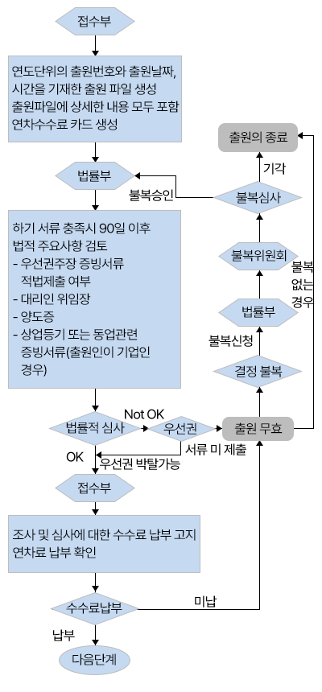
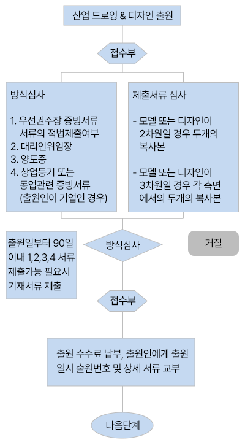
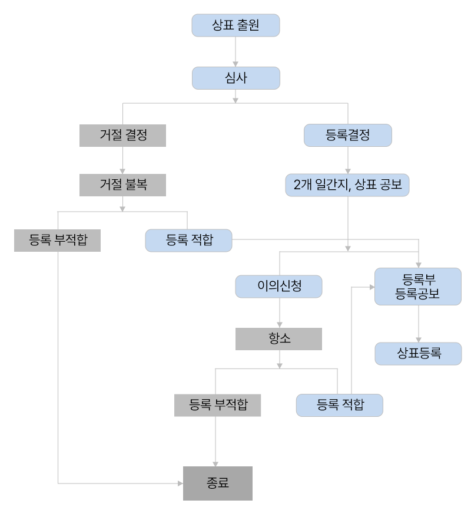
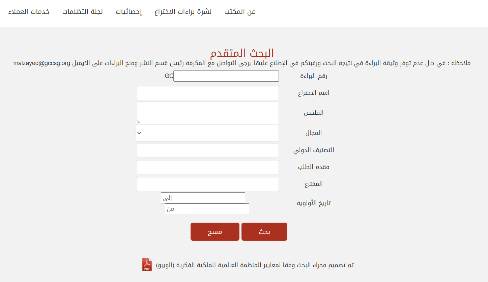

본 Q&A 게시판을 통해 해당 국가별 지재권 관련 궁금하신 사항을 문의 주시면, 성심성의껏 답변드리도록 하겠습니다. 다만. 비영리 공익을 목적으로 운영되므로 모든 게시글은 공개를 전제로하며, 해당 답변에 대한 법적인 책임과 효력을 갖지 않습니다
PARTI UAE일반현황
제1절 국가·지역정보
1. 국가 기본정보
가. 현황
| [표 1] 국가기본정보 출처: 외교부 홈페이지, Kotra 국가 경제정보 | |
| 일반사항 |
•국명 : 아랍에미리트연합국 The United Arab Emirates(UAE)
•수도 : 아부다비(Abu Dhabi) •인구 : 928만명 ('21.6월 연방통계청) •면적 : 8만 3600㎢ (한반도의 약 1/3) •언어 : 아랍어(영어도 통용) •종교 : 이슬람교(수니파 85%, 시아파 15%) •민족 : 아랍족, 외국인(아시아계, 이란계) •기후 : 고온 다습(5-10월 35-45도, 11월-4월 15-35도) •건국 : 1971.12.2(영국보호령에서 독립) |
|---|---|
| 정치현황 |
•정부형태 : 연방제, 대통령 중심제(7개 에미리트(emirates)로 구성)
•주요인사 -대통령 : Khalifa bin Zayed Al Nahyan(아부다비 통치자) -왕세제 : 모하메드 빈 자이드 왕세제(차기 대통력직 계승자) -부통령 겸 총리 : Mohammed bin Rashid Al Maktoum(두바이 통치자) -외교장관 : Abdullah bin Zayed Al Nahyan(아부다비 출신) •의회구성 -연방평의회 : 40명(여성 50% 의무화) •외교노선: 친서방, 비동맹 |
| 경제현황 (2019년 기준, IMF 추정치) |
•GDP : 3589억$ (연방통계청)
•1인당GDP : 3만 8661$ •경제성장률 : 14.0% △6.1%(연방통계청) •화폐단위 : UAE Dirham(AED)/1US$=3.67DH(고정환율) •교역 : 규모: 6,290억불(EIU) -수출액 : 3852억$ -수입액 : 2937억$ -수출품목 : 원유, 가스, 알루미늄 등 -수입품목 : 기계, 전자, 자동차 등 •주요자원 : * ('20, BP) - 원유매장량 : 978억 배럴(세계 7위, 5.8% 점유) - 가스매장량 : 7.8조 m³(세계 7위, 4% 점유) |
| 우리나라와의 관계 |
•외교관계
-1980.06.18. 수교 •공관현황 : * 우리측 : 상주(’80.12., 아부다비) - '19.05. 권용우 대사 부임 / 주두바이총영사관(’08.03. 신설) - '21.06. 문병준 총영사 부임 * 상대국 : 상주(’87.03.) - '16.11. Al-Nuaimi(알-누아이미)대사 부임 •교역 : '20, KITA -수출액 : 36억 5000만$ -수입액 : 56억 9000만$ -수출품목 : 자동차부품, 기호식품, 무기류 등 -수입품목 : 원유, 석유제품, 알루미늄 등 -건설수주현황 : 347건, 약 781.12억불('65~'19 누계, 해외건설협회) •교민현황 : 9,642명(아부다비 : 5,678명, 두바이 : 3,153명 등)('21) •주요협정 체결현황 -2004.06. 투자보장협정 (’02.06월 서명) -2005.03. 이중과세방지협정 (’03.09월 서명, '19.2월 개정) -2010.07. 항공협정 (’05.11 서명) -2008.04. 경제․무역및기술협력 협정 (’06.05월 서명) -2007.05. 군사협력협정 (’06.11월 서명) -2008.02. 문화협력협정 (’07.05월 서명) -2010.01. 원자력협력협정 (’09.06월 서명) -2015.12. 세관상호지원협정 (’15.03월 서명) •원유 도입량 : 72백만 배럴('18, 한국석유공사) •우리기업 진출현황: 170여개('20, Kotra) |
나. 한-아랍 무역현황 및 사업정보
| [표 2] 對 韓 무역협정 체결현황 출처 : KOTRA | ||||
|---|---|---|---|---|
| 협정명 | 체결국가 | 체결일자 | 발효일자 | 비고 |
| 포괄적경제동반자협정(CEPA) | 한국, 인도, 튀르키예, 영국, 이스라엘, 인도네시아, 에티오피아, 케냐 | 2021.10.14 (추진합의 공동선언문 발표) | 미정 | -한국 수출품 관세, 통관절차 간소화 |
| 세관상호지원협정 | 한국 | 2015.03.05. | 2015.12.16 | -양국 세관간 상호 협력추진을 명시한 협정 |
| 자유무역협정(FTA) -GCC 주관 | 한국 | 2022.03. | -서비스, 투자, 원산지, 통관, 지식재산권 등 | |
2. 경제관련 정보
| [표 3] 경제관련 정보 자료원 :IMF, 싱가포르 통상산업부(MTI), 싱가포르 통화청(MAS), KITA(수출입 '22년 5월 기준), KOTRA | |||||
|---|---|---|---|---|---|
| 경제지표 | 2017 | 2018 | 2019 | 2020 | 2021 |
| 경제성장률(%) | 0.8 | 1.7 | 1.7 | -5.9 | 2.3 |
| 명목 GDP( 십억$) | 377.7 | 422.22 | 421.14 | 354.28 | 410.2 |
| 1인당 GDP(PPP, $) | 62,864.04 | 63,320.39 | 63,589.80 | 58,753 | 65,686 |
| 1인당 명목 GDP($) | 38,030 | 40,480 | 39,180 | 31,980 | 43,538 |
| 정부부채(% of GDP) | 21.6 | 20.9 | 26.8 | 38.3 | 37.3 |
| 물가상승률(%) | 2 | 3.1 | -1.9 | -2.1 | 2 |
| 실업률(%) | 2.5 | 2.2 | 2.3 | 5 | 3 |
| 수출액(백만$) | 384,044 | 392,863 | 404,046 | 335,238 | - |
| 수입액(백만$) | 345,514 | 333,838 | 347,450 | 293,726 | - |
| 무역수지(백만$) | 38,530 | 59,025 | 56,596 | 41,512 | - |
| 외환 보유고(백만$) | 95,400 | 99,500 | 108,400 | 106,700 | 118,847 |
| 이자율(%) | 1.75 | 2.25 | 2 | 1.5 | 1.5 |
| 환율 (자국통화) | 3.67 | 3.67 | 3.67 | 3.67 | 3.67 |
3. 지식재산권 분야 정보
UAE의 지식재산권 보호 분위기나 정도는 매우 열악한 상태임. UAE에 진출한 많은 기업들 중 대다수 기업들이 UAE에 특허나 상표를 등록하지 않고 있는 것으로 나타남. 이는 현재 UAE에서의 지식재산권 보호 정도와 밀접한 관련이 있음
UAE 정부에서는 원칙적으로 상표권 등 지식재산권을 보호하고 있으나, UAE는 위조 상품의 천국이라고 알려져 있을 정도로 상표 또는 원산지 위조 상품들이 범람하고 있는 실정임. 현재 UAE 시장에는 중국 등 후발 개도국의 제품이 상대적으로 인기가 좋은 한국산 휴대폰이나 에어컨 등으로 둔갑해 판매되는 일이 비일비재함. 한편, 한국산 안경테나 시계가 이탈리아 등 유럽산으로 위조되어 판매되는 경우도 있음
이와 같이 UAE에서 지식재산권 보호 정도가 열악한 현상은 UAE 정부, 특히 상업 중심지인 두바이 정부가 위조 상품이 경제에 미치는 영향을 고려하여 피동적인 단속을 하고 있기 때문임. UAE 정부는 피해 당사자가 명확한 증거를 제시했을 때만 단속을 시행함. 다만 최근에는 영화, 게임 관련 해적판 단속을 강화하고 있으며, 자동차 부품 등의 정품 사용 캠페인이 실시되는 등 지식재산권 보호 움직임이 활발해지고 있음
제2절 현지 유관기관 정보
1. 산업재산권 기관
가. 관할 당국
UAE에서 특허 및 관련 지식재산권 업무는 경제부(Ministry of Economy)에서 담당하고 있고, 산업재산권부(Industrial Property)에서 특허 및 디자인 관련 업무를 담당함. 상표와 저작권은 경제부 산하 상업부(Commercial Affairs Sector)의 상표 부서 및 저작권 부서에서 각각 업무를 담당하고 있음. 각 부서 담당 및 연락처는 아래 [표 4]와 같음
| [표 4] UAE 지식재산권 관할 당국 | ||||
|---|---|---|---|---|
| 구분 | 내용 | |||
| 경제부 |
○ Web site: www.economy.ae
○ Tel: 971 (+)2 6131111 ○ Fax: 971 (+)2 6260000 ○ Email: economy@economy.ae |
|||
| 산업 재산권부 | 특허/디자인 부서 |
○ Tel : 971 (+)2 6131238
○ Fax : 971 (+)2 62636321 ○ Email : aoweida@economy.ae |
||
| 상업부 | 상표 부서 |
○ Tel : 971 (+)2-627-3198
○ Fax : 971 (+)2 626-2922 |
||
| 저작권 부서 |
○ Tel : 971 (+)2-446-6145 (ext. 603/463)
○ Fax : 971 (+)2-443-6331 ○ E-mail : copyright@mail2uae.com |
|||
나. GCC 특허청
GCC(The Gulf Cooperation Council, 걸프만 협력회의)는 사우디아라비아 리야드에 특허청을 설립하였음. GCC 특허와 관련된 내용은 GCC 특허청 사이트(www.gccpo.org)에서 제공하고 있음
상기 사이트에서 GCC 특허에 관한 규정과 출원 서식 서류 및 가이드라인 등을 제공하고 관련 사이트를 안내하고 있음. GCC 특허청 관련 연락처는 다음 [표 5]와 같음
| [표 5] GCC 특허청 업무 관련 연락처 | ||||
|---|---|---|---|---|
| 구분 | 연락처 | |||
| 전화번호 | +966-1-4829378 | |||
| 팩스번호 | +966-1-4829600 | |||
| 이메일 | gccpatent@gcc-sg.org | |||
| 주소 | Patent Gazette GCC Patent Office P. O. Box 340227 Riyadh 11333 Kingdom of Saudi Arabia | |||
GCC 특허청은 이사회 및 특허청 직원으로 구성되고, 특허청의 수행 업무는 다음 [표 6]과 같음
| [표 6] GCC 특허청 업무 관련 연락처 | ||||
|---|---|---|---|---|
| 연번 | 내용 | |||
| 1 | GCC 특허등록부 관리 | |||
| 2 | GCC 특허출원 수리 | |||
| 3 | 특허등록 여부 심사 | |||
| 4 | 등록에 대한 공고 | |||
| 5 | GCC 특허 공보 발행 | |||
| 6 | 위와 관련된 기타 부수적인 업무 수행 | |||
GCC 특허와 관련된 분쟁은 GCC 특허 위원회와 각국 국내 법원에서 다루어짐. 이와 관련한 각 역할은 다음 [표 7]을 통하여 살펴봄
| [표 7] GCC 각 기관과 역할 | ||||
|---|---|---|---|---|
| 기관 | 내용 | |||
| GCC 특허 위원회 |
○ GCC 특허법을 토대로 설치된 준사법적 기관이고, 절차적 측면 및 실체적 측면(특허성 등)을 둘러싼 출원인과 특허청과의 분쟁을 심리함
○ 심사관의 결정에 대한 심판 청구는 GCC 특허 위원회에서 행함 ○ 위원회는 침해 소송이나 이의 신청 등, 제3자가 관여하는 분쟁은 다루지 않음 |
|||
| 각국 국내 법원 |
○ 국내 법원은 제3자가 관여하는 분쟁을 심리함
- 침해 소송 및 이의 신청 절차는 재판 관할권을 갖는 국가의 법원이 심리 ○ 관할은 침해행위가 발생한 지역의 수장국(Emirate)이 그 관할권을 갖게 됨 |
|||
2. 그 외 지식재산권 유관기관
가. 민사 법정
민사 법정은 채권 회수 사건과 같은 상사(商事) 문제를 포함하여 다양한 종류의 분쟁을 조사함. 당사자에게는 판결이 나온 후에 판결일로부터 30일 이내에 사실 관계 또는 법률 문제를 이유로 공소 재판소에 공소할 권리가 주어짐
공소 재판소에서는 새로운 증거를 제출하거나 새로운 증인을 추가하는 것도 가능함. 5명의 판사로 이루어진 두바이 최상급 재판소인 파기원의 단계에 이르게 되면 당사자는 법률적인 문제에 관한 것으로만 재판을 받을 수 있음
당사자는 공소 재판소 판결의 통지를 받은 날로부터 30일 이내에 파기원에 상소를 해야 하는데, 파기원의 모든 결정은 최종결정이므로 이에 대해서 상소하는 것은 불가능
나. 형사 법정
UAE에 있어서 형사 소송은 형사 법정에서 관할하고, 범죄가 일어난 재판 관할 구역의 지방 경찰에게 고소하는 것에서 시작됨. 경찰은 조사 중에 사건에 관하여 임의의 당사자에 대해 그 진술을 토대로 한 조서를 작성할 수 있음
일반적으로 제3자의 행위에 대해 개인 또는 기업이 경찰에 소송을 제기하는 것이 가능하며 적절하다고 판단될 경우에는 경찰은 당사자를 조사 체포하고, 그들의 조사와 행동의 결과를 검찰관에게 전달함
지방 경찰은 통상적으로 소송이 제기되면 48시간 이내에 심사를 끝내고 검찰청에 사건을 송치함. 경찰은 공소 제기를 구하는 권고를 첨부해 사건을 정식으로 송치하기 전에 사건에 대해 검찰관에게 조언을 구할 수 있음. 검찰청은 재판소에 공소를 제기할 것인지 또는 증거 불충분으로 불기소 처리를 할 것인지를 결정함. 검찰관은 경찰로부터 사건을 송치 받은 날로부터 14일 이내에 기소할지 불기소할지 여부를 결정해야 함
지식재산권을 침해한 사람은 일반적으로 벌금이 부과되고, 경우에 따라 감금되거나 또는 감금 후 강제송환이 행해지기도 함
- 상표권의 소유자는 손해 배상을 청구하는 민사의 당사자로서 형사소송의 심리를 참가할 수 있음
다. 종교재판 법정
UAE에 있어 종교재판 법정은 형사 법정 및 민사 법정과 공조가 가능함. 종교재판 법정은 UAE의 이슬람 재판소이며, 주로 이슬람교도 간의 민사 문제를 담당함. 이와 관련하여 비 이슬람교도가 종교 재판 법정에 출정하는 일은 없음
- 종교재판 법정은 이혼, 상속, 어린이 감호, 아동 학대 및 미성년자의 감호를 포함한 가족 분쟁의 심리에 대해 배타적 관할권을 가짐. UAE의 성문법에 있어 적용 가능한 규정이 존재하지 않는 경우엔 이슬람교의 종교 재판에 있어서 문언으로 존재하는 이슬람교적인 원칙이 적용됨
- 또한, 연방 차원의 종교재판 법정에서는 처음에 하급의 형사 법정에서 공판이 이루어진 강간, 강도, 음주 운전 및 이것에 관한 범죄를 포함하여 일정한 형사 사건의 공소 사건도 심리하는 것이 가능함
라. 연방대법원
연방 최고 재판소는 UAE의 최상급 재판소이고, 법률적인 문제에 관한 쟁점만을 심리함. 연방 최고 재판소는 하급 재판소 판결에 대한 공소심 재판소로서 기능할 뿐만 아니라, 하급 재판소가 법률을 바르게 적용하고 해석하도록 하기 위해 이들 재판소를 감독함. 하급 재판소는 연방 최고 재판소가 정한 법 원칙에 따라야 함
3. 지식재산권 관련 조약 현황
| [표 8] 지식재산권 관련 조약 현황 | ||||
|---|---|---|---|---|
| 구분 | 조약명 | 가입연도 | ||
| 지식재산권보호 | Paris Convention | 1996 | ||
| 글로벌 보호 체계 | Budapest Treaty | 2021 | ||
| Madrid Protocol | 2021 | |||
| Patent Cooperation Treaty(PCT) | 1999 | |||
| 지재권 분류 | Nice Agreement | 2021 | ||
| Strasbourg Agreement | 2021 | |||
제3절 지식재산권 지원 사업 현황
| [표 9] 지식재산권 지원 사업 현황 | |||||
|---|---|---|---|---|---|
| 사업분류 | 사업명 | 주요내용 | 세부정보(링크) | 비고 | |
| 1. 지식재산창출 | IP기반 해외진출 지원 | 수출(예정) 중소기업 대상 최대 3년간 IP 서비스(해외권리화 지원 등)를 제공하여 글로벌 강소기업으로 육성 | www.ripc.org | ||
| 스타트업 지식재산바우처 사업 | 스타트업 대상으로 원하는 IP 서비스(국내외 IP 권리화 등)를 원하는 시기에 이용할 수 있는 바우처 발급 | 위탁기관 미정 | |||
| 중소기업 IP 바로지원 | PCT 출원 비용 등 중소기업 경영시 발생하는 시급한 IP 애로 사항 상담 및 해결 | www.ripc.org | |||
| 2. 지식재산활용 | 지식재산 서비스 활성화 사업 | 지식재산서비스기업의 국내·외시장 판로 개척 지원 | www.kaips.or.kr | ||
| 3.지식재산보호 | 해외 지식재산센터(IP-DESK)운영 | 개별국가에 설치된 IP-DESK를 통해 해외 진출(예정) 기업의 해외 지재권 상담 및 분쟁 초동대응 등 지원 | www.kotra.or.kr | ||
| K-브랜드 분쟁대응 지원 | 수출기업의 K-브랜드 해외 지재권 침해 피해 최소화를 위한 온라인 위조 상품 및 상표 무단선점 대응 지원 | www.koipa.re.kr | |||
| 특허 분쟁대응 지원 | (사전예방)기업 맞춤형 특허분쟁 위험 진단 및 예방 지원 (사후대응)특허침해·피침해 분석 등 분쟁 상황별 맞춤형 대응 전략 제공 |
www.koipa.re.kr | |||
| 4. 기타 수출지원 사업 | 수출바우처 사업(산업부) | 중소·중견기업 중 세부사업 요건을 충족하는 기업을 대상으로, 해외 IP 획득 및 활용에 필요한 서비스를 바우처 형태로 지급 | www.exportvoucher.com | 산업부 | |
| 수출바우처 사업(중기부) | 수출 유망 중소기업 대상, 해외 IP획득 및 활용에 필요한 서비스를 바우처 형태로 지급 | www.exportvoucher.com | 중기부 | ||
| 중소기업 혁신 바우처 사업(중기부) | 제조업 영위 중소기업 대상, IP 출원 및 컨설팅 서비스를 바우처 형태로 지급 | www.mssmiv.com | 중기부 | ||
※ 사업분류 1,2,3은 특허청 산하 사업임
※ 위 자료는 2022년 기준으로 작성되었으며, 세부 지원 기준 등 자세한 사항은 각 홈페이지 링크를 통해 확인이 필요함
PARTII 지식재산권
제1절 개요
1. 법률체계 및 지식재산권 관련 법률
가. UAE의 지식재산권 보호 현황
UAE 정부에서는 원칙적으로 상표권 등 지식재산권을 보호하고 있으나, UAE는 위조 상품의 천국이라고 알려져 있을 정도로 상표 또는 원산지 위조 상품들이 범람하고 있는 실정임. UAE에서 지식재산권 보호 정도가 열악한 현상은 UAE 정부, 특히 상업 중심지인 두바이 정부가 위조 상품이 경제에 미치는 영향을 고려하여 피동적인 단속을 하고 있기 때문임. UAE 정부는 피해 당사자가 명확한 증거를 제시했을 때만 단속을 시행함. 다만 최근에는 영화, 게임 관련 해적판 단속을 강화하고 있으며, 자동차 부품 등의 정품 사용 캠페인이 실시되는 등 지식재산권 보호 움직임이 활발해지고 있음
- 특허나 디자인 등에 대해서도 보호가 미흡함. 1993년 들어 관련 법 규정을 제정해 특허나 디자인을 보호하고 있으나, 이 같은 업무를 담당하는 독립된 정부 조직이 없음. 이것은 특허를 출원하거나 디자인 등록을 신청할 만한 기술이나 디자인이 아직 UAE에는 많이 개발되지 않고 있다는 사실에서도 그 원인을 찾아볼 수 있음
나. UAE 수출 기업의 지식재산권 취득 현황
앞서 언급한 바와 같이 UAE에 진출해 있는 우리 기업들의 지식재산권 취득 정도는 매우 미약함. 이것은 차후에 특허 분쟁이 일어나는 등 문제점이 될 수도 있으나, 다른 측면에서 보면 아직까지는 UAE에서 지식재산권의 취득이 그다지 절박하지 않다는 반증이 될 수도 있음
UAE 진출기업 중 인터뷰에 응한 많은 기업에서는 특허나 상표 등의 지식재산권이 UAE에서 기업 활동을 하는데 그다지 도움이 되지 않으며, 특허나 상표 등을 등록하기 위해서 드는 비용에 비하여 그 가치가 떨어진다고 생각하고 있음. 실제로 UAE에 출원되어 등록이 되는 특허의 양은 그 수가 매우 적으며, 등록 상표 또한 다른 나라에 비해 매우 적은 수준에 그치고 있음
2. 최근 개정사항 및 동향 소개
가. 2021년 걸프 협력 회의(GCC) 특허법 개정사항
2021년 6월 1일, 중동·아프리카의 지식재산 미디어 매체인 ‘SABA IP’에 따르면 2021년 4월 11일 걸프 협력 회의(GCC)는 특허법(Patent law)을 개정함
- GCC 특허법은 GCC 국가들의 미비한 제도를 보완하고 GCC 지역 간의 통일된 지식재산권 보호를 위해 제정되었으며, GCC 특허청은 사우디아라비아의 수도 리야드에 설립된다는 내용을 규정
- GCC 특허법에 따라 GCC 특허청에 출원되고 등록된 특허는 GCC의 모든 회원국 내에서 유효함
(1) GCC 특허청 선택 가능
또한, 2000년 이후 GCC 각 회원 국가가 PCT 특허협력조약에 가입하고, 자국 지식재산권 제도를 정비하면서 스스로 출원·심사가 가능하게 됨
- 개정 특허법에 따르면 원칙적으로 GCC 개별 회원국에서 특허 출원·심사·등록을 수행하며, GCC 개별 회원국 특허청의 요청이 있는 경우에 GCC 특허청에서 특허 출원을 접수하고 심사를 할 수 있음
- GCC 특허청에 대한 특허 출원 요청은 GCC 개별 회원국 특허청의 선택사항임
- 특허권 등록 역시 출원·심사를 요청하였던 개별 회원국 특허청에서의 승인이 필요하며, GCC 특허청의 심사를 거쳐 등록된 GCC 특허의 효력은 GCC 특허를 요청했던 국가에서만 유효함
- 한편 GCC 특허청에서 현재 심사 계류중인 특허에 대해서는 출원된 당시의 법률에 따라 집행하며, 개정사항은 소급하여 적용되지 않음
(2) 특허출원 '아웃소싱' 가능
개별 GCC 회원국의 특허청에 특허 출원을 아웃소싱하는 것은 개정안으로 도입된 가장 두드러진 변화임. 본질적으로 개정안은 GCC 전체에서 시행할 수 있는 단일 특허의 개념을 폐지하려고 함. 이전에는 리야드에 위치한 GCC 특허청이 GCC 국가의 국가 특허청과 독립적으로 신청서를 접수, 검토 및 승인했음. 이는 이전의 'GCC 전체 특허' 모델에서 분명한 출발을 나타냄
특허 처리 및 등록을 개별 국가 사무소에 위임한다고 해서 GCC 특허청의 역할이 무효화되는 것은 아님. 오히려, 개별 국가 특허청을 대신하여 GCC 국가(들) 요청에 대해서만 특허 출원, 기소, 조사 및 승인을 받고 처리함. 이는 특허 부여가 요청 회원국의 승인을 받아야 하며 해당 국가에서만 유효함을 의미함
개정안의 결과로 특허출원인은 다음 중 하나를 통해 GCC 전체에 걸쳐 특허 출원을 할 수 있음
12개월 우선권 기간 내에 파리 협약 출원을 통해 각 GCC 주에 특허 출원을 제출하거나, 또는, 36개월 우선권 기간 내에 PCT(특허 협력 조약) 출원을 통해 각 GCC 주에서 특허 출원을 제출함. GCC 6개국은 각각 파리협약과 PCT에 서명한 국가임
위의 목적을 위해 발명에 대한 첫 번째 특허 출원은 '우선권'을 설정함. '우선권 기간' 동안 특허출원인은 발명의 상업적 실행 가능성을 평가하고, 필요한 경우 계속 개발하며, 동일한 발명에 대해 다른 국가에서 특허 출원을 제출할지 결정할 시간이 있음
나. 상표법 개정
UAE에서 상표권 침해에 대해 몇 차례 대대적인 단속이 있기는 하였으나, 상표법이 자세히 규정되지 않다 보니, 분쟁이 발생할 경우 전문적인 처리를 기대하기 어려운 측면이 있었으나, 2021년 개정된 UAE 상표법(Federal Decree Law No.36 of 2021)은 기존 실무와 판례에서 발달되어 온 상표권 관련 법리를 명문화하고, 상표권의 내용에 국제적인 기준을 포함시킴. 또한, 상표등록 및 취소 관련 전문위원회를 설치하고 상표권 침해 시 처벌 규정을 강화하여 적어도 제도적인 수준에서는 이전에 비해 상표권에 대한 보호가 강화됨
개정된 상표법 주요 내용은 다음과 같음
| [표 10] 2021년 개정 상표법 주요내용 | |||||
|---|---|---|---|---|---|
|
① 등록 가능한 상표의 범위에 3D 상표, 색채 상표, 홀로그램 상표와 소리 상표 등 새로운 유형을 포함하여 보다 다양한 유형의 상표권을 인정
② 주지의 저명한 상표 및 유사상표에 대해서는 등록을 금지하도록 명문화 ③ 주지의 저명한 상표의 판단기준을 명시 ④ 상표 등록 및 상표 취소의 관할 기구 연방경제부(Ministry of Economy) 로 지정 ⑤ 법무부에서 지명하는 1인의 특수법관과 2인의 전문가로 구성된 상표권 이의심판위원회(Trademarks Grievances Committee, 연방경제부 산하)를 설치 ⑥ 상표권 이의심판위원회에서 상표권 등록 및 취소에 관련된 분쟁 전담 ⑦ 상표권 이의심판위원회의 결정에 대한 불복은 연방항소법원에 제기하도록 함 ⑧ 판례로만 인정되어 오던 선사용 상표에 관한 권리를 명문화 ⑨ 상표 사용 허락 시 상표청(Trademark Registrar)에 등록할 의무가 없음을 명시 이전 법에서는 타인에게 상표사용을 허락하는 계약(실시계약)을 체결할 경우 이를 상표청에 등록하도록 규정되어 있어 등록하지 않은 계약의 효력에 관한 논란이 있었음. 상표법 개정으로 이에 대한 논란을 해소한 것임. 한편, 상표권의 이전·담보설정·가압류 등의 경우, 이를 법정절차에 따라 등록 및 공표하지 않으면 제3자에게 대항할 수 없음 ⑩ 상표에서 지리적 표시의 제한에 대해 구체적인 규정 마련 ⑪ 단체표장에 관한 규정 마련 ⑫ 상표등록심사 기간은 90일로, 상표이의심판에 관한 이의기간은 통지받은 날로부터 30일로 변경 ⑬ 한 번의 출원 신청으로 다양한 상품류에 대해 보호(1출원 1클래스 폐지) ⑭ 상표권 침해에 대응하는 다양한 가처분을 유형을 상표법에서 규정3) 상표권 침해 상품뿐 아니라 침해행위에 사용되는 원재료 및 장비까지 압류할 수 있으며, 수출입을 정지시키고 관련 증거의 보전까지 요구할 수 있음. 가처분 신청 후 10일 이내에 가처분 여부가 결정되며, 신청 후 20일 이내에 실체 소송을 제기하여야 함 ⑮ 상표법 위반행위에 대한 처벌 강화 |
|||||
다. 산업재산권 개정
2021년 8월 29일, 아랍에미리트 지식재산청(AGIP)은 개정 산업재산권법(Industrial Property Law)이 지난 2021년 5월 31일 UAE 연방관보에 2021년 법률 제11호로 공표(Federal Gazette No. 703)되었다고 밝힘
개정 산업재산권법은 2021년 11월 30일 발효될 예정이며, 주요내용은 다음과 같음
- 발명가는 자신의 발명을 공개한 후 12개월 이내에 특허를 출원할 권리를 갖게 되며, 이로써 UAE에서 발명의 신규성 판단 기준이 절대적 신규성(absolute novelty)에서 상대적 신규성(relative novelty)으로 전환됨
- 출원인은 신속 심사를 요청할 수 있으며, UAE 특허청은 이러한 신속심사 요청에 대응해야 함
- 진단 및 치료 방법은 특허의 대상이 아니지만, 이러한 진단 및 치료 방법에 사용되는 제품에 대한 특허권 부여가 가능한지 여부는 명시적이지 않으며 이에 대한 해설은 향후 지침을 통해 제공할 예정임
- UAE가 실체심사를 해외 특허청(예를 들어, 한국 특허청)에 계속 외주를 주는 한 출원서는 영어와 아랍어로 작성하여 제출해야 함
- 실용신안은 법률 요건을 충족하는 경우 특허로 전환할 수 있음
- 산업디자인은 출원일 이전에 공표, 사용, 기타의 방식으로 공중에 공개되지 않은 경우에만 신규성이 인정되며, 보호기간은 출원일로부터 20년으로 연장됨
- UAE 특허청에 반도체 집적회로 설계에 대한 출원 신청을 할 수 있으며 보호기간은 10년임
3. 한 페이지로 보는 지식재산권 제도
| [표 11] 한 페이지로 보는 지식재산권 제도 |
|---|
|
· 2021년 GCC 특허법이 개정되어, UAE에 신규 특허 출원하려면 원칙적으로 GCC 특허청이 아닌 UAE 특허청에 출원해야 함
· UAE에서는 식물과 동물 품종, 식물이나 동물을 생산하기 위한 생물학적 방법에 관련한 특허와 실용신안는 등록받을 수 없음 (미생물 발명은 등록 가능함) · 산업재산권법이 개정됨에 따라, 발명가는 자신의 발명을 공개한 후 12개월 이내에 UAE에 특허를 출원할 권리를 가질 수 있음 (12개월의 신규성 적용예외 기간이 적용됨) · 타인의 등록상표와 동일, 유사한 지정상품에 계속해서 사용해왔고, UAE 수요자간 그 상표가 특정인의 상품을 표시하는 것으로 인식되어 있을 경우 상표의 선사용 권리가 인정됨 (2021년 상표법 개정사항) · 상표 출원시 한번의 출원 신청으로 다양한 상품류에 대해 보호할 수 있게 됨 (2021년 상표법 개정으로 1출원 1클래스 원칙 폐지되고, 다류 출원이 가능해짐) · 브랜드 헌터, 상표갈이, 모방품과 같은 지식재산권 침해를 주의해야하며, 이를 예방하기 위해서는 관련 상표 등록이 필요함 · 타인의 주지·저명상표와 유사한 상표는 상품 분류를 불문하고 오인 혼동을 일으킬 우려가 있어, 등록이 불허됨 · UAE는 이슬람 국가이기 때문에 알코올과 관련된 32류, 33류 상표는 등록받을 수 없음 · UAE에서 반도체 집적회로 설계에 대한 출원 신청이 가능하여, 반도체 집적회로 설계에 대한 권리 보호가 가능해짐 (보호기간 : 10년) |
제2절 주요 지식재산권별 비교표
1. 특허
| UAE | 한국 | |
|---|---|---|
| 특허법 적용 |
선출원주의이나, 타인의 허락 있으면 특허출원 받을 여지 있음
(UAE 특허 및 디자인법 제8조) |
선출원주의 |
| 특허요건 |
신규성
진보성 산업상 이용가능성 |
신규성
진보성 산업상 이용가능성 |
| 신규성 예외 상실 기간 | 12개월 | 12개월 |
| 심사청구제도 | X | O |
| 공개제도 | O | O |
| 공고제도 | O | O |
| 이의신청제도 | O | O |
| 권리존속기간 |
설정등록일로부터 발생,
출원일로부터 20년간 존속 |
설정등록일로부터 발생,
출원일로부터 20년간 존속 |
| 실용신안제도 | O (존속기간 10년) | O (존속기간 10년) |
2. 디자인
| UAE | 한국 | |
|---|---|---|
| 심사방식 | 일부심사방식 (방식 심사만 함) | 물품에 따라 심사방식, 일부심사방식 병행 운영 |
| 보호기간 | 설정등록일로부터 발생하여
출원일로부터 10년 |
설정등록일로부터 발생하여
출원일로부터 10년 |
| 신규성 예외 상실 기간 | 12개월 | 12개월 |
3. 상표
| UAE | 대한민국 | |
|---|---|---|
| 다류 1출원 제도 | 다류 1출원 제도 채택 | 다류 1출원 제도 채택 |
| 존속기간 | 상표등록일부터 10년 | 상표등록일부터 10년 |
| 이의신청 제도 | O | O |
| 의견제출 또는 정보제공 | X | O |
| 등록 후 사용증거 제출의무 | X | X |
PARTIII 특허
제1절 특허 제도
1. 출원현황 통계
2011년부터 2020년까지 UAE에서 특허 출원된 건수를 살펴보면 아래의 표와 같음
| [표 13] UAE 특허 출원 건수 출처: WIPO | ||||
|---|---|---|---|---|
| 연도 | Resident | Non-Resident | Abroad |
|
| 2011 | 33 | 1,318 | 199 | |
| 2012 | 29 | 1,327 | 250 | |
| 2013 | 33 | 1,402 | 386 | |
| 2014 | 49 | 1,438 | 343 | |
| 2015 | 61 | 1,714 | 484 | |
| 2016 | 81 | 1,642 | 703 | |
| 2017 | 96 | 1,733 | 634 | |
| 2018 | 92 | 1,723 | 644 | |
| 2019 | 96 | 1,843 | 693 | |
| 2020 | 71 | 1,869 | 765 | |
2011년부터 2020년까지 UAE에서 특허 등록된 건수를 살피면 다음과 같음
| [표 14] UAE 특허 등록 건수 출처: WIPO | ||||
|---|---|---|---|---|
| 연도 | Resident | Non-Resident | Abroad |
|
| 2011 | 0 | 1 | 35 | |
| 2012 | 0 | 10 | 50 | |
| 2013 | 1 | 117 | 101 | |
| 2014 | 3 | 278 | 118 | |
| 2015 | 2 | 94 | 104 | |
| 2016 | 3 | 259 | 142 | |
| 2017 | 14 | 377 | 257 | |
| 2018 | 11 | 452 | 308 | |
| 2019 | 11 | 1,274 | 378 | |
| 2020 | 3 | 503 | 292 | |
2. 주요제도
UAE는 1974년 9월 24일 세계 지식재산권 기구(WIPO)에 가입하였으나, 1974년 제정된 라스 알카이마 수장국(Ras Al-Khaimah emirate)의 상표권법이 유일한 지식재산권법이었을 정도로 지식재산권 보호에 취약하였음
UAE는 1992년 특허, 디자인, 실용신안권에 관한 법령 44/1992호가 제정되었지만 그 효력에 있어 유명무실하다가 1996년도에 WTO 가맹국에 가입하고 TRIPS 협정(무역관련 지식재산권 협정)의 준수 의무를 지키기 위한 일환으로 2002년 17/2002호 법령을 제정하여 특허, 실용신안, 디자인(design), 산업(제품) 도면(industrial drawing) 등에 관련된 지식재산권을 보호하기 시작하였음
가. 등록요건
발명이 특허로서 등록을 받기 위해서는 몇 가지 요건을 만족해야 함. UAE의 2006년도 특허 및 디자인법에 의하면 특허는 창의적인 아이디어나 모든 기술 분야의 진보적인 단계로부터 나오는 새로운 발명에 부여된다고 명시하고 있음. 또한 이러한 아이디어나 진보적인 단계는 과학적인 근거를 가지고 있어야 하며, 산업적으로 이용이 가능해야 한다고 규정하고 있음
(1) 신규성
발명의 신규성이란, 발명의 내용이 사회의 일반에 아직 알려지지 않은 상태를 말하는 것으로, 그 발명의 ⌜객관적인 창작성⌟을 의미함. 특허로서 등록을 받기 위해서는 기존에는 없던 새로운 발명, 즉 신규성이 있는 발명이어야 함
보통의 특허법과 마찬가지로 UAE의 특허 및 디자인법 제4조에서도 새로운 발명에 대해서만 특허를 승인한다는 내용을 명시적으로 나타내고 있음
그러나 새로운 발명이라는 규정만 있을 뿐 신규성인 구체적인 내용이나 어떤 경우에 신규성이 상실되는지에 대해서는 특별한 언급이 없어 신규성을 판단하는데 있어 그 기준이 법적으로 명시되어 있지 않음
| [표 15] UAE의 특허 및 디자인법 특징(신규성) | ||||
|---|---|---|---|---|
|
■ 신규성에 있어서 UAE 특허 및 디자인법은 우리나라의 특허법과 다른 점이 있음
■ 우리나라의 특허법에서는 제29조에서 신규성 상실 사유에 대해 명확하게 규정을 하고 있음. 특허법 제29조 1항에서는 다음 각 호의 어느 하나에 해당하는 것을 제외하고는 그 발명에 대하여 특허를 받을 수 있다고 규정하고, 1호에서는 특허출원 전에 국내 또는 국외에서 공지되었거나 공연히 실시된 발명, 2호에서는 특허출원 전에 국내 또는 국외에서 반포된 간행물에 게재되거나 대통령령이 정하는 전기통신회선을 통하여 공중이 이용가능하게 된 발명이라고 하여 신규성 상실사유에 대해서 명확히 나타내고 있음 ■ 즉, 우리나라의 경우에는 국내 또는 국외를 구분하지 않고 발명의 내용이 공지 또는 공연히 실시되었거나 일정한 전기통신회선을 통하여 공중이 이용 가능하게 되었다면, 그 발명은 신규성을 상실하게 되어 특허등록을 받을 수 없게 됨 ■ 하지만 UAE의 경우, 이러한 신규성 상실 사유를 명시하지 않아서 특허 등록요건으로서의 신규성을 어떤 기준에 의해 판단하는지가 특허법 조문에 명확하게 나타나지 않는다는 점을 유의해야 함 |
||||
(2) 진보성
발명의 진보성이란, 특허출원이 있기 전에 그 발명의 기술이 속하는 분야에서 통상의 지식을 가진 자(당업자)가 이미 알려진 공지 기술로부터 해당 기술을 용이하게 발명할 수 없어야 한다는 것을 의미하며, 이는 다시 말해 발명에 있어서의 ⌜주관적인 창작성⌟을 의미함
UAE의 특허 및 디자인법에서는 제4조에서 창의적인 아이디어나 모든 기술 분야의 진보적인 단계로부터 나오는 발명이라 하여 발명의 진보성을 언급하고 있음. 그러나 진보성의 구체적인 내용이나 판단 근거가 법조문에 명확히 나와 있지는 않음
| [표 16] UAE의 특허 및 디자인법 특징(진보성) | ||||
|---|---|---|---|---|
|
■ 진보성에 있어서도 UAE 특허 및 디자인법과 우리나라의 특허법에는 차이가 있음
■ 우리나라의 특허법에서는 제29조 2항에서 특허요건 중 진보성 요건에 대해 명확하게 규정을 하고 있음. 특허법 제29조 2항은 특허출원 전에 그 발명이 속하는 기술 분야에서 통상의 지식을 가진 자가 동조 1항에 규정된 신규성 상실 사유에 해당되는 공지기술에 의하여 용이하게 발명할 수 있는 것일 때에는 그 발명이 신규성이 있다고 하더라도 특허를 받을 수 없다고 하여 진보성의 판단 근거를 명시하고 있음 ■ 하지만 UAE의 경우, 이러한 진보성의 판단 근거가 법조문에 명시되어 있지 않는다는 점을 유의 해야함 |
||||
(3) 산업상 이용가능성
산업상 이용가능성이란, 어떤 발명이 산업에 실제로 이용될 가능성이 있는지 여부를 나타내는 특허요건임. 발명이 신규성과 진보성을 모두 갖추었더라도 실제로 산업에 이용할 수 없는 것이라면 특허를 받을 수 없음
특허 및 디자인법에서도 제4조에서 특허발명은 산업상 이용가능성이 있어야 한다고 명시하고 있음
- 산업상 이용가능성에서의 산업의 범위는 유용하고 실용적인 기술에 속하는 모든 활동을 포함하는 최광의로 해석되는 것이 일반적임. 특허 및 디자인법에서도 농업이나 어업, 수공예(handicrafts)나 서비스 분야 등에 이용되는 것을 포함한다고 하여 넓은 범위의 산업임을 나타내고 있음
(4) 1발명 1특허출원
특허출원은 오직 하나의 발명에 대하여만 해야 함. 하지만 발명의 내용이 서로 연관되거나 총괄적으로 하나의 개념에 속하는 발명일 경우에는 하나의 특허출원으로 할 수 있음. 이는 다시 말해서 발명의 ⌜단일성⌟을 의미함
- UAE의 특허 및 디자인법에서도 특허출원은 오직 하나의 발명에 대하여 해야한다고 하여, 1발명 1특허출원 원칙을 채택하고 있음. 또한 1군의 발명에 대하여도 규정하고 있는데, 상호 관련되어 하나의 총괄적 개념을 형성하는 1군의 발명에 대하여도 1특허출원을 할 수 있다고 명시하고 있음
- 다만 일단 특허가 등록이 된 후에는 1군의 발명에 대한 요건이 충족되지 않는다고 하더라도 이것이 특허의 취소 사유가 되지는 않음
(5) 부등록 사유
UAE 특허 및 디자인법 제6조에서는 특허의 부등록 사유에 대하여 다음과 같은 사항을 명시하고 있음. 특허와 실용신안이 다음의 경우에 해당할 때에는 등록을 받을 수 없음
a) 식물, 동물 품종 또는 식물이나 동물을 생산하기 위한 본질적으로 생물학적인 방법에 해당하는 경우에는 등록을 받을 수 없음(※ 단, 미생물적인 방법 또는 그 생산물에 대해서는 예외적으로 등록을 받을 수 있음)
- UAE의 특허 및 디자인법은 식물과 동물에 관련된 특허는 등록받을 수 없다는 명시적인 규정이 있는데, 이는 UAE가 속하는 아랍권 국가의 보수적인 성향이 반영된 것이 아닌가 하는 추측을 해볼 수 있음. 다만, 미생물 발명의 경우에는 예외적으로 등록 받을 수 있으나 그 구체적인 요건이나 방법에 대해서는 언급이 없음
b) 인간 또는 동물을 대상으로 하는 수술이나 치료 및 진단 방법에 대해서도 특허나 실용신안을 받을 수 없음
- UAE의 특허 및 디자인법에서는 인간과 동물을 가리지 않고 동물을 대상으로 하는 수술이나 치료 및 진단 방법에 대해서도 특허나 실용신안을 받을 수 없다고 명시하여 우리나라 특허제도와의 차이점을 보여주고 있음
c) 과학 및 수학적 원리, 발견 및 그 방법은 그 자체로서 특허나 실용신안을 받을 수 없음
- UAE 특허 및 디자인법은 법에 명시적으로 과학 및 수학적 원리, 발견과 그 방법 그 자체로서는 특허나 실용신안을 받을 수 없다고 부등록 사유를 나타내고 있음
d) 사업 수행 또는 정신적 활동이나 게임을 하기 위한 방법이나, 그 규칙 및 가이드는 그 자체로서 특허나 실용신안을 받을 수 없음
- UAE 특허 및 디자인법에서는 사업 수행 또는 정신적 활동이나 게임을 위한 방법 등은 그 자체로서 특허나 실용신안을 받을 수 없도록 명시하고 있지만 우리나라 특허법에서는 이러한 명시적인 규정이 없음
- 다만, 이 또한 발명의 성립성의 문제로서 발명은 자연법칙을 이용해야 하는 바, 자연법칙을 이용하지 않고 자연법칙과 무관한 정신적 활동이나 게임을 하기 위한 방법 등은 발명으로서 성립할 수 없음
e) 미풍양속, 공공질서를 해하는 발명은 특허나 실용신안 등록을 받을 수 없음
- UAE 특허 및 디자인법에 따르면 미풍양속이나 공공질서를 해하는 발명은 특허나 실용신안 등록을 받을 수 없음. 이것은 우리나라 특허법에도 비슷한 규정이 존재함
- 우리나라 특허법에서는 UAE의 특허 및 디자인법과 달리 공공의 질서와 미풍양속(선량한 풍속)에 관한 규정 이외에 공중의 위생을 해할 염려가 있는 발명까지도 특허를 받을 수 없다는 사항까지 포함되어 있다는 차이점이 있음
이상에서 알 수 있듯이 UAE의 특허 및 디자인법에서는 부등록 사유라고 하여 몇 개의 조항을 언급하고 있으나, 우리나라에서는 특허를 받을 수 없는 발명에 관한 사항을 명시한 제32조와 제62조의 특허 거절 결정을 할 때, 그 사유에 관한 사항을 명시하고 있다는 점이 두 나라의 특허법에 있어서 차이점이 될 수 있음. 또한 UAE에서 특허 심사 중에 발명이 국방 관련 기술인 것이 명백한 경우에는 UAE의 특허 및 디자인법 시행 규칙에 따름
| [표 17] UAE의 특허 및 디자인법 특징(식물 또는 동물 생산방법 특허) | ||||
|---|---|---|---|---|
|
■ UAE의 특허 제도에서는 식물과 동물의 품종에 관한 발명이나 식물이나 동물을 생산하는 본질적인 생물학적인 방법은 특허나 실용신안을 등록받을 수 없음
■ 반면 우리나라의 경우 몇 가지 조건 하에서 식물특허나 동물특허를 받을 수 있는 방법이 있음 ■ UAE의 특허제도에서도 인간이나 동물을 대상으로 하는 수술이나 치료 및 진단 방법에 대해서는 특허나 실용신안을 받을 수 없음 ■ 그러나 우리나라에서는 동물에 한정하는 경우에는 수술이나 치료 및 진단 방법에 대해서도 특허를 받을 수 있다는 차이점이 있음 ■ 또한 UAE에서는 과학 및 수학적 원리, 발견이나 그 방법 등 자연과학 그 자체나 사업 수행 또는 정신적 활동, 게임을 하기 위한 방법 등은 발명 자체가 성립하지 않음 ■ 우리나라 특허법에서는 ⌜자연법칙을 이용하여⌟라고 명시적인 표현이 되어 있어서 특허를 받을 수 있는 발명이 성립하려면, 자연법칙을 이용해야 하고 자연법칙 그 자체는 제외함. UAE에서도 같은 취지에서 비슷한 내용을 법조문에 명시하고 있음 ■ 미풍양속이나 공공질서를 해하는 발명이나 국방관련 기술은 우리나라 특허법에서도 거의 같은 취지의 조문이 있으나, 공중의 위생을 해할 염려가 있는 발명에 대해서 우리나라는 명시적으로 규정하고 있는 반면에 UAE에서는 특별히 따로 언급되어 있지 않음 ■ 다만 취지상 이 경우에는 포괄적인 개념인 미풍양속이나 공공질서에 반하는 발명 또는 기타 사유에 해당할 수 있음 |
||||
(6) 선출원주의
우리나라의 특허제도에는 선출원주의라고 하여 동일한 발명에 대하여 다른 날에 2이상의 특허출원이 있는 때에는 먼저 특허 출원한 자만이 그 발명에 대하여 특허를 받을 수 있다는 규정이 법에 명시되어 있음
특히 동일한 발명에 대하여 같은 날에 2이상의 특허출원이 있으면 특허출원인의 협의에 의하여 정해진 특허출원인만이 그 발명에 대하여 특허를 받을 수 있도록 하고, 협의가 성립하지 않으면 어느 특허출원인도 그 발명에 대하여 특허등록을 받을 수 없도록 되어 있음
UAE 특허 및 디자인법에서는 우리나라 특허법과 같이 선출원에 대한 자세한 판단기준에 대해서는 명시하고 있지 않음. 다면 UAE 특허 및 디자인법 제7조 2항에서 ⌜본법 제8조와 제9조에 위배되지 않는 한도에서 선출원자 또는 우선권 주장 출원한 자는 특허요건이 충족되는 경우 특허를 받을 수 있음⌟라고 하여 선출원이 특허요건을 충족했을 경우 특허를 받을 수 있다고 명시하고 있음
UAE 특허 및 디자인법 제8조는 특허의 ⌜모인출원⌟에 대한 규정임. 타인의 특허에서 허가 없이 발명의 본질적인 요소를 취득하여 특허출원이나 특허등록을 받았을 경우에 타인(발명의 본질적인 요소의 취득 대상이 된 특허의 원래 소유자)은 그 출원이나 그 특허에 대한 권리 이전을 청구할 수 있다는 내용임
- 이는 다시 말해서 타인의 발명으로부터 본질적인 요소를 취득한 경우라도 그 타인의 허가를 얻으면 특허출원이나 등록을 받을 수 있고, 그 허가를 받지 못할 경우에만 그 타인은 출원이나 특허에 대한 권리의 이전을 청구할 수도 있다고 해석됨. 이러한 부분은 우리나라의 특허법에는 규정되지 않은 UAE 특허 및 디자인법의 특징이라고 볼 수 있음
UAE 특허 및 디자인법 제30조는 2개의 발명이 같은 산업적 목적을 위한 것일 경우, 선출원 특허권자 또는 실용신안 등록권자의 신청이 있는 경우에는 후출원 특허권 또는 실용신안 등록에 대하여 강제실시권이 허여된다고 하여 강제실시권에 대한 내용을 명시하고 있음
- 2개의 발명이나 고안이 동일하지 않아 선출원과 후출원 모두 특허등록이나 실용신안 등록이 되었다고 하더라도 그 2개의 발명이나 고안이 산업적인 목적이 같은 경우에는 선출원 특허권자 또는 실용신안 등록자는 신청에 의하여 후출원 등록특허 또는 실용신안 등록에 대하여 강제실시권을 허여받을 수 있다는 내용임
| [표 18] UAE의 특허 및 디자인법 특징(선출원주의 및 강제실시권) | ||||
|---|---|---|---|---|
| UAE 특허 및 디자인법 제7조 |
1. 본법 제9조에 따라 특허에 대한 권리는 발명을 한 자 또는 그 승계인이 가짐. 2인이 공동으로 발명을 한 때에는, 발명에 대한 권리는 발명자들 또는 그 승계인들에 대하여 공유로 함. 발명을 완성하기 위하여 창작과정에서 역할을 다하지 않고 보조만을 제공하는 자는 발명자로 간주되지 않음
2. 본법 제8조 및 제9조에 위배되지 않는 한 선출원자 또는 우선권 주장 출원 한 자는 특허 요건이 충족되는 경우 특허를 받을 수 있음 3. 당사자는 본 법 및 시행 규칙에 따라 신청의 승인 또는 거절 결정에 불복 신청 및 심판 청구를 할 수 있음 |
|||
| UAE 특허 및 디자인법 제8조 | 발명의 본질적 요소를 타인의 발명으로부터 취득한 경우, 특허출원에 그 타인의 허가를 얻을 수 없는 경우에는 그 타인은 출원이나 특허에 대한 권리 이전을 청구할 수 있음 | |||
| UAE 특허 및 디자인법 제30조 | (생략) 2. 2개의 발명이 같은 산업적 목적을 위한 것일 경우, 선출원 특허권자 또는 실용신안 등록권자의 신청이 있는 경우에는 후출원 특허권 또는 실용신안 등록에 대하여 강제실시권이 허여됨 | |||
(7) 직무발명
UAE 특허 및 디자인법 제9조는 6개의 항으로 직무발명을 규정하고 있음
- 직무발명이란 고용원이 자신의 업무와 관련하여 그 결과물로 발명을 한 경우 그 발명을 직무발명이라고 하며, 사용자와의 관계에서 발명 결과물의 귀속이 문제가 됨
| [표 19] UAE 특허 및 디자인법 제9조 | ||||
|---|---|---|---|---|
|
1. 고용 계약 또는 특정 업무 수행을 위한 계약의 수행에서 이루어진 발명에 대한 특허출원에 대한 권리는 계약에 달리 명시되지 않는 한, 고용주 또는 해당 업무 위탁자에 귀속함
2. 발명품의 경제적 가치가 당해 계약의 체결 시 해당 계약 당사자가 예측하는 것을 초과하는 경우, 발명자는 추가적인 보수를 받을 권리가 있고 또한 일정 금액에 대해 당사자 사이에 합의되지 않으면 법원이 결정해야 함 3. 종업원의 발명이나 연구가 종업원의 직무범위에 속하지 아니하고, 사용자의 업무 범위에 속하는 발명인 경우, 발명자가 본 조 제4항에 의한 통지를 하거나, 어떤 경로를 통하여 사용자가 상기 발명에 대하여 알게 된 경우 그 발명에 대한 양수 의사를 서면으로 표시하지 않으면 상기일로부터 4개월 후에 그 발명은 발명자에게 귀속함 4. 발명을 한 종업원은 지체 없이 서면으로 그 발명에 대하여 사용자에게 알려야 함 5. 사용자가 본 조 제3항에 정하는 기간 내에 당해 발명의 소유에 관심이 있는 것을 표명한 경우, 사용자는 발명에 대한 특허 받을 수 있는 권리를 가짐. 발명을 한 종업원은 정당한 보상을 받을 권리가 있고, 보상금 산정시 발명의 경제적 가치와 사용자가 얻는 경제적 이익이 고려되어야 함. 당사자가 보상금액에 합의가 되지 않는 경우 법원은 보상금액을 결정해야 함 6. 종업원에 대한 불이익한 계약은 본 조에 의하여 무효로 간주됨 |
||||
위와 같이 제1항의 경우, 직무발명에서의 특허출원을 받을 수 있는 권리에 대한 귀속 사항을 규정하고 있으며, 제2항은 직무발명의 보수에 대해 규정하고 있음
또한 제3항에서 종업원의 발명이나 연구가 종업원의 직무 범위에 속하지 아니하고, 사용자의 업무 범위에 속하는 발명인 경우, 발명자가 서면으로 사용자에게 통지하거나, 또는 어떤 경로로든 사용자가 발명에 대하여 알게 된 때에는 그 발명에 대한 양수 의사를 서면으로 표시하지 않으면, 4개월 후에 그 발명은 발명자에게 귀속함
제5항에 의하면 사용자는 4개월 내에 당해 발명의 소유에 관심이 있는 것을 표명해야 특허를 받을 수 있는 권리를 갖게 됨
발명을 한 종업원은 정당한 보상을 받을 권리가 있으며, 보상금 산정 시에는 발명의 경제적 가치와 사용자가 얻는 경제적 이익이 고려되어야 함. 만약 당사자들 사이에 보상금액에 대하여 합의가 이루어지지 않을 경우, 법원이 보상금액을 결정해야 한다고 규정함
나. UAE 진출기업의 전반적인 애로 사항
UAE는 제조업이 발달되어 있지 않기 때문에 대부분 물품에 대하여 수입에 의존하고 있으며 현재 건설, 사회간접자본, 의료, 생활 가전 등의 다양한 분야에 한국기업들이 진출해 있음. 2008년 5월 기준으로 UAE에 진출해 있는 한국 기업은 약 120여개로서 그 중 40%가 중동 지역의 거점으로 UAE의 두바이에 그 거점을 두고 있음
UAE 현지에서 우리나라 기업들이 겪고 있는 애로 사항들은 무더운 날씨나 높은 물가, 이국적인 환경보다는 기업 활동을 하기 위해 필요한 관공서의 각종 인허가에 대한 취득이나 라이선스 갱신 등에 관한 것이 대부분임. 또한 다양한 문화와 민족이 공존하는 UAE에서의 인력관리의 문제도 어려운 문제 중 하나임
UAE에서는 매년 라이선스를 갱신하는 제도가 급변하고 법령의 체계가 아직 제대로 갖춰져 있지 않아 현지에 있는 대리인들도 변경된 제도나 법령의 내용 또는 그것이 언제 어떻게 적용되는지에 대하여 파악하기가 매우 어려운 실정임
우리나라처럼 법이나 시행 규칙의 개정이 자주 되는 편도 아니며 개정이 되어도 그 내용이 공공에 알려지지 않는 경우가 많음. 실제로 UAE의 지식재산권 법체계나 법령을 조사한 바로는 경제부나 법제처 사이트를 통해 게시된 법령에 대한 정보를 찾아볼 수 있었으나 개정된 내용의 미흡한 반영 때문에 어려움을 겪은 바 있음
UAE에는 여러 민족과 문화가 공존하고 있음. 실제로 UAE 고유의 민족은 그 수에 있어서 얼마 되지 않고 인도나, 인도네시아, 필리핀 등 동남아시아 민족이 인구의 대다수를 차지하고 있음
- 전체 인구의 몇%도 되지 않는 UAE 고유 민족들은 여러 가지로 사회적인 혜택을 받고 있으며, 외국회사의 경우 UAE 자국민을 5% 이상 채용해야 하는 규율도 있음. UAE 자국민은 거의 일을 하지 않기 때문에 월급을 주고 등록만 유지하고 있는 곳이 매우 많으며, 실질적으로 일을 하는 사람들은 인도인 등 타민족인 경우가 대다수임
- 이처럼 UAE에는 실제 UAE 고유 민족보다는 다른 타 민족이 많이 있기 때문에 인력 관리의 문제에 있어도 어려운 점이 많음. 다양한 문화와 종교가 공존하기 때문에 이슬람뿐만 아니라 다양한 문화나 종교에 대하여 배려를 해야 함
다. UAE 진출기업의 지식재산권 관련 애로 사항
AE에서의 지식재산권 관련한 이슈들은 그리 많지 않음. 특히 특허에 관한 침해나 소송에 관한 이슈는 거의 찾아보기 힘들며, 다만 상표에 대한 침해 문제가 간혹 발생하고 있는 실정임
UAE는 지식재산권에 대한 제도나 법령이 아직 선진국에 비하여 미흡하며 또한 그에 대한 국민들의 인식도 매우 낮은 수준에 그치고 있음. 이것은 UAE가 왕에 의하여 지배되는 왕족 국가라는 사실과도 전혀 무관하지는 않음
- 우리나라 기업은 아직까지는 UAE에 특허출원을 하기 보다는 필요에 따라서 상표 출원을 하는 경우가 대부분임. 기업들에게는 UAE에서 많은 비용을 들여 특허나 상표 등 지식재산권을 취득하는 것은 침해나 소송 문제가 그리 많지 않은 현시점에서 비용 대비 얻을 수 있는 효과가 적다고 판단하고 있음
UAE에서의 지식재산권 관련 이슈에는 대표적으로 브랜드 헌터나 상표갈이 등이 있음
(1) 브랜드 헌터
브랜드 헌터는 어떤 특정 제품에 대하여 향후 수입이 있을 것으로 기대하고 영업활동은 하지 않으면서 유명 브랜드만 등록하는 경우를 말함. 이러한 브랜드 헌터들 때문에 실제로 유명 브랜드의 상품을 수입하여 판매 활동을 하려고 하는 업체들은 타인에 의하여 등록된 브랜드 때문에 그 브랜드로는 UAE에서의 영업 활동을 할 수 없게 됨. 따라서 영업 활동도 하지 않으면서 브랜드만을 등록한 자에게 라이선스를 받거나 비싼 값에 이전을 받아 영업활동을 할 수 밖에 없음
(2) 상표갈이
유통업자가 다른 나라의 제품을 수입하여 우리나라 기업의 유명상표를 붙여 판매하는 것을 상표갈이라고 함. 무관세지역인 UAE에서는 중국산 위성방송 수신기와 에어컨에 휴맥스와 LG전자 등의 상표가 부착되어 다시 이란이나 이라크, 사우디 등 중동 전역으로 수출되고 있는 것이 발각되었음. UAE의 지리적인 조건 때문에 이란, 이라크 등 저개발, 미개방 국가들이 수입하는 제품의 70% 이상이 UAE를 통과하고 있는 상황에서 이러한 상표갈이는 단지 UAE 뿐만 아니라 전 중동 지역에 영향을 주고 있음
(3) 모방품
UAE의 "드래곤 마트"와 같은 중국제품을 살 수 있는 매장에서는 이른바 산자이(山寨)라고 하는 중국의 모방품들을 쉽게 찾아볼 수 있음. 한국 시장에서 최신 휴대폰이 출시되면 며칠 내로 중국에서 똑같이 생긴 짝퉁폰이 판매되며 이러한 짝퉁폰은 해외 판매망을 통하여 UAE에까지도 그 모습을 드러내고 있음. 이러한 모방품들에 대하여 소비자들은 별다른 거부감이 없으며 오히려 싼 가격에 부담 없이 사용하고 버린다는 생각을 가지고 있음. UAE가 지식재산권에 대한 인식이나 제도가 미흡한 점도 있으나 이처럼 중국에서 비롯되는 모방품들에 대해서는 현재 거의 제재 방안이 없는 실정임
(4) 지식재산권 보호를 위한 양국간 협력
UAE 시장에서의 우리나라 기업들의 지식재산권 보호는 중동 전체시장에서의 지식재산권 보호 효과와 거의 동일한 의미를 가짐. 이러한 중요성으로 인하여 최근 우리나라의 지식경제부에서는 두바이와 정부 차원의 정기적인 교류 및 전략적인 공동 협력 사업을 추진하기로 함
지식재산권 관리 및 세관 등 담당 부처 간 교류도 검토 중이며 현지 대리인 등을 컨설턴트로 활용해 중국으로부터의 모방품 유입을 차단하고 감시하는 시스템도 구축하기로 함. 특히 UAE를 통해 주변 중동, 아프리카로 유입되는 침해품, 모방품을 차단하기 위해 현지 유명로펌을 활용, 현지 진출기업과의 멘토링 시스템도 구축할 예정임. 또한 2010년 5월에는 우리나라 특허청이 한-UAE 경제 공동위원회 최관회의에서 UAE 지식재산권부와 지식재산권 분야 협력을 위한 양해각서(MOU)를 체결하고 양국 간 협력을 본격 추진하기로 합의함
특허청과 UAE 지식재산권부는 국제사회에서 지식재산권 보호를 위한 국가 간 협력이 강화되고 있는 상황에서 한국 특허청의 지식재산권 보호 정책 수립과 운영 경험을 공유하는 등 지식재산권 보호를 위한 협력을 강화하기로 했으며, 한국형 특허행정정보화시스템(특허넷) 구축 경험, 특허 선진 5개국(IP5 Offices)의 일원으로서 활동 경험 및 선진화된 심사관 교육 시스템을 UAE측에 소개하고 UAE 지식재산권부는 이러한 특허청의 경험 공유를 희망하면서 특허행정정보화 및 교육 분야의 협력 추진에 동의함
제2절 출원 및 심사절차
1. 특허 출원 절차
UAE의 특허 출원 절차는 4단계에 걸쳐서 살펴볼 수 있으며, 제1단계는 출원단계, 제2단계는 방식심사단계, 제3단계는 실체심사단계, 제4단계는 등록단계임. 각 단계에 대한 세부 절차는 하기 [그림 1]과 같음
특허와 실용신안을 출원하려면, 우선 접수 단계에서 우선권 주장 증빙서류, 대리인 위임장, 양도증 등의 서류를 제출해야 함. 이에 대하여 방식심사단계를 거치는 데 방식심사는 우선권 주장 증빙서류, 대리인 위임장, 양도증 등의 적법제출 여부와, 발명의 상세한 설명, 청구항, 우선권 주장 출원인 동일 여부, 도면 및 요약에 관한 제출 서류심사로 이루어짐
| UAE 특허 및 실용신안 출원단계 | UAE 특허 및 실용신안 방식심사단계 |
|---|---|
|  |
[그림 1] UAE의 특허 출원절차
방식심사를 거친 후, 서류가 양식에 맞지 않을 경우에는 90일 이내에 미비된 서류의 제출이 가능하며, 서류가 미 보완되었을 경우에는 출원은 거절 또는 반려가 됨. 방식심사를 통과한 경우에는 출원 수수료를 납부해야 하며, 이때 출원인에게 출원 일시, 출원번호 및 상세 서류를 교부하게 됨
| UAE 특허 및 실용신안 실체심사단계(3) | UAE 특허 및 실용신안 등록단계(4) |
|---|---|

|
[그림 2] UAE의 특허 심사 및 등록 절차
서류가 충족되었을 경우, 법률적 심사를 거치게 되며 법률적 심사를 만족하지 못할 경우에는 출원이 무효처리 됨. 출원인은 출원 무효결정에 대한 불복을 할 수 있고 만약 불복이 없을 경우에는 출원이 종료됨
출원 무효결정에 대한 불복이 있으면 법률 부분에 대하여 위원회가 구성되고 위원회는 불복 적법 여부 심사를 하게 됨. 만약 불복이 타당하다면 다시 한번 법률적 심사를 거쳐 접수 단계로 들어감
접수 단계를 거치면 조사 및 심사에 대한 수수료 납부 청구가 고지되고, 연차료 납부 확인을 하게 되며, 만약 수수료가 납부되지 않으면 출원은 무효가 됨
다음 단계는 출원 심사 단계로서 출원된 발명이 법 규정 및 특허성(신규성, 진보성, 산업상 이용가능성) 등을 만족하는지 여부를 심사하는 단계로서 해당 심사는 호주의 특허청으로 송달되어 이루어짐
심사결과 특허성을 만족하지 못하는 경우에는 거절 결정이 나게 되며 출원인은 보정을 하거나 거절 결정에 대한 불복을 할 수 있음
출원된 발명의 특허성이 인정되면 심사 결과를 통보받게 되고 이와 함께 공고 수수료 고지를 받게 됨. 출원인은 공고 수수료 납부해야 하며, 수수료가 납부되면 특허등록을 받을 수 있음
특허등록이 있은 후에는, 이해관계인은 공고일로부터 60일 이내에 이의 신청이 가능하며, 이의 신청이 있는 경우에는 이의 신청의 방식심사를 하고 다시 한번 심사단계를 거치게 됨
심사를 통해 이의 신청을 기각되게 되면 특허등록은 유지되며, 이의신청이 적합한 경우에는 특허는 거절됨. 출원인은 특허 거절에 대해 거절 불복 신청을 할 수 있고, 거절 불복 신청이 없는 경우에는 출원은 종료됨
거절 불복이 있는 경우에도 방식심사와 심사단계를 거쳐 위원회에서 결정을 내리게 되며, 만약 거절 불복이 기각되면 출원은 종료되고 그렇지 않은 경우 특허등록은 유지됨
마지막으로 등록 결정된 특허 문헌이 접수되면 심사부서를 거쳐 최종 특허 서류를 검토한 후에 특허 공표, 등록증 배부, 공보 게재, 등록부에 특허권자 등록 등을 하게 됨
가. 서류제출
UAE에 특허출원을 하기 위해서는 우리나라와 마찬가지로 여러 가지 필요한 서류들이 있음. 특허출원을 하기 위해서 필요한 서류들을 살펴보면 다음의 [표 20]과 같음
| [표 20] 특허출원 시 제출 서류 | ||||
|---|---|---|---|---|
| 연번 | 서류 | |||
| 1 | 출원서 | |||
| 2 | 특허출원 관련 서류 제출 서약서 | |||
| 3 | 명세서 | |||
| 4 | 특허 발명 영문 요약 | |||
| 5 | 서류 제출증 | |||
위의 필요 서류들은 영문과 아랍어 중 하나를 선택하여 기재하도록 구성됨. 각 서류의 내용을 살펴보면 다음과 같음
i) 출원서는 출원인, 발명자 대리인 및 발명의 명칭과 청구항 등을 포함한 서지적 내용을 포함함
ii) 특허출원 관련 서류 제출 서약서는 필요 서류 등을 나열하여 이하 서류들을 기한(출원일로부터 90일 이내)까지 제출하겠다는 서약의 내용을 포함하고 있음
iii) 명세서는 발명의 상세한 설명을 포함한 출원 명세서임
iv) 특허 발명에 대한 요약은 영문본을 별도의 파일로 제출해야 함
v) 서류 제출증은 특허출원시 제출하는 여러 가지 파일 중에서 제출한 파일들의 항목을 확인하는 서류이고, 출원시 제출해야 하는 파일들에 대해서는 이하 체크포인트에서 확인하도록 함
■ 체크포인트 (UAE 특허 출원 시 제출 파일 항목)
| [표 21] UAE 특허 출원 시 제출 파일 항목 | ||||
|---|---|---|---|---|
| 연번 | 체크사항 | 예 | 아니오 | 모름 |
| 1 | 특허/실용신안 출원서는 제출하였나? | |||
| 2 | 발명의 상세한 설명은 제출하였나? | |||
| 3 | 발명 내용을 뒷받침하는 도면은 제출하였나?(필요시) | |||
| 4 | 도면에 대한 간략한 설명은 제출하였나?(도면 있는 경우) | |||
| 5 | 출원인이 기업인 경우 영업신고증 등 증빙 서류는 제출하였나? | |||
| 6 | 대리인이 있는 경우 위임장은 제출하였나? | |||
| 7 | 출원인이 발명자가 아닌 경우, 양도증은 제출하였나? | |||
| 8 | 발명의 주요 내용이 제3자에서 기인한 경우, 이에 관한 발명에 대한 소유권 증명 서류는 제출하였나? | |||
| 9 | 조약 우선권 주장의 경우, 관련 증빙 서류는 모두 제출하였나? | |||
| 10 | PCT 출원의 경우, 심사 내용과 서치 리포트는 포함하였는가? | |||
| 11 | 임시 보호가 필요한 경우 이에 관한 증명 서류는 제출하였는가? | |||
| 12 | 4번~11번의 서류에 대한 추후 제출시 제출 서약서는 제출하였는가? | |||
나. 대리인
UAE 특허 및 디자인법에 대리인에 대한 규정은 거의 찾아 볼 수 없음. 다만 특허나 실용신안을 등록 받기 위해서, 대리인을 두어야 한다는 것은 일반적으로 통용되는 사실임
UAE 특허 및 디자인법 제5조에는 발명이 특허를 등록받을 정도로 충분히 창의적이지 않을 경우에는 특허가 아닌 실용신안 등록을 받을 수 있고, 제4조의 특허 등록요건을 만족하는 모든 발명에 대해서도 발명자나 법적 대리인의 요청이 있을 경우에는 실용신안 등록을 해야 한다고 하여 발명자 또는 법정대리인의 요구에 의한 실용신안 등록을 명시하고 있음
대리인을 선임하기 위하여 필요한 서류에는 대리인 등록 서류와 위임장 등이 있으며, 대리인 위임시 필요한 항목들은 다음 [표 22]와 같음
| [표 22] UAE 대리인 위임시 필요항목 | ||||
|---|---|---|---|---|
| 연번 | 내용 | |||
| 1 | 대리인 회사명 | |||
| 2 | 회사의 법적 실체 | |||
| 3 | 대리인 경력 | |||
| 4 | 회사 설립 연도 | |||
| 5 | 대리인 국적 | |||
| 6 | 대리인의 전문 학위 | |||
다. 출원
특허출원은 아랍어로 행해지고, 명세서, 청구범위, 도면 및 요약의 영어 번역을 첨부해야 함. 원서를 보충하기 위해 위임장, 양도증(해당하는 경우), 출원인의 회사 설립 증서 및 하나 이상의 임의의 우선권 문서가 증명된 사본을 원서의 제출일로부터 3개월 이내에 제출해야 함
그 후, 원서의 형식 심사를 하고, 문제가 없으면 실체 심사를 하기 위해 PCT 조사 당국의 어느 한 곳, 통상적으로는 오스트리아 당국에 명세서를 보냄
- 위의 단계에서 심사 수수료를 지불할 필요가 있고, 심사 수수료가 납부되지 않은 한 심사를 하기 위해 명세서를 보낼 수 없음
출원인이 출원 시에 이미 알고 있는 선행기술을 인용하는 것에 대해서는 아무런 요건도 부과되어 있지 않음. 출원인에게는 심사관에 의해 명시된 선행기술을 회피하기 위해 스스로 원서를 보정 할 기회가 주어짐
해당 발명이 신규이거나 진보성이 있는 것에 대해 심사관이 확신하고, 또는 이 이외의 점에 대해서도 법률을 토대로 출원을 거절할 어떠한 이유도 인정되지 않으면 UAE 경제부는 특허를 부여함
연간 수수료가 매년 지불되면 특허의 유효기간은 출원일로부터 20년간임. UAE에는 현재 특허 또는 출원의 실효에 대해 출원인/권리자에게 잘못이 없는 경우에도 효과를 잃은 특허를 회복하기 위한 규정이 존재하지 않고, 그 점에 주의할 필요가 있음. 한편 실용신안등록증의 유효기간은 실용신안등록증의 부여일로부터 10년임
나. 조약우선권
UAE 특허 및 디자인법은 제7조에서 본 법 제8조와 제9조에 따라 선출원자 또는 우선권 주장 출원을 한 자는 특허 요건이 충족되는 경우, 특허를 받을 수 있다고 규정하여 우선권 주장 출원에 대한 내용을 명시하고 있음
또한 특허 및 디자인법 제11조에서 UAE가 가입된 협정 또는 협약의 당사국에 출원된 출원을 기초로 우선권 주장 후 타 국가에 출원을 할 수 있음. 이 경우, 본법의 시행령에 따라 선출원의 출원일과 출원번호는 선출원된 국가명과 함께 명시해야 함
- 우선권 주장 기간은 최초 출원일로부터 12개월로 한다고 명시되어 있음
다. 국제특허출원
UAE 특허 및 디자인법은 제5절에 국제특허출원이란 내용으로 제37조와 제38조를 두어 국제특허출원에 대한 내용을 명시하고 있음
- UAE 경제부는 UAE에서 비준된 특허협력 조약에 따라 국제특허출원을 접수하며, 특허출원 시에 필요한 용어 및 조건은 본 법의 시행규칙에 따름. 경제부는 의회의 승인에 따라 경제부를 대신하여 국제출원을 접수하는 조약국의 특허청을 지정할 수 있음
2. 특허 심사 절차
가. 심사
UAE 특허 및 디자인법 제12조에 의하면 경제부는 본 법 및 시행 규칙에 따라 특허 또는 실용신안 등록 출원을 심사하여 등록해야 한다고 명시하고 있음. 그리고 특허 및 실용신안 등록에 필요한 서류의 제출을 청구할 수 있음
현재 UAE의 경제부는 의약 특허출원만을 심사하고 있고, 의약 특허출원의 형식 심사의 미처리분이 해결될 때까지 이것을 계속 이어가며 다른 출원 심사를 재개함
- 따라서 비의약 출원의 처리에 어느 정도의 기간이 필요한지를 추정하는 것은 곤란하지만, 현 단계에서는 아마 적어도 4~5년은 걸릴 것이라고 생각되며, 의약특허출원에 대해서는 2~3년은 걸릴 것으로 예상됨
경제부가 형식 심사와 실체 심사를 한 후, 특허 부여 또는 실용신안 등록을 하기 전에, 거기에 덧붙여 무언가의 요건을 충족하도록 요구하고 있는 경우가 있음. UAE 경제부에서 이루어는 것에 대해 실체 심사는 WIPO의 후원을 바탕으로 호주에 있는 조사 당국에 의해 행해짐
나. 등록 및 거절
UAE 특허 및 디자인법 제12조는 경제부는 본 법 및 시행 규칙에 따라 특허 또는 실용신안 등록 출원을 심사 및 등록 여부를 결정해야 하고 거절의 이유를 출원인에게 통지해야 한다고 명시하고 있음
UAE 특허 및 디자인법 제13조에 따르면, 특허 및 실용신안의 등록은 경제부 장관(MINISTER)의 결정에 따르며 이는 공보에 공고됨
특허 및 실용신안의 등록은 이해 관계자의 이의 신청이 제기되지 않는 경우에 출원인에게 등록증이 발부되며 이는 등록일, 수수료 납부 또는 기타 시행 규칙에서 요구되는 내용을 포함하고 등록 번호가 발부됨
3. 이의/심판 절차
가. 이의 신청
UAE 특허 및 디자인법 제13조는 특허 및 실용신안의 등록이 경제부 장관의 결정에 의하여 공보에 공개되면, 공개일로부터 60일내에 이해관계자는 누구든지 이의 신청서를 제출할 수 있다고 명시하고 있음. 이 기간 내에 이의신청이 제기되지 않으면 출원인은 등록증을 발부받게 됨
나. 불복신청, 심판청구
UAE 특허 및 디자인법 제7조와 제13조에 의하면 특허받을 수 있는 권리를 가지고 있는 발명자나 이를 승계한 자는 본 법 및 시행 규칙에 따라 신청의 승인 또는 거절 결정에 불복 신청 또는 심판 청구를 할 수 있으며, 경제부는 등록을 거절할 경우에 출원인에게 이를 통지하고 출원인은 당해 결정에 대하여 60일 이내에 해당 법원에 심판을 청구해야 함
불복 신청 처리는 그 목적을 위해 경제부(Ministry of Economy)로부터 임명된 불복 심사 위원회 (Grievance Committee)가 담당함
UAE 특허 및 디자인법은 실행 규칙의 집행에 관련한 결정을 둘러싸고 관계 당사자가 한 신청의 심사를 담당할 위원회를 설치하는 것을 상정하고 있음. 이 위원회의 구조, 위원의 보수, 신청 수속 및 그 때에 지불해야 하는 수수료는 실행 규칙에 따라 규정됨
위원회는 UAE 사법 대신이 임명하는 재판관이 위원장을 역임하고, 경제부의 직원을 제외한 지식재산권에 관한 전문가 2명을 여기에 추가해야 함. 위원회의 결정에 대해서는 UAE의 민사 소송법에 따라 그 결정이 행해진 날로부터 30일 이내에 관할권을 가지는 UAE의 재판소에 소송을 제기할 수 있음. 또한 재판소는 독립된 의견을 듣기 위해, 그 소송 절차 기간중에 전문가를 임명할 수 있음
제3절 등록 및 활용
1. 등록 및 유지
가. 특허권
(1) 특허권의 보호범위
UAE 특허 및 디자인법은 제16조에 의하여 등록 특허 또는 등록 실용신안의 보호범위는 출원서에 기재된 내용에 의하여 정해지며, 발명의 상세한 설명과 도면은 출원 발명을 뒷받침하는데 이용됨
- 이는 우리나라 특허법과 차이가 있는데, 우리나라 특허법에서의 보호범위는 특허청구범위에 의하여 결정되기 때문임
(2) 특허권의 귀속
UAE 특허 및 디자인법 제7조에 의하여 특허에 대한 권리는 발명을 한 자 또는 그 승계인이 가짐. 2인이 공동으로 발명을 한 때에는 발명에 대한 권리는 발명자들 또는 그 승계인이 공유하고, 발명을 완성하기 위해 창작과정에서 역할을 다하지 않고 보조만을 제공한 자는 발명자로 간주되지 않음
- 다만 발명의 본질적 요소를 타인의 발명으로부터 취득하게 된 경우에 특허출원에 그 타인의 허가를 얻어야 하며, 만약 그 허가가 없는 경우에는 그 타인은 출원이나 특허에 대한 권리 이전을 청구할 수 있게 됨
나. 존속기간
특허 및 실용신안의 존속기간은 UAE 특허 및 디자인법 제14조에 따라 특허는 특허출원일로부터 20년, 실용신안 등록은 출원일로부터 10년임. 이는 우리나라 특허와 실용신안의 존속기간과 동일함
다. 법정승계
UAE 특허 및 디자인법 제36조는 특허나 실용신안의 소유자 또는 그 법정 승계인은 그 발명의 개량 또는 수정에 대하여 추가로 특허 또는 실용신안 등록을 받을 수 있는 권리가 있다고 규정하여 법정 승계인의 권리에 대하여 명시하고 있음
2. 효력 및 활용
가. 특허권의 효력
UAE에서의 특허권의 효력은 특허 및 디자인법 제15조 등에 의해 나타내어짐. 본법에 의하면 특허권자는 하기 사항에 대하여 독점적인 권리를 갖게 됨
첫째, 제조, 생산, 사용, 판매를 위하여 발명을 이용하는 행위. 발명이 산업 제품이나 어떤 상품의 제조에 필요한 제품의 과정에 이용되는 경우, 그 권리는 특허권자에게 귀속함
- 발명이 제품인 경우, 타인이 특허권자의 동의 없이 생산, 사용, 판매, 수입을 하는 경우 금지할 수 있는 권리를 가짐. 발명이 산업적인 방법일 경우, 특허권자는 동의 없이 자신의 방법 발명을 사용하고, 그 방법을 통하여 생산, 사용, 보유 또는 수입하는 행위를 하는 경우 금지를 청구할 수 있는 권리를 가짐
둘째, 특허 또는 실용신안 등록을 위해 기 등록된 특허 또는 실용신안 등록의 방법을 통하여 직접 생산하는 것에 대한 방법 또는 위에서 언급한 행위를 하는 권리는 특허권자에게 귀속됨
- 상기 제15조 1항의 특허 및 실용신안권자의 권리는 산업적인 또는 상업적인 목적으로 수행하는 경우에 한정되고, 판매 후 사후적으로 관련된 활동에 대해서는 적용되지 아니함
나. 특허권의 효력 제한
UAE 특허 및 디자인법 제19조에 의하면 특허권에 부여된 권리는 다음 [표 23]의 행위에 대해서는 그 효력이 제한됨
| [표 23] UAE 특허권의 효력제한 | ||||
|---|---|---|---|---|
| 연번 | 내용 | |||
| 1 | 과학 연구 목적으로 수행되는 활동 | |||
| 2 | 운송 수단으로 UAE 내에서 일시적으로 운송장비, 시설, 장비 기타 부속품에 대한 발명의 실시의 경우
(※단, 해당 장비가 교통수단의 필요를 위해서만 사용되는 경우에 한함) |
|||
다. 특허의 실시
(1) 강제실시권의 설정
특허나 실용신안이 등록되어 충분히 실시되고 있지 않을 경우에 이해관계를 가지는 임의의 당사자는 강제실시권 허여(실시)를 신청할 수 있음. 이는 특허가 가지고 있는 일반적인 목적인 산업의 발전에 기여하는 부분과 연관되어져 있음
- UAE 특허 및 디자인법은 제24조~제32조까지 강제실시에 관한 규정을 두어 강제실시권에 대한 내용을 명시하고 있음
(2) 강제실시권 허여(실시) 신청
특허 또는 실용신안의 주제인 발명 또는 고안이 시행되고 있지 않거나 충분히 실시되고 있지 않은 경우, 이해관계를 가지는 임의의 당사자는 일정한 경우 강제실시권을 신청할 수 있음
- 해당 발명이 특허 및 실용신안 등록일로부터 3년이 경과하도록 UAE 내에서 발명에 대한 실시가 이루어지지 않은 경우에, 이해 관계자가 특허권자와 실시권 설정을 위한 협상을 시도했으나 이루어지지 않은 때에 강제 실시권 허여(실시) 신청을 제기할 수 있음
강제실시권 허여(실시) 신청은 특허권자 또는 실용신안권자인 권리자를 상대방으로 하는 소송 형태로 관할 법원에 제출되어야 함. 기관에 대해서는 검사를 보내도록 소환장을 송달함
재판 법원은 당사자에 대하여 합의에 의한 합의를 위한 유예기간을 허여할 수 있고, 유예기간 후 법원은 강제실시권 허여(실시) 여부를 결정해야 함
강제실시권은 등록되어야 하며, 법원은 본법 제24조에 의한 조건과 범위 및 보상금액을 언급해야 함. 이 결정은 다른 당사자와 특허등록부에 등기를 위해 경제부에 송부됨
이 결정에 필요한 수수료의 납부 후 공보에 공개되고, 또한 공개일로부터 제3자에 대한 구속력을 가짐
강제실시권을 신청할 경우 다음의 체크사항을 통하여 강제실시권 신청 대상이 되는지 확인해 볼 필요가 있음
■ 체크포인트 (UAE 특허권에 대한 강제실시권 허여(실시) 신청
| [표 24] UAE 특허권에 대한 강제실시권 허여(실시) 신청 | ||||
|---|---|---|---|---|
| 연번 | 체크사항 | 예 | 아니오 | 모름 |
| 1 | 신청 당시 해당 특허 또는 실용신안이 부여된 날로부터 적어도 3년이 경과하였는가? | |||
| 2 | 예비 실시권자가 합리적인 조건을 토대로 권리자로부터 실시권을 취득하기 위해 노력했지만, 그 노력이 성공하지 않았는가? (이에 관한 증빙서류 제출 필요) | |||
| 3 | 실시권이 전용 실시권이 아닌가? | |||
| 4 | 국내 시장에 공급할 목적으로 실시권이 부여되고, 발명이 충분히 시행되도록 확보하기 위해, 예비 실시권자가 법률을 토대로 한 보증금을 제공하였는가? | |||
| 5 | 실시권의 기간은 설정하였는가? | |||
| 6 | 실시권자가 공정한 액수의 보증금을 권리자에게 지불할 것인가? | |||
| 7 | 특허 발명이 이용되는 사업의 소유권과 함께 이전되는 경우에만 강제실시권이 제3자에게 이전할 수 있음에 대하여 숙지하고 있는가? | |||
| 8 | 반도체 기술에 관계된 발명의 경우에는 공익적이면서 비상업적, 또는 사법적, 행정적 절차에 의해 불공정 행위로 판정된 사항을 시정할 목적으로만 강제실시권이 부여된 것인가? | |||
(3) 실시의 허가
UAE 특허 및 디자인법 제29조에 의하면 경제부장관(MINISTER)은 발명이 공공 이익을 위하여 필요한 경우, 제24조 (다만 제1항 (a) 및 (b)는 제외)의 조건에 따라 특허 또는 실용신안 등록에 의해 보호되는 발명의 강제실시권을 해야 함
강제실시권 허여에 대한 경제부의 결정이나 그 보상 금액의 산정은 경제부의 결정이 공개공보에 게시된 날로부터 60일 이내에 관할 법원에 항소할 수 있음. 또한 동법은 제30조에서 발명의 목적이 다르거나 발명에 현저한 기술 향상이 있는 경우, UAE의 특허등록 또는 실용 등록에 의하여 보호되는 발명 또는 고안을 그 특허권자 또는 실용신안권자의 권리를 침해함 없이 실시를 하는 것이 불가능한 경우에는 발명의 실시가 필요한 범위 내에서 일정한 조건(법 제24조)에 따라 강제실시권이 허여된다고 규정하고 2개의 발명이 같은 산업적 목적을 위한 것일 경우, 선출원 특허권자 또는 실용신안 등록권자의 신청이 있는 경우에는 후출원 특허권 또는 실용신안 등록에 대하여 강제실시권이 허여됨
또한 양 당사자는 서면으로 합의를 할 수 있고, 특허등록부에 등기하기 위하여 경제부에 보고할 수 있음
실시 허가시 다음과 같은 내용이 포함되었는지 꼼꼼히 체크해 보아야 함
■ 체크포인트 (UAE 특허권에 대한 실시허가 계약)
| [표 25] UAE 특허권에 대한 실시허가 계약 | ||||
|---|---|---|---|---|
| 연번 | 체크사항 | 예 | 아니오 | 모름 |
| 1 | 특허권자와 실시권자간의 의무와 제약조건을 명시하였는가? | |||
| 2 | UAE 자국 내 수요 충족을 목적으로 하는가? | |||
| 3 | 다른 실시 허가의 조건이 있는 경우 조건을 명시 하였는가? | |||
| 4 | 실시권자는 충분한 실시를 보장하기 위한 담보를 제공하였는가? | |||
| 5 | 실시의 범위는 특허 등록의 범위 내에서 이루어졌는가? | |||
| 6 | 특허권자에게 정당한 보상금을 지급함에 대한 내용이 명시되어 있는가? | |||
강제실시 허가는 라이선스에 당해 물건을 수입하는 권리를 제외하고는 실시 허가 조건에 따라 본 법 제15조(특허권자의 권리에 관한 규정)에 규정된 활동의 일부 또는 전부를 수행할 수 있는 권한을 줌
실시권자는 특허권자 또는 실용신안권자가 그들의 발명을 과도하게 이용하거나 그 발명과 관련된 불법적인 실시가 이루어짐을 알게 된 경우, 특허권자나 실용신안권자의 의사에 반하여 민사적인 또는 형사적인 조치를 취할 수 있는 권한이 있음
| [표 26] UAE의 특허 및 디자인법 특징(강제 실시권 허여) | ||||
|---|---|---|---|---|
|
■ UAE 특허 및 디자인법 제30조는 이용발명에 대한 강제실시권 허여에 대하여 규정하고 있음
■ 이용발명이란 발명이 특허 발명에 비하여 목적이 다르고 현저한 기술적 효과가 있는 발명이나, 발명을 실시할 경우 특허 발명의 구성요소를 모두 포함하고 있어서 특허권을 침해하게 되는 발명을 의미 ■ 이 경우 특허권 침해로 특허권자의 허가 없이 발명을 실시하지 못하는 폐해에 대비하여 UAE 특허 및 디자인법은 이용발명의 특허등록 유무와 관계없이 강제실시권 허여 신청의 대상으로 규정하는 특징이 있음 ■ 이와 비교하여 우리나라의 경우를 살펴보면, 이용발명인 경우에도 진보성이 인정되는 경우에 특허등록을 받은 후 발명의 실시를 도모하고 있음 ■ 그러나 이용발명은 선등록 특허권을 침해함으로 쌍방이 서로의 특허발명을 실시할 수 있는 일명 “크로스라이선스” 형태로 실시를 도모하고 있음 |
||||
(4) 선사용권
UAE 특허 및 디자인법 제17조에 의하면 출원일 이전에 또는 적절한 경우에는 해당 출원인의 우선일 이전에 선의로 UAE 내에서 발명 제품을 생산하거나, 방법을 이용하거나 또는 상기 제품의 생산을 위하여 적극적인 조치를 취하고 있는 경우에는 특허 또는 실용신안의 등록 여부에 관계없이 그러한 행위 및 소요 활동에 필요한 행위 및 본 법 제15조(특허권자의 권리에 관한 규정)의 행위를 할 권리가 있음. 그러나 권리는 개인적인 것이고 사업 시설의 이전과 함께 양도하는 경우 외에는 양도할 수 없음
(5) 특허권의 양도
UAE 특허 및 디자인법 제18조에 의하여 특허권, 실용신안권 및 진행 중인 특허와 실용신안의 출원은 제3자에게 양도할 수 있음
제4절 비용
1. 출원, 심사 비용
| [표 27] UAE 특허 수수료(단위: AED) | |||||
|---|---|---|---|---|---|
| 특허 | 개인 | 법인 | |||
| 신규 출원료 | 1,000 | 2,000 | |||
| 검색 및 1차 심사의 청구 | 7,000 | 7,000 | |||
| 2차 또는 3차 심사의 청구 | 5,000 | 5,000 | |||
| 1차 공개 발행 요청 | - | - | |||
| 이의 제기 | - | - | |||
2. 등록. 연차료
UAE 특허 및 디자인법 제7조에 의하면, 특허가 등록되면 출원인 또는 그 승계인은 그 등록 특허에 대하여 출원을 한 다음 연도부터 매년 초에 연차료를 납부해야 함
특허권자가 3개월 동안 특허료를 납부하지 않을 경우, 3개월 내에 추가 납부를 할 수 있고, 그 기간 동안 특허료를 납부하는 경우에는 해당 수수료와 추가 요금을 납부해야 함
모든 경우에 특허료는 수년 분 또는 모든 연차 분을 함께 납부할 수 있으며, 만일 추가납부 기간까지도 특허료를 납부하지 않은 경우에는 특허 또는 실용신안 등록은 소멸한 것으로 봄
특허권의 공적 수수료 및 연차 수수료는 하기 [표 28]과 같음
| [표 28] UAE 특허 연차 수수료(단위: AED) | |||||
|---|---|---|---|---|---|
| 보호기간 | 개인 | 법인 | |||
| 2년차 | 400 | 800 | |||
| 3년차~20년차 | 매년 20씩 증가 | 매년 40씩 증가 | |||
| 추납료 | 200 | 400 | |||
PARTIV 디자인
제1절 주요제도 및 등록요건
1. 출원현황 통계
2011년부터 2020년까지 UAE에서 디자인 출원 건수를 살펴보면 아래의 표와 같음
| [표 29] UAE의 디자인 출원건수 출처: WIPO | ||||
|---|---|---|---|---|
| 연도 | Resident | Non-Resident | Abroad |
|
| 2011 | 55 | 444 | 399 | |
| 2012 | 45 | 400 | 1,100 | |
| 2013 | 76 | 468 | 1,982 | |
| 2014 | 107 | 698 | 1,656 | |
| 2015 | 65 | 745 | 538 | |
| 2016 | 79 | 867 | 758 | |
| 2017 | 110 | 747 | 884 | |
| 2018 | 54 | 638 | 1,663 | |
| 2019 | 66 | 857 | 1,104 | |
| 2020 | 52 | 634 | 572 | |
2011년부터 2020년까지 UAE에서 디자인 등록된 건수를 살피면 다음과 같음
| [표 30] UAE의 디자인 등록건수 출처: WIPO | ||||
|---|---|---|---|---|
| 연도 | Resident | Non-Resident | Abroad |
|
| 2011 | 224 | 201 | ||
| 2012 | 1 | 263 | 1,165 | |
| 2013 | 1,752 | |||
| 2014 | 3 | 235 | 1,761 | |
| 2015 | 1 | 121 | 531 | |
| 2016 | 6 | 549 | 785 | |
| 2017 | 5 | 862 | ||
| 2018 | 124 | 2,304 | 1,621 | |
| 2019 | 32 | 653 | 868 | |
| 2020 | 65 | 1,145 | 451 | |
2. 주요제도
UAE의 산업(제품) 도면(industrial drawing) 및 디자인(design)은 2002년 UAE 연방법 제17호 제3장에서 다루고 있고, 우선일로부터 6개월 이내면 파리조약에 의한 우선권 주장이 인정됨
산업(제품) 도면 및 디자인은 독창적이고 새로운 것이어야 하며, 공업적 제품 또는 수공예품을 위한 모양으로서의 기능을 다해야 함. 또한 공공질서 및 미풍양속에 반하는 것이어선 안됨
한국과 마찬가지로 UAE에서의 디자인 제도는 특허제도와 매우 유사한 특징을 가지고 있기 때문에 특허법의 규정을 많이 준용하고 있음
UAE의 디자인법은 우리나라의 디자인 법과 다르게 디자인을 산업(제품) 도면과 디자인으로 구분하고 있음
법률에 있어 산업(제품) 도면과 디자인의 구별은 다음 [표 31]과 같음
| [표 31] UAE 산업(제품) 도면과 디자인의 구별 | ||||
|---|---|---|---|---|
| 종류 | 내용 | |||
| 산업(제품) 도면 |
○ 정의
- 「특별한 외관을 나타내고, 공업 제품 또는 수공예품을 위한 모양으로서의 기능을 다하는 선 또는 색채의 임의의 구성 또는 이러한 특징의 임의의 조합」 ○ 특징 - 제품에 한정되지 않음 |
|||
| 디자인 |
○ 정의
-「특별한 외관을 나타내고, 공업 제품 또는 수공예품을 위한 모양으로서의 기능을 다하는 임의의 삼차원적 형태」 ○ 특징 - 삼차원 형태를 지니므로 제품으로 발현됨 |
|||
법률에서는 이 두 종류의 보호 형태를 명칭에 따라 구별하는 것 외에 동일하게 취급하고 있음
가. 등록요건
(1) 신규성
디자인에 있어서도 특허와 마찬가지로 등록이 되기 위한 요건으로서 신규성이 필요함. UAE 특허 및 디자인법 제47조에서는 산업(제품) 도면이나 디자인은 혁신적이거나 신규한 것이어야 한다는 규정을 명시하고 있음
(2) 창작성
디자인 등록을 받기 위한 또 다른 요건으로서 창작성이 있음. 창작성이란, 특허에서의 진보성과 비슷한 개념으로서 당업자가 공지 공용된 디자인 또는 주지의 형상, 모양 등을 거의 그대로 사용하거나 단순한 상업적인 변화만을 주어 용이하게 창작하는 것을 방지하기 위함임
다시 말해 창작성이란, 디자인이 당업자에 의하여 용이하게 창작할 수 없을 정도의 것이어야 한다는 의미임
UAE 특허 및 디자인법에서는 제47조에서 혁신적이란 표현으로 창작성에 대한 규정을 나타내고 있음
(3) 산업상 이용가능성
특허와 마찬가지로 디자인도 등록을 받기 위해서는 산업상 이용가능성이 있어야 하며, 이는 한국의 디자인보호법에서도 동일함
UAE 특허 및 디자인법에서는 제47조에서 산업(제품) 도면이나 디자인이 산업상 또는 공예품상 이용 가능해야 한다고 명시하고 있음
(4) 부등록 사유
디자인의 부등록 사유로는 특허법과 같이 따로 규정이 정해져 있는 것은 없고 다만 제47조에서 공공질서나 공서양속에 반하지 않아야 한다는 언급을 하고 있음
(5) 선출원주의
디자인도 특허와 마찬가지로 선출원된 출원만 권리를 부여받을 수 있음. UAE 특허 및 디자인법은 제53조에서 제7조를 디자인에도 준용한다고 하여 선출원에 관련된 규정을 특허규정을 통하여 준용하고 있음
또한 제46조에서 선출원에 의한 우선권 주장 출원의 경우에는 우선권 주장을 위한 기간이 최초 출원일로부터 6개월임을 명시하고 있음
(6) 직무발명
특허에 있어서 직무발명에 관련된 규정들은 디자인에서도 그대로 준용됨
UAE의 디자인 법은 특허법에서의 조약우선권을 준용
제2절 출원 및 심사절차
1. 디자인 출원 절차
산업(제품) 도면과 디자인의 등록 출원은 아랍어로 행해지고, 설명서(신규성 설명서) 및 표시의 영어 번역을 첨부해야 함. 원서를 보충하기 위해 위임장, 양도증, (해당하는 경우는) 출원인이 회사 설립증서 및 하나 이상의 임의의 우선권 문서가 증명된 사본을 원서일로부터 3개월 이내에 제출해야 함
다음 [그림 3]은 산업(제품) 도면 및 디자인 출원 흐름도를 단계별로 나타낸 그림임
| UAE 디자인 출원단계(1) | UAE 디자인 방식심사단계(2) |
|---|---|
|  |
[그림 3] 산업(제품) 도면 및 디자인 출원 흐름도
UAE에는 현재 산업(제품) 도면 또는 디자인 (또는 그 출원)의 실효에 대해 출원인 및 권리자에게 잘못이 없는 경우에 대해서도 효력을 잃은 산업(제품) 도면 또는 디자인을 회복하기 위한 규정이 존재하지 않기 때문에 그 점에 주의할 필요가 있음. 또한 디자인 등록증의 유효 기간은 출원일로부터 계산됨

[그림 4] UAE의 디자인 실체심사단계
가. 서류제출
디자인 출원을 하기 위해서는 우선권 주장 증명서, 대리인의 권한에 관한 서류, 양도증, 상업적 등록 또는 파트너십에 관련된 요약서 및 산업(제품) 도면이나 디자인의 두 사본(2차원 또는 3차원) 등 몇 가지 필요한 서류를 제출해야 함
나. 대리인
UAE 특허 및 디자인법에 대리인에 대한 규정은 거의 찾아볼 수 없음. 다만 디자인을 등록받기 위해서 대리인을 두어야 한다는 것은 일반적으로 통용되는 사실임
다. 보호신청
특허 및 디자인법 제45조에 의하면 보호 신청(the application for protection)은 하나 또는 그 이상의 산업(제품) 도면이나 디자인에 대하여 할 수 있고, 상품 제조와 사용에 상호 연관이 있어야 하며, 전체 20개를 초과할 수 없음
2. 디자인 심사 절차
가. 심사
UAE에 있어서 디자인의 심사는 경제부의 하부 조직이고, UAE에 있어서 디자인 등록을 담당하는 UAE의 경제부는 최근 산업(제품) 도면 및 디자인 실체 심사를 폐지했기 때문에 출원에 형식상 문제가 없으면 산업(제품) 도면 또는 디자인은 등록됨
나. 등록 및 거절
UAE에서 디자인은 형식적인 심사만 하기 때문에 서류와 절차상의 문제만 없다면 거의 등록이 됨. UAE에 있어서 등록 출원된 디자인이 UAE 상표부가 발행한 공보에 처음으로 공고된 것은 2008년부터임. 이것들의 디자인 등록 출원이 행해지는 것은 1998년임
UAE에서는 1990년대 중반부터 등록 디자인을 출원하는 것이 가능해졌는데, 정부 직원이 출원의 심사 또는 조사를 행하지 않았음. 그러나 등록 디자인에 관한 책임이 2007년 처음으로 경제부에 발행한 것을 바탕으로 정부 직원이 등록 디자인의 미처리분의 처리에 착수함. 그 결과, 2007년 후반에 최초의 허가 통지가 발행되고, 2008년 3월에 등록 디자인의 제일호가 공고되는 단계에 이르렀음
UAE에 있어서 등록 디자인 보호를 받을 수 있게 된 것은 권리자에 있어서 중요한 진전이었음. 출원의 꽤 많은 양의 미처리분을 해소해야 하는데, 경제부는 보호기간이 효력을 잃은 것을 이유로 이것을 처리하지 않는다는 결정을 내린 것으로 보임
3. 이의/심판 절차
가. 이의 신청
UAE 특허 및 디자인법 제48조에 의하면 이해관계인은 공보 발행일로부터 60일 이내에 이의 신청을 할 수 있음. 상기 기간 동안 이의신청이 없는 경우, 등록번호와 등록일 및 본법 시행 규칙에 의하여 보정된 관련 데이터를 명시한 등록증을 출원인에게 교부해야 함
제3절 등록 및 활용
1. 등록 및 유지
가. 디자인권의 보호 범위
디자인권의 보호범위는 최초에 출원한 명세서에 의하여 정해지며, 디자인권은 특허권과 마찬가지로 디자인을 창작한자 또는 이의 승계인에게 귀속됨
나. 선사용권
UAE 특허 및 디자인법 제52조에 따라 등록 이전에 본 법 제31조에 규정된 행위를 선의로 실시한 자는 자신이 이미 수행한 사업 범위 안에서 실시할 권한을 가짐. 상기 권한은 개인적인 권리로 허가에 의한 실시권과는 다르고, 사업의 실시 전부를 기업과 함께 양도하는 경우를 제외하고는 양도할 수 없음
다. 디자인의 양도
UAE의 디자인법은 양도에 있어서 UAE 특허 및 디자인법을 준용함. 따라서 디자인도 제3자에게 양도할 수 있으며 승계인은 원 디자인권자와 동일한 법적 권한을 갖게 됨
라. 존속기간
UAE 특허 및 디자인법 제49조에 의하여, 디자인권의 존속기간은 출원한 날부터 10년이 되는 날까지로 함
2. 효력 및 활용
가. 디자인권의 효력
UAE 특허 및 디자인법 제51조에 의하면 디자인 등록권자는 타인이 디자인을 제조에 사용하는 행위와 디자인과 관련된 상품을 사용하는 행위, 그 상품을 판매할 목적으로 수입하거나 인수하는 행위를 금지시킬 권한을 부여받음
나. 디자인권의 실시
(1) 양도와 시행허가
동록된 산업(제품) 도면 또는 디자인의 소유자는 자연인 또는 법인에 대해 법률을 바탕으로 주어진 보호의 조건을 넘지 않는 시행 조건에 의해 보호 대상의 권리를 실시하는 것을 허가할 수 있음
- 시행 허가는 이것을 서면으로 행하여 그 모든 당사자가 이것에 서명하는 것으로 함
- 사용권은 디자인 등록부에 기록되고 공보에 공고됨. 실시권은 전에 기록한 것처럼 기록되고, 공고되지 않는 한 제3자에게 실시권을 부여하는 것을 막을 수 없음
사업에 대한 소유권 전체가 양도 또는 이전될 경우 또는 실시권을 이용하는 부문과 함께 양도되는 경우를 제외하고, 실시권 설정 계약에 특별한 규정이 없는 한, 실시권 설정자는 제3자에게 실시권을 양도하고 재실시권을 설정할 수 없음
(2) 구제조치 및 위반과 벌칙
등록된 소유자는 법률을 토대로 보호되는 임의의 종류의 지식재산을 침해하는 제품과 관할권을 가지는 재판소(즉, 피고가 거주하는 곳에 따라, 연방 재판소 또는 지방 재판소)에 대하여 압류 명령을 신청할 수 있음. 압류를 신청한 당사자는 재판소가 결정한 액수의 보증금을 제출하도록 하고, 압류를 한 당사자는 명령이 있던 날부터 8일 이내에 본소를 제기하는 것으로 함
피고는 해당 기간이 끝나거나 압류 당사자가 제기한 본 소송을 각하하는 마지막 판결이 내려진 날로부터 90일 이내에 손해 배상 청구를 할 수 있음
또한 법률은 산업(제품) 도면 또는 디자인 보호에 관한 허위 문서의 제출 또는 잘못된 정보의 사용, 거짓 표시에 대해, 이것을 구금형 및 100,000 AED(약 27,500USD)이하의 벌금 또는 그 중 어느 것에 처하는 것을 정하고 있음. 또한 이들 벌칙은 법률을 토대로 한 임의의 종류의 지식재산 침해자에게 적용되며, 재판은 압류된 물품의 압수 또는 몰수를 명령할 수 있음
제4절 비용
UAE 특허 및 디자인법 제44조와 제48조에 의하면 산업 디자인은 경제부에 출원을 제출하고, 심사 절차를 거친 후 심사 규칙에 의한 수수료를 납부하여 등록된 경우를 제외하고는 보호 받을 수 없음
또한 산업(제품) 도면 또는 디자인에 대한 보호 등록증은 결정 권한이 있는 경제부 장관의 등록 결정에 따라 등록되어야 하고, 수수료 납부 후 특허 공보에 발행되어야 함
산업(제품) 도면과 디자인의 공적 수수료는 특허 수수료 및 특허 연차료와 동일
1. 출원, 심사 비용
| [표 32] UAE 디자인 출원 수수료(단위: AED) | |||||
|---|---|---|---|---|---|
| 특허 | 개인 | 법인 | |||
| 신규 출원료 | 1,000 | 2,000 | |||
| 검색 및 1차 심사의 청구 | 7,000 | 7,000 | |||
| 2차 또는 3차 심사의 청구 | 5,000 | 5,000 | |||
| 1차 공개 발행 요청 | - | - | |||
| 이의 제기 | - | - | |||
2. 등록. 연차료
| [표 33] UAE 등록 디자인 수수료(단위: AED) | |||||
|---|---|---|---|---|---|
| 보호기간 | 개인 | 법인 | |||
| 2년차 | 400 | 800 | |||
| 3년차~20년차 | 매년 20씩 증가 | 매년 40씩 증가 | |||
| 추납료 | 200 | 400 | |||
PARTV 상표
제1절 주요제도 및 등록요건
1. 출원현황 통계
2011년부터 2020년까지 UAE에서 상표 출원 건수를 살펴보면 아래의 표와 같음
| [표 34] UAE 상표 출원 건수 출처: WIPO | ||||
|---|---|---|---|---|
| 연도 | Resident | Non-Resident | Abroad |
|
| 2011 | 3,208 | 12,851 | 15,712 | |
| 2012 | 4,130 | 12,668 | 14,334 | |
| 2013 | 5,293 | 13,454 | 22,141 | |
| 2014 | 6,992 | 13,329 | 23,496 | |
| 2015 | 6,425 | 14,990 | 27,453 | |
| 2016 | 5,199 | 13,578 | 28,258 | |
| 2017 | 6,075 | 12,967 | 32,125 | |
| 2018 | 4,711 | 13,739 | 28,095 | |
| 2019 | 5,507 | 13,043 | 28,409 | |
| 2020 | 6,415 | 12,205 | 33,914 | |
2011년부터 2020년까지 UAE에서 상표 등록된 건수를 살피면 다음과 같음
| [표 35] UAE 상표 등록 건수 출처: WIPO | ||||
|---|---|---|---|---|
| 연도 | Resident | Non-Resident | Abroad |
|
| 2011 | 2,988 | 20,363 | 13,033 | |
| 2012 | 2,181 | 7,801 | 13,021 | |
| 2013 | 2,570 | 10,766 | 19,318 | |
| 2014 | 5,522 | 13,518 | 18,703 | |
| 2015 | 5,675 | 11,417 | 18,530 | |
| 2016 | 3,674 | 13,053 | 24,677 | |
| 2017 | 4,601 | 21,548 | 26,008 | |
| 2018 | 4,744 | 17,678 | 24,486 | |
| 2019 | 4,654 | 16,704 | 21,008 | |
| 2020 | 4,941 | 11,840 | 30,176 | |
2. 주요제도
상표법은 상표 사용에 의하여 축적된 업무상의 신용을 보호하고 무권리자가 이에 무단 편승하는 것을 방지하여 수요자의 이익을 보호하는 것을 그 목적으로 함
UAE는 1992년 말에 상표법을 제정하고 1993년 1월 12일부터 이를 시행하였으며, 1993년 2월 2일 상표법 시행규칙을 발효하였음. UAE 상표법은 UAE의 7개 연합국 중 유일하게 상표 제도를 갖추고 있던 수장국(Emirate) 라스알카이마의 1974년 상표법에 그 근원을 두고 있음
현재 UAE 상표는 경제부(Ministry of Economy)에서 관할하고 있으며, 출원된 상표는 일정한 심사를 통하여 등록되어지고 있음
1992년 제정된 상표법은 2002년 개정을 거치면서 TRIPS 협정에 의한 의무사항을 상표법에 반영하고, 상표권자의 보호 범위를 확대하였음
2002년 개정 시 특징을 살펴보면 아래와 같음
1) 자국 또는 외국의 문장, 통화 등을 포함한 표장의 등록 금지
2) 주지·저명상표에 있어서, 외국인이 주지·저명상표의 소유권자인 경우에 원소유자 자신이나 원소유자의 승낙을 받은 자에 한에서만 상표 등록받을 수 있는 규정의 추가
3) 니스 협정의 상표 분류 적용을 명확화
4) 상표권자의 권리 보호 강화
5) 상표출원에 대한 심사 강화 및 이의신청을 위한 출원 공고의 의무화
가. 등록요건
(1) 상표 등록 대상
UAE는 상표법 제2조에서 상표 등록 대상을 규정하고 있음. 그 내용을 살펴보면
i) 상표 등록 대상 표장의 정의,
ii) 상품 또는 서비스의 출처 표시로서의 사용,
iii) 사용 및 사용 의사를 그 요건으로 함
상표는 문자, 명칭, 기호 또는 고안이나 이들의 조합으로 이루어진 표장을 의미함. 상표의 사용 의사와 관련하여 상표의 사용은 필수적인 것은 아니므로, 구체적인 사용 계획이 있어야 하는 것은 아님
마지막으로 상표는 자신과 타인의 업무와 관련된 상품 및 서비스를 식별할 목적으로 사용하므로 식별력은 중요한 요소라 할 수 있음. 다음 [표 36]은 상표의 종류에 관한 것임
| [표 36] UAE 상표의 종류 | ||||
|---|---|---|---|---|
| 종류 | 내용 | |||
| 상표 |
○ 표장의 구성 : 문자, 명칭, 기호 또는 고안이나 이들의 조합으로 구성
○ 의의 : 상표 사용자가 상업적으로 자신의 업무와 관련된 상품에 출처를 나타낼 수 있도록, 타인의 상품과 식별되도록 사용할 의사가 있는 표장을 의미함 |
|||
| 서비스표 |
○ 표장의 구성 : 문자, 명칭, 기호 또는 고안이나 이들의 조합으로 구성
○ 의의 : 서비스업을 영위하는 자가 자신의 서비스업을 타인의 서비스업과 식별하기 위하여 사용할 의사가 있는 표장을 의미함 |
|||
| [표 37] Case 살펴보기 (UAE 3차원 형상의 상표 등록 가능 여부) | ||||
|---|---|---|---|---|
|
자동차 회사 A사의 3차원 엔진 모양 상표 등록 사례
-자동차 회사인 A사는 자신의 특수한 엔진의 모형인 3차원 형상을 UAE에 상표 등록하였음. 이와 관련하여 B가 A사의 엔진을 모방하여 판매하였고, 이에 A사는 상표권 침해 금지를 청구하였음. 이에 대해서 B는 3차원 형상은 상표 등록 대상이 될 수 없고, 그러므로 상표 등록은 무효라는 주장을 하였음. UAE 상표법에는 3차원 형상에 대한 상표에 대하여 명문의 규정을 두지 않고 있으므로 이러한 주장이 쟁점이 되었음. 법원은 해당 사항을 판단하기 위하여 상표 및 디자인 전문가를 임명하였고 상표 전문가는 상표의 정의 규정에 의하여 삼차원 형태도 등록이 가능하다는 의견을 내놓음. 이에 법원은 상표 등록의 유효함을 인정하고, B의 상표 침해를 인정하였음 ※ 기업 인터뷰 발췌내용, 2010, ※ 해외지식재산권보호가이드북 UAE편, 2010 |
||||
○ 시사점
- UAE 상표법의 상표의 정의를 보면 명칭, 용어, 문자 및 도안이나 포장 기타 다른 형태들을 포함하는 식별할 수 있는 형태의 표장이라고 정의함
- 이러한 정의 규정에 명문으로 삼차원적인 입체적인 형상에 대해서 규정하고 있지 않아서 문제가 된 사례이지만, 식별할 수 있는 형태로 광범위하게 규정하고 있는 정의를 해석할 때 전문가는 삼차원적인 형태도 포함한다는 의견을 내놓음
(2) 상표 등록의 제한
UAE는 상표법 제3조에서 상표등록 받을 수 없는 상표에 대하여 각각 제한적으로 나열하고 있음. 상표는 자신 영업과 관련된 상품 및 서비스의 출처를 표시하는 기능을 하므로 그 출처나 품질에 대하여 오인 혼동을 불러일으키거나 권위있는 기관 또는 그러한 자에 의하여 제공되는 듯한 혼동을 불러일으키는 경우 상표 등록을 불허하는 취지임
국가 및 단체의 국기, 기호, 기장 등을 포함한 표장은 그 권위 및 위상과 관련하여 수요자들에게 오인 혼동을 불러일으킬 염려가 있기 때문에 상표의 등록을 제한함
마찬가지로 저명한 타인의 성명, 명칭 등을 상호로 사용하는 경우, 영업상 출처의 혼동을 유발할 수 있고 나아가 그 타인의 명성을 훼손할 수 있으므로, 허가를 받은 경우가 아니면 상표를 등록받을 수 없음
상품 및 서비스에 관용적으로 사용되는 명칭 및 관련 원산지를 표시하는 표장은 관용적 표장을 특정인에게 상표 사용권을 독점적으로 허용할 수 없음. 또한 이와 같은 표장은 식별력이 없어 상표로서 출처 표시 기능을 제대로 발휘할 수 없음
그리고 원산지에 관한 표장은 상표로 사용할 경우에 상품 원산지에 관하여 소비자들에게 오인 혼동을 유발할 수 있어서 그 등록을 불허함
상표법 제3조의 등록 제한 상표 중 적신월사 또는 적십자의 상징과 유사한 상징, 종교적 특성을 갖춘 표장에 대하여 등록을 금지하고 있음. 이는 UAE가 종교적 색채가 짙은 이슬람 국가라는 특성에서 비롯된 것임
또한 타인의 주지·저명상표와 유사한 상표는 상품 분류를 불문하고 출처의 오인 혼동을 일으킬 우려가 있어서 이와 같은 경우에 해당하는 경우 등록을 불허함
다음 사례는 주지·저명상표와 유사한 상표의 등록 가능 여부에 관한 판례임
| [표 38] Case 살펴보기 (UAE 주지·저명상표와 유사한 표장의 등록 여부) | ||||
|---|---|---|---|---|
|
US 기업인 B사는 UAE에 등록된 F의 등록 상표가 자신의 주지·저명한 상표명을 포함하고 있다는 이유로 상표 취소소송 및 자신의 명의로 변경할 것을 법원에 요청하였음. B는 자신은 1987년부터 해당 상표를 사용하였고 1990년부터 미국에 해당 상표를 등록하였으며, 자신의 상표는 국제적으로 주지·저명한 상표이므로 UAE 특허 및 디자인법 제4조 14항에 의하여 보호 받아야 한다고 주장하였음. 또한 피고 C의 상표는 2000년 3월 UAE에 등록된 상표임
-판결 내용- 법원은 다음과 같은 이유로 피고의 등록은 적법하다고 판결 1) 주지·저명의 상표와 유사한 경우에도 소비자들이 오인혼동 하지 않도록 충분히 식별력을 갖는 경우 해당 상표는 등록이 가능함. 2) 두 상표가 같은 분류(“adhesive tape" 분류 17)에 사용되고 있지만 원고의 테이프는 전 분야에 판매되고, 피고의 테이프는 가역 냉각 자재인 특정 분야에 사용되는 것으로 혼동을 유발하지 않음 ※ Federal Court of cassation judgment No. 682/2009 ※ 해외지식재산권보호가이드북 UAE편, 2010 |
||||
○ 시사점
- UAE 상표법 제3조의 14항을 보면 주지·저명상표와 유사한 상표가 사용되어 소비자들이 출처에 관한 오인 혼동을 일으킬 우려가 있는 경우에 상표는 등록받을 수 없다고 규정하고 있음
- 그러므로 주지·저명한 상표와 유사하더라도 오인 혼동의 가능성이 없는 경우 해당 상표는 등록이 가능함을 보여주는 판례임
(3) 복수 상표의 출원
- 상표 출원의 경우 하나의 상표를 출원함이 원칙이나, 복수의 상표가 실질적으로 동일할 경우에 복수 상표의 1출원을 허용함. 상표는 상품에 표기될 때 상품의 세부 사항에 따라서 색채 및 디자인이 약간 변경되어 표시될 수 있음
- 그러므로 변경된 부분이 본질적 부분이 아니고, 식별력을 해할 정도로 변형되지 않은 경우에는 하나의 출원으로 출원할 수 있음
(4) 선출원
A. 선등록 상표
- 동일한 상품 및 서비스에 대하여 이미 등록 상표와 동일 또는 유사한 상표는 등록받을 수 없음. 등록 상표와 동일한 상표가 등록되면 선등록 상표권자의 이익에 반할 수 있고 또한 소비자가 상품 출처에 대하여 오인 혼동할 우려가 있기 때문임
- 그리고 상표법 제26조에서는 등록 상표의 상표권이 취소에 의하여 소멸하면 취소일로부터 3년 이내에 누구라도 그 상표를 등록받을 수 없다고 규정하고 있음. 그러므로 소멸한 상표권의 상표와 동일 또는 유사한 상표는 선 등록 상표의 취소일로부터 3년이 경과해야 등록받을 수 있음
B. 선출원 주의
- 동일 또는 유사한 상표는 2인 이상 출원한 경우 선출원한 자만이 등록받을 수 있음. 동일 또는 유사한 상표라도 지정 상품 및 서비스의 범위가 유사하지 않아서 출처의 오인 혼동을 유발할 염려가 없는 경우에는 모두 등록이 가능한 경우도 있음
C. 복수 출원인의 동일자 출원
- 같은 일자에 2인 이상 동일 또는 유사한 상표에 대한 출원을 한 경우 경제부 장관은 모든 출원에 대한 등록을 중지해야 함. 다음 [표 39]는 복수 출원인의 경우 출원인 선별에 관한 것임
| [표 39] UAE 상표 복수 출원 시 출원인 선별 | ||||
|---|---|---|---|---|
| 방식 | 내용 | |||
| 출원인들에 의한 선발 |
○ 다수의 출원인 전원의 일치로 단일 출원인 선발
○ 모든 출원인으로부터 승인받은 양도 계약서 제출 |
|||
| 판결에 의한 결정 |
○ 판결로 우선적인 권리가 인정되는 출원인을 결정
○ 판결 전까지 모든 출원에 대한 심사 중지 |
|||
제2절 출원 및 심사절차
1. 상표의 출원 절차
가. 출원인 적격
UAE의 상표 등록을 위한 출원인으로서 적합한 주체는 다음 [표 40]과 같음
| [표 40] UAE 상표 등록을 받을 수 있는 자 | ||||
|---|---|---|---|---|
| 개인 | 법인 | |||
| UAE 국민 | UAE 내의 법인 | |||
| 외국인 : 상호주의 대우를 하는 나라의 국민 | 외국법인 : 상호주의 대우를 하는 나라의 법인 | |||
이상의 출원인은 출원 진행과 관련된 서류 등을 송달하는 경우 송달 가능한 주소를 UAE 내에 가지고 있어야 함
나. 대리인
상표출원은 대리인을 통하여 할 수 있음. 이 경우 상표출원 대리인은 경제부에 대리인으로 등록이 되어 있어야 하고, 상표출원 시 법적으로 인증 받은 위임장 제출을 필요로 함
다. 출원 시 필요사항
상표출원 시 출원서 외에 위임장, 등록받고자 하는 상표의 사본 및 출원인의 신분 증명 서류를 제출해야 함. 아래 [표 41]은 출원인에 따른 제출 서류에 관한 것임
| [표 41] UAE 상표 등록을 받을 수 있는 자 | ||||
|---|---|---|---|---|
| 출원인 | 제출서류 | |||
| 개인 |
○ 대리인 위임장(적법한 인증을 받을 것)
○ 상표/서비스 표 사본 20개 ○ 신분증 사본 ○ 다른 국가에 등록된 상표 또는 서비스 표의 증명 사본 |
|||
| 법인 |
○ 대리인 위임장(적법한 인증을 받을 것)
○ 상표/서비스 표 사본 20개 ○ 상업등기 또는 동업 관련 증명서류 ○ 영업 증명 서류 사본 ○ 파트너 전원의 신분증 사본 ○ 정관 |
|||
라. 유사상표 및 조사
기존의 상표와 동일 또는 유사한 상표는 유사한 상품 및 서비스에 대하여 등록받을 수 없음. 이와 같은 상표가 등록될 경우 다른 상표와의 관계에서 소비자들이 출처에 관하여 오인 혼동을 일으킬 수 있기 때문임. 상표는 기본적으로 자신과 타인의 상품 및 업무를 식별할 수 있도록 출처 표시의 기능을 하므로 식별력은 상품 등록의 필수 요소임
이와 같은 이유 때문에 원하는 상표에 대하여 등록받기 위해서는 상표출원 전에 그 상표가 등록 가능성이 있는지에 대하여 미리 조사를 해볼 필요가 있음. 사전 조사는 경제부에 수수료 지급과 함께 의뢰할 수 있고, 사전 조사 수수료는 1상표 1분류마다 350AED(약 100USD)이다
| [표 42] 상표의 동일/유사 판단 | ||||
|---|---|---|---|---|
|
상표의 동일/유사 판단에 대하여
1. 동일상표 ■ 상표의 동일이란 원칙적으로 물리적으로 동일한 것을 의미하므로, 상표의 칭호 및 외관이 동일한 경우 상표는 동일하다고 할 수 있음. 그러나 우리나라의 경우 등록 상표와 비교하여 사회 통념상 동일하다고 인식되는 경우 동일상표로 인정함 ■ 그 대표적인 예가 색채의 변경이며, 식별력이 없는 부분의 삭제 또는 도안과 명칭이 함께 있는 경우 이중 하나만 사용하는 경우도 경우에 따라 동일한 상표로 인정될 수 있음 2. 유사상표 ■ 두 개의 상표가 동일하지는 않지만 유사한 상표로 인정되는 경우가 있는데, 이는 혼동유발 가능성에 그 초점을 맞춤. 양 상표가 외관, 호칭 등이 유사하여 결과적으로 소비자가 상품출처에 관한 오인 혼동을 할 가능성이 있는 경우 두 상표는 유사한 상표가 됨. 해당 영업의 범위가 유사한 경우에 소비자의 오인 혼동의 가능성이 더 클 수 있다는 점을 알아 두어야 함 |
||||
마. 상품분류
UAE의 상품분류는 국제상품 분류(International Classification)인 니스 분류를 따르고 있음. 상품 분류는 상품과 서비스를 포함하여 총 45분류임. 그 중에서 이슬람 국가의 종교적인 특성상 알콜류인 상품 분류 32, 33 분류는 상표 등록의 대상에서 제외하고 있음
| [표 43] 상표 등록 대상에서 제외 항목 | ||||
|---|---|---|---|---|
|
상품분류 중 알콜류에 대하여
■ 이슬람의 코란에서는 무슬림들이 절대로 해서는 안되는 규칙을 몇 가지 정하고 있음 ■ 그 중 대표적인 것은 1) 알콜금지 2) 돼지, 개와 같은 잡식동물 또는 육식동물의 섭취 금지 3) 머리카락의 노출은 남편에게만 허용 등의 것이며, 이외에도 다수의 금기사항이 있으며, 이슬람 국가의 문화에 많은 영향을 끼치고 있음 ■ 그러므로 이슬람 국가인 UAE는 상표 등록 대상에서 알콜류인 상품분류 32, 33은 등록 대상에서 제외하고 있다는 점을 알아 두어야 함 |
||||
바. 출원
UAE에 상표 출원을 하면 그 상표가 등록 가능한지에 대하여 심사단계를 거치게 되며, 이 심사단계에서 출원 상표가 법에 정한 요건을 만족하는 경우 등록 결정이 이루어짐. UAE에서 상표가 출원되어 등록되기까지의 모든 단계는 [그림 5]의 상표출원 흐름도와 같음
[그림 5] UAE 상표 출원 흐름도
2. 상표 심사 절차
가. 심사
경제부(Ministry of Economy)의 상표 부서는 상표 출원이 접수되면 보통 출원일로부터 6~8주간 이내에 예비 심사 보고를 함. 상표 부서는 표장 또는 지정상품 지정 서비스의 변경을 명령할 수도 있고, 해당 상표가 타 국가 및 지역에서 등록받은 상표일 경우에 심사에 참고하기 위하여 증거의 제출을 요청할 수 있음
- 상표 부서에서 예비 심사 보고를 하지 않는 경우도 있지만, 1회 또는 그 이상 보고 후에 출원 상표에 대한 등록 여부를 결정
| [표 44] 상표 심사 과정에서의 특징 | ||||
|---|---|---|---|---|
|
■ UAE에서의 상표제도는 우리나라와 차이가 있음. 우리나라는 출원 상표의 보정은 오기의 경우를 제외하고 원칙적으로 허용하지 않음
■ 그러나 UAE의 경우에는 출원 상표에 대하여 심사관의 상표 등록 가능 여부 심사 시, 이의 신청에 대한 재심사 시 및 등록 후에 각각 상표에 대한 부가나 한정을 하는 보정을 할 수 있음을 알아두어야 함 ■ 다만 이 경우에도 상표의 동일성을 해할 만큼의 과도한 범위가 아닌 식별력 획득에 필요한 요소의 경우에 보정할 수 있음 |
||||
나. 출원 공고
출원 상표에 대하여 등록 결정을 하는 경우, 상표부는 2개의 아랍어 일간지에 그 상표를 게재하고, 상표 공보에 출원 상표에 대한 내용을 공보함. 다음의 [표 45]는 상표 일간지 발행 및 공보에 실리는 내용에 관한 것임
| [표 45] UAE 상표 공보 게재 내용 | ||||
|---|---|---|---|---|
| 연번 | 내용 | |||
| 1 | 출원인의 성명, 국적, 직업 및 거주지 | |||
| 2 | 표장의 사본 | |||
| 3 | 출원 번호 | |||
| 4 | 표장에 대한 지정 상품, 제품 또는 서비스의 기재와 함께 상품/서비스의 해당 분류 번호 | |||
| 5 | 표장을 사용하고 있는 거래, 상점, 사업에 관한 상세 내용 | |||
다. 등록 및 거절
상표가 거절이유가 없는 경우 등록 결정이 되고, 등록받을 수 없는 상표에 해당하는 경우 상표는 거절 결정이 됨
상표 거절 사유는 다음과 같음
- 상표 부등록 사유 (UAE 상표법 제3조)에 해당하는 경우
- 동일한 상품 및 서비스에 대하여 이미 동일유사한 상표가 존재하는 경우
또한 위에서 언급한 바와 같이 일간지와 상표 공보에 게재가 된 후에 이해관계인으로부터 이의 신청이 있는 경우, 심판에 의하여 상표 등록이 거절될 수도 있음
다만 심사관이 판단하여 한정이나 부가로 식별력을 갖추고 등록 대상이 될 수 있는 경우에는 상표 보정 명령을 하고, 상표의 보정으로 거절 사유가 없어진 경우에 등록 결정을 하게 됨
3. 이의/심판 절차
가. 이의신청
상표 저널에 공개 후 30일 이내에 이해관계가 있는 제3자는 누구든지 해당 상표출원에 대하여 이의신청을 제기할 수 있음. 다음 [표 46]은 상표출원 공고 후의 절차에 관한 것임
| [표 46] UAE 상표 출원 공고 후의 절차 | ||||
|---|---|---|---|---|
| 절차 | 내용 | |||
| 상표 등록 | ○ 이의신청 없는 경우 상표 등록 | |||
| 이의 신청 |
○ 이의신청일로부터 15일 이내 출원인에게 이의신청에 관한 내용을 통지
○ 출원인은 통지일로부터 30일 이내 답변서 제출 ○ 답변이 없는 경우 출원은 포기 간주됨 ○ 답변서 제출 후 등록 가능 여부 심사 ○ 심사 결과에 대하여 불복 심사 위원회에 불복 가능 |
|||
| 불복 심사 위원회 |
○ 결정에 대한 통지일로부터 15일 이내 불복 심사 청구
○ 불복 심사 위원회에서 상표 등록 가능 여부 심사 |
|||
| 민사 법원 |
○ 불복 심사 위원회의 결정에 대한 불복 소송(결정에 대한 통지일로부터 30일 이내 제기)
○ 상표 등록 가능 여부 심사 ○ 상표 등록 결정이 있는 경우, 형식적 문제로 불복 제기 불가 |
|||
나. 불복신청, 심판청구
상표에 대한 거절 결정이 있는 경우 출원인은 30일 이내에 불복 심판을 신청할 수 있음. 이 경우 불복 심사 위원회(Grievance Committee)를 구성하여 상표의 등록 여부를 다시 심사하게 됨
또한 상표에 있어서 한정, 부가에 대한 보정 명령이 있는 경우, 이러한 결정에 대하여 출원인은 불복 심판을 청구할 수 있음
이와 같은 경우에, 기간 내 한정과 부가의 보정서를 제출하지 않거나, 불복심판이 청구되지 않으면 출원인은 출원을 포기한 것으로 간주됨. 다음의 [표 47]은 각 결정에 대한 불복 시기와 불복 심판 청구에 관한 것임
| [표 47] UAE 상표 등록여부 결정에 대한 불복 | ||||
|---|---|---|---|---|
| 결정 내용 | 불복 시기 | 불복 신청 | ||
| 상표 등록 거절 | 통지일로부터 30일 | 불복 심사 위원회 | ||
| 거절에 대한 추인 결정 | 통지일로부터 60일 | 관할 민사 법원 | ||
제3절 등록 및 활용
1. 등록 및 유지
가. 상표권
(1) 상표권의 효력
상표권자는 등록 상표를 자신의 지정상품 또는 지정서비스에 사용할 권리를 독점함. 또한 동일 또는 유사한 상표를 동일 또는 유사한 상품 또는 서비스에 제3자가 사용하는 경우 이 사용에 대하여 금지 청구할 수 있는 권리도 생김. 그리고 상표권자는 자신뿐만이 아니라 라이선스를 통하여 제3자에게 상표의 사용을 허가할 수도 있음
(2) 불가쟁 상표
상표권자는 등록 상표에 대하여 상표를 독점적으로 사용할 수 있고, 타인의 사용을 금지할 수 있는 권리가 있음. 그러나 상표 등록의 상표 사용은 강제적인 사항이 아님. 다만, 상표권자가 상표 등록 후 5년 동안 연속하여 사용하게 되면, 해당 상표의 유효 여부에 대해서는 다툴 수 없는 불가쟁 상표가 됨
5년 이상 상표를 사용해도, 상표의 소유권에 대한 소송이 제기되어 해당 소유자가 패소한 경우에는 상표의 유효 여부에 대하여 다툴 수 있음
(3) 주지·저명상표
주지·저명상표란, 사용자의 상표 사용, 광고 선전 등을 통하여 거래업계 또는 일반인 사이에 널리 인식되어 있는 상표를 말함. 주지·저명상표는 일반인에게 널리 인식되어 있는 특성 때문에 등록받지 않아도 보호받을 수 있는 경우가 있음
또한 주지·저명상표의 경우, 해당 상표의 원 소유자만이 상표 등록이 가능함. 그리고 제3자가 권원 없이 주지·저명상표와 유사한 등록 상표를 등록받고자 하는 경우, 유사 상품이 아닌 경우에도 거절 사유가 되고 있음
이는 우리나라도 마찬가지로, 주지·저명상표의 경우 현재 특정한 상품 구분에 사용하고 있지 않더라도, 동일 또는 유사한 상표를 사용하는 경우 소비자에게 출처나 품질에 관하여 오인 혼동을 유발할 가능성이 많기 때문에, 상품 분류의 구분이 다른 경우라 하더라도 등록을 배제하고 있음
주지·저명상표는 이와 같이 비록 등록되지 않은 상표의 경우라도 상표법 취지에 맞게 소비자의 오인 혼동을 피하기 위하여 강력한 보호를 받고 있음
하기 [표 48]에서와 같이 정리해 보자면 주지·저명상표와 유사한 상표에 있어서 아래에 해당하는 경우에는 등록 받을 수 없음
| [표 48] UAE 주지·저명상표와 유사한 상표의 등록제한 | ||||
|---|---|---|---|---|
| 구분 | 내용 | |||
| 오인 혼동 유발 가능성 | ○ 해당 상표의 사용으로 주지 저명한 등록 상표의 지정 상품 및 서비스와의 관련성을 나타낼 우려가 있는 경우 | |||
| 상표 소유권자의 이익 보호 | ○ 해당 상표의 사용에 의하여 등록 상표의 소유자의 이익에 손해를 끼칠 우려가 있는 경우 | |||
| 표장의 번역 표현 |
○ 주지·저명상표를 단순히 다른 언어로 번역한 표장
- 주지상표를 단순히 번역하여 표현된 표장인 경우 주지·저명상표와 출처의 혼동을 일으킬 수 있음 |
|||
(4) 상표의 보정
UAE에 상표가 등록된 후에도, 상표권자는 지정상품 및 서비스의 분류 또는 상표에 대한 보정을 할 수 있음. 상표의 보정은 등록 상표의 동일성을 해치지 않는 범위에서 부가 또는 변경을 신청할 수 있음
이와 관련하여 우리나라의 경우 등록 상표의 보정은 허용되지 않고, 다만 지정상품이나 서비스의 경우, 상표 갱신 시에 추가 또는 변경이 가능한데 이러한 점에 있어서 두 나라의 상표 제도가 차이를 보이고 있음
(5) 상표권의 양도
등록상표의 양도는 서면에 의한 계약의 형식으로 이루어짐. 양도 사항을 상표 등록부에 등록하는 것은 강제적이지 않지만, 제3자에게 대항하기 위하여 등록을 하는 것이 바람직함
상표에 관한 양도사항을 등록하려면 i) 적법하게 인증받은 대리인 위임장 서류와 ii) 라이선스 계약서가 필요함
(6) 존속기간
UAE 상표법에 따르면 UAE에 있어서의 등록 상표의 보호 기간은 상표 등록일로부터 10년간임. 또한 등록 상표는 마찬가지로 10년 단위로 반복적으로 갱신이 가능하고, 수수료 납부 기간에 수수료를 납부함으로써 보호기간이 10년씩 연장됨
(7) 갱신
등록된 상표의 보호기간은 10년간이고, 만료 시에는 갱신 신청에 의하여 10년 단위로 갱신이 가능함
갱신 시에는 i) 적법하게 인증된 대리인 위임장, ii) 상표 등록 증명 서류 사본이 필요함. 상표의 사용 여부는 갱신 시에 필요 사항이 아님. 그러므로 등록 후 사용하고 있지 않은 상표라 하더라도 기간 만료 시 갱신이 가능함
또한 갱신 신청시에는 필요 서류가 제출되었는지와 갱신 수수료 납부 여부만을 확인하며, 실제적인 심사는 거치지 않음
나. 상표의 취소
(1) 상표의 취소권자
등록 상표에 대하여 상표권자 또는 이해관계인은 상표의 취소를 신청할 수 있음(제20조, 제21조). 상표의 취소에 관한 내용은 이어서 살펴보기로 함
(2) 상표 취소의 종류
상표 소유권자는 자신의 등록 상표에 대하여 지정 상품 또는 지정 서비스 중 일부 또는 전부에 대한 취소신청을 할 수 있음
또한 등록 상표에 대한 이해관계인은 등록 상표에 취소사유가 있는 경우와 상표가 5년 이상 연속하여 사용되지 않은 경우 취소신청 할 수 있음
다음 [표 49]는 상표 취소권자와 취소 대상 및 취소 사유에 관한 것임
| [표 49] UAE 상표 취소권자와 취소 대상 및 취소사유 | ||||
|---|---|---|---|---|
| 구분 | 내용 | |||
| 상표권자 |
○ 상표의 지정 상품 일부 또는 전부
○ 상표의 지정서비스 일부 또는 전부 |
|||
| 이해관계인 |
○ 등록 상표에 거절이유가 있는 경우
○ 상표 등록 후 5년간 연속하여 상표를 사용하지 않은 경우 |
|||
(3) 취소 공고
상표의 취소는 등록 공보에 공고되며, 취소신청자의 수수료 납부에 의하여 공보 및 UAE에 발행되는 2개의 일간지에 공고됨
(4) 재등록
취소상표에 대하여 타인이 등록을 하고자 하는 경우, 취소일로부터 3년을 경과하지 않은 경우 재등록은 허용되지 않음
그 취지는 상표권이 소멸하더라도 일정기간 동안 그 신용이 소비자들 사이에 남아있을 수 있기 때문에, 타인의 소멸된 상표와 동일 유사한 상표는 소비자 혼동을 방지하기 위하여 그 등록이 일정기간 동안 제한함
2. 효력 및 활용
가. 상표권의 실시
(1) 사용허가
상표권자는 자신의 상표를 타인이 사용하는 것을 허가할 수 있음. 사용 허가는 서면에 의한 계약의 형식으로 이루어짐. 상표의 사용 허가는 해당 상표에 대하여 지정상품 및 서비스의 일부 또는 전부에 대하여 할 수 있고, 그 기간을 정할 수 있음
또한 계약서는 법적으로 인증을 받아야 유효하며, 사용 허가 내용은 상표 공보에 등록할 수 있음
아래의 체크포인트는 상표 사용허가 계약 시에 반드시 점검할 필요가 있는 사항들을 정리한 것임
■ 체크포인트 (UAE 상표권에 대한 사용 허가)
| [표 50] UAE 상표권에 대한 사용허가 | ||||
|---|---|---|---|---|
| 연번 | 체크사항 | 예 | 아니오 | 모름 |
| 1 | 상표권이 유효하게 존재하는가? | |||
| 2 | 지정 상품 및 지정 서비스에서 사용 허가의 범위를 정하였는가? | |||
| 3 | 기간을 정하였는가? | |||
| 4 | 계약서는 서면으로 작성하였는가? | |||
| 5 | 사용 허가는 상표 공보에 등록하였는가? | |||
(2) 사용허가 계약의 공고
사용허가 계약서는 적법하게 인증받은 후 상표 공부에 공고할 수 있음. 공고는 강제 사항은 아니지만 공고하지 않은 경우 제3자에게 대항할 수 없음
(3) 사용허가의 취소 및 이의 신청
사용 허가 계약의 만료 또는 상표권자의 요청에 따라 사용 허가는 종료되고 등록부에서 삭제됨
(4) 사용 허가 계약조건
상표의 사용 허가는 상표권자의 권리 내에서 부여됨. 다음 [표 51]은 상표 사용 허가 시 부가할 수 있는 제한사항에 관한 것임
| [표 51] UAE 상표 사용 허가 시 부가할 수 있는 제한사항 | ||||
|---|---|---|---|---|
| 연번 | 내용 | |||
| 1 | 상표 사용 지역의 제한 | |||
| 2 | 상표 사용 기간의 제한 | |||
| 3 | 사용되는 상품에 대한 품질관리 보증에 관한 조항 | |||
| 4 | 사용상표의 이미지를 훼손하지 않을 것에 대한 의무 조항 | |||
제4절 비용
1. 출원, 심사 비용
상표는 그 사용에 의해 업무상의 신용 및 가치가 높아짐. 그러므로 특허와 달리 상표권자가 상표를 독점하는 경우, 타인의 권리를 해하는 것이 아니고 공중이 모두 이용할 실익도 없음. 오히려 사용에 의해 축적된 상표권자의 권리는 더욱 강하게 보호되어야 함
상표의 보호기간은 10년이지만, 이와 같은 이유로 상표는 존속기간 만료 후에도 계속하여 상표권의 존속을 유지할 필요성이 있음
이 때문에 각국 상표제도는 공통적으로 상표권 갱신 제도를 두고 있음
다음 [표 52]는 상표 출원 및 등록 절차상 관련 수수료 테이블임
| [표 52] UAE 상표 출원 관련 수수료 | ||||
|---|---|---|---|---|
| 항목 | 수수료(단위:AED) | |||
| 상표 조사 비용(각 상품분류당) | 350 | |||
| 출원료 | 750 | |||
2. 등록. 연차료
| [표 53] UAE 상표 등록 관련 수수료 | ||||
|---|---|---|---|---|
| 항목 | 수수료(단위:AED) | |||
| 등록료 | 5,000 | |||
| 갱신료 | 5,000 | |||
제5절 기타
1. 상호의 보호
UAE에서 상호에 대한 보호는 UAE 상거래법 "제2절 제57조~63조"에서 상호에 대하여 규정하고, 상호 사용자 또는 상표권자는 “제3절 불법 거래에 관한 규정”에 의하여 보호받을 수 있음
상호란 영업 활동을 하는 자가 자신의 영업 주체를 식별하기 위해서 사용하는 명칭임. 이러한 상호는 상호 소유자가 자신의 이름과 칭호로 구성할 수 있고 기타 자유로운 상호 작명이 가능함. 상호는 허위사실을 포함해서는 안되고, 공공질서 및 윤리를 해하면 안됨
또한 상호는 등기해야 하고, 동종영업에 종사하는 상인은 타인이 등기한 상호를 사용할 수 없음을 제59조에서 규정하고 있음. 또한 타인이 등기한 상호와 유사한 상호를 사용하는 경우, 타인의 상호와 구별할 수 있도록 설명 등을 첨부하여 사용해야 함
상호의 사용과 관련하여 상호는 점포 외관에 명시하여 사용하고, 이 상호를 사용하여 상거래를 할 수 있음. 또한 타인의 상호를 사용하고자 하는 경우, 소멸된 날로부터 1년이 경과 이후에 사용을 할 수 있음
그리고 제3자의 허가가 필요한 경우 허가 없이 상호를 사용하거나, 자신의 상호를 타인이 무단으로 사용하면 소유자는 관할 법원에 사용 금지 및 폐기를 요청할 수 있고, 벌금형 또는 구금형에 처해질 수 있음
| [표 54] Case 살펴보기 (UAE 주지·저명상표와 유사한 표장의 상표권 침해 여부) | ||||
|---|---|---|---|---|
| A 은행은 주지한 국제 상업 은행으로 UAE에 A에 대한 상표권을 소유하고 있었음. 피고는 A를 부동산 회사의 상호로 사용하고 있었고 이에 대하여 원고는 피고를 상표권 침해로 제소하였음. 피고는 재판과정에서 원고가 상표 등록하기 이전인 2004년에 두바이 상업회의소에 A를 상호 등록하였음을 주장하였고, 이에 맞서 원고는 1975년 UAE에 자사 상호 등록이 선행하고 있음을 입증하였음. 또한 피고는 양당사자의 명칭 및 양당사자의 활동에는 상당한 차이가 있고, 따라서 소비자에게 혼동이 발생하지 않는다고 주장하였음. 이에 대하여 두바이 제1심 법원은 원고에게 유리한 판결을 내렸음. 법원은 원고의 등록에 앞서 자신이 상호를 선행하여 사용하고 있던 사실을 피고가 증명하고 있지 않다고 그 이유를 판시함. 법원은 상표의 사용이 중요한 요인인 이상 상호의 사용에 대하여 피고가 입증하지 못하여 표장 및 상호가 원고에게 귀속된다고 판시함 | ||||
○ 시사점
- UAE 법원이 상표법의 원칙을 상호에도 적용함을 알 수 있음
- 그러므로 상표와 상호 간에 저촉되는 경우에는 상표법의 원리에 따라서 침해 판단이 이루어질 수 있음
2. 도메인 네임
도메인 네임이란, 인터넷상의 주소로 숫자, 문자, 기호 또는 이들의 결합으로 구성됨. 도메인 네임은 원래는 상품이나 서비스의 출처 표시 기능을 하는 것이 아니고 인터넷의 주소에 불과함. 그러나 현재는 도메인 소유자가 해당 사이트에서 영업을 하고, 이와 같은 추세에 따라 상품이나 서비스의 출처 표시 기능을 하게 되었음
이와 같이 도메인 네임은 인터넷 상에서 상업적인 가치와 신용을 형성하여 영업 표지로서의 기능은 물론 상호로서의 기능도 하고 있음. 도메인 네임의 이러한 특성으로 인하여 상표와의 관계에서 그 보호가 더욱 필요함
예를 들면 유명상표를 인터넷 도메인으로 등록받고 사용하면 상표의 침해 및 희석화가 문제될 수 있음
UAE의 도메인 보호는 ICANN 위원회가 2008년 1월 23일에 최상위 레벨의 국가별 코드 도메인(Country Code Top-Level Domain, ccTLD)인 ⌜.ae⌟의 관리 권한을 UAE의 전기 통신 규제당국(TRA)에 이관할 것을 결의하면서 필요성이 대두되었음
UAE 국가 최상위 도메인인 ⌜.ae⌟에 대한 관리 권한은 미국의 UUNET 기업에 위임되고 있었음. 이에 UAE는 도메인 관리를 국내에서 행할 필요성을 인식하고, UAE 대학이 이 도메인을 단기간 관리한 후 이것을 1995년에 에티살라트(Etisalat)에 위임함. 에티살라트는 UAE Network Information Center (UAEnic)를 통해 ⌜.ae⌟ 도메인을 관리하였음
이후 다시 권한은 TRA로 이관되었고 TRA는 ⌜.ae⌟ 도메인 네임 관리를 위한 특별 부문을 설치하기 위해 2007년에 .ae Domain Administration(.aeDA)을 신설하고, 이곳에 ⌜.ae⌟ 도메인 네임의 규제기관 겸 등록 기관으로서의 임무를 부여함. 또한, aeDA 는 ⌜.ae⌟ ccTLD의 운용에 관한 다양한 대책의 책정 및 침해, 그리고 등록 시스템의 운용 및 감독을 담당하며 도메인 운용 방침은 아래와 같음
- ⌜.ae⌟도메인 네임에 대해서 <⌜.ae⌟에 관한 도메인 네임 분쟁 처리 정책>（.aeDRP)은 하나 이상의 ⌜.ae⌟도메인에 대한 분쟁이 발생하는 경우, WIPO의 중재 조정 센터에 강제적 관리 절차를 신청해야 한다고 정하고 있음. 하기 [표 55]는 도메인의 부정적인 사용으로 제재를 받는 요건에 관한 것임
| [표 55] UAE 도메인 부정사용 해당 | ||||
|---|---|---|---|---|
| 연번 | 내용 | |||
| 1 | 어떤 사람의 도메인 네임이 신청인이 권리를 소유하는 상표 또는 서비스 표장과 동일하거나 혼동이 생길 정도로 유사한 경우 | |||
| 2 | 해당 도메인 네임에 대해 권리 또는 정당한 이익을 가지지 않는 경우 | |||
| 3 | 도메인 네임이 악의적으로 등록되어 있거나 사용되고 있는 경우 | |||
| [표 56] Case 살펴보기 (UAE 도메인 네임 상표권 침해 여부) | ||||
|---|---|---|---|---|
|
미국의 공정 거래를 위한 생산자 단체인 Council of Better Business(CBBB)는 “BBB" 상표의 소유권자임.
CBBB사는 자신의 상표를 도메인으로 등록하려고 하였는데, Sloo 라는 사람이 이미 bbb.com과 bbb.org를 등록한 것을 알게 되었음. CBBB사는 상표 침해소송을 제기하였는데, 후에 CBBB사가 Sloo에게 보상을 해주고 CBBB가 도메인 네임을 사용하는 내용의 화해로 마무리 되었음 |
||||
○ 시사점
- 도메인 네임이 타인이 소유하는 상표 또는 서비스마크와 동일하거나 혼동이 생길 정도로 유사한 경우에 그 사용에 의해 대중이 출처에 관한 오인 혼동을 할 수 있음
- 이 경우 정도에 따라서 상표법 침해를 구성할 수도 있으나 위의 경우 화해로 잘 마무리가 된 케이스임
PARTVI 신지식재산권
제1절 영업비밀
1. 정의
구 특허 및 디자인법(2006년 개정법)에 따르면, 제1조에서 영업비밀을 노하우(knowhow)의 형태로 보호하였으며, 이는 전문적이고 기술적으로 획득된 정보, 데이터 또는 기술적 지식이라고 정의했음
그러나 개정된 특허 및 디자인법(2021년 개정법) 제1조의 산업재산권(Industrial Property)의 정의규정에 따르면 본 법에서 지칭하는 산업재산권은 특허, 실용신안, 디자인, 집적회로 배치설계, 그리고 미공개정보(Undisclosed Information)을 포함한다고 하여, 개정법에서는 영업비밀을 노하우(knowhow)로 지칭하지 않고, 미공개정보(Undisclosed Information)로 규정하고 있음
개정된 UAE 특허 및 디자인법 제6장에서 미공개정보에 관한 조문들이 설시 되어 있으며, 동법 제61조에 따르면 미공개정보를 다음과 같이 정의하고 있음
미공개정보가 다음의 요건을 충족하는 경우, 특허 및 디자인법에 의해 보호됨
① 기밀성(Confidentiality) : 해당 정보가 속하는 산업 영역에서 일하는 전문가들 사이에서 공연히 알려지지 않은 상태일 것
② 경제적 유용성(Commercial Value) : 해당 정보가 기밀이 유지됨으로서 상업적 가치가 있을 것
③ 비밀관리성 : 정보의 법적 권리자가 기밀을 유지하기 위하여 효과적인 조치를 취했을 것
또한 정부 당국으로부터 요청을 받아 약물, 농업, 화학 제품의 마케팅 및 신규 화합물이 판매 승인을 받기 전에 임상 실험을 위해 필요한 미공개정보를 정부에 제공하는 경우에도, 해당 정보는 본 법에 의해 보호될 수 있음
따라서 위에 해당하는 미공개정보를 받은 정부 기관은 정보가 제공된 날로부터 비밀유지가 종료될 때까지, 또는 정보가 제공된 날부터 5년 이하의 기간까지 해당 정보를 불법적인 공개 및 상업적 이용으로부터 보호할 의무가 있음 (특허 및 디자인법 제62조)
*출처 : WIPO LEX
2. 보호
UAE에는 독립된 영업비밀법이 따로 존재하지 않고 법률에서 영업비밀(Trade Secret)의 정의를 하고 있지 않음
다만, TRIPs 협정국으로서 UAE내에서 영업비밀은 다음과 같은 법률에서 일반적인 상황 혹은 고용관계에서 지켜야 할 기밀정보 등으로 보호되고 있음
● 상업 회사법 (Commercial Companies Law, Federal Law No. 2 of 2015)
● 민사법 (Civil Code, Federal Law No. 5 of 1985)
● 형사법 (Penal Code, Federal Law No. 3 of 198)
● 특허 및 디자인법 (Industrial Regulation and Protection of Patents, Industrial Drawings and Designs Law, Federal Law No. 11 of 2021)
따라서 다음과 같은 법률 조문을 통해 UAE 내에서 영업비밀을 보호하거나, 영업비밀 침해에 대한 구제를 도모해야함
가. UAE 상업 회사법 제369조
본 조항은 회사의 영업비밀을 사용하거나 공개하는 사람에 대한 제재를 규정함
회사의 영업비밀을 유출할 경우 6개월 이하의 징역 또는 AED50,000(USD 13,617에 상당)이상 AED 500,00(USD 136,170에 상당)이하의 벌금이 부과될 수 있음
나. UAE 민법 제905조
본 조항에 따르면 피고용인은 고용주의 산업 및 영업비밀을 지킬 의무가 있으며, 이를 지키지 않을 경우 피고용인은 손해배상의 의무가 발생할 수 있음
또한 직원의 영업비밀 공개와 관련된 행위로 인해 발생하는 손해배상채권에는 근로 계약 위반에 관한 소에 적용되는 1년의 제소기한이 적용되지 않음
다. UAE 형법 제379조
자신의 직업, 기술, 지위에 의해 비밀에 관한 권리를 위임 받고, 자신의 이익 또는 제3자의 이익을 위해 영업비밀을 무단으로 공개하는 행위를 제재하고 있음
유죄판결을 받은 경우, 최소 1년의 징역 또는 최소 AED 20,000(약 USD 5,447에 해당)의 벌금형을 선고받음
라. 특허 및 디자인법 제61조~제67조
특허 및 디자인법 제67조에 따르면, 특허와 실용신안에 관한 법률의 내용을 미공개정보에도 준용하고 있으므로, 미공개정보를 무단으로 공개한 경우 특허 및 디자인법에 따라 3개월 이상 2년 이하의 징역 또는 AED 5,000 ~ 100,000 이하의 벌금(약 USD 1,362 ~ 27,233 상당)이 부과될 수 있음
마. DIFC(Dubai International Financial Center)내의 영업비밀
UAE 내에 다양한 경제 자유 구역이 운영 중이며, 각 자유 구역은 연방법과는 별도로 자체 법률 및 규정을 시행할 수 있음
두바이 내 위치하는 DIFC(두바이 국제 금융 센터)는 지식재산권 및 영업비밀을 다루는 DIFC 내에 적용되는 별도의 지식재산권 법률을 최근 제정함
DIFC내에는 판결을 내릴 수 있는 자체 법원이 있으며, 이러한 판결은 집행 대상이 DIFC외부에 있는 경웨 현지 UAE 당국의 결정에 의해 DIFC 구역 밖에서도 집행될 수 있음
DIFC의 IP법에 따르면 다음과 같은 요건을 충족할 경우 영업비밀로 보호받을 수 있음
① (기밀성) 관련 정보가 영업 비밀 또는 그 일부를 구성할 것
② (경제유용성) 정보의 공개 또는 사용을 통해 경제적 가치를 얻을 수 있는 사람들에게 일반적으로 알려지지 않음으로써 실제적 또는 잠재적 경제 가치를 창출함
③ (비밀관리성) 합법적으로 정보를 관리하는 사람이 정보를 비밀로 유지하기 위해 합당한 조치를 취함
바. 고용관계와 영업비밀보호
UAE에는 영업 비밀 정보의 사용 또는 공개를 제한하는 계약 체결을 통해 영업 비밀을 보호하는 것이 일반적임
특히 고용 관계에 있는 경우, 고용주는 고용 계약 및 내부 정책에서 직원에게 영업 비밀 보호 준수 의무를 부과할 수 있음
또한 UAE 노동법 제120조에 의하면 근로자가 자신이 근무하는 사업장의 비밀을 유포한 경우 사용자는 예고 없이 해고할 수 있음
다음의 체크포인트에서 노동법에 근거한 영업비밀의 위반사항을 체크해 보도록 함
■ 체크포인트 (UAE 영업비밀에 대한 사용허가 계약서 작성)
| [표 59] UAE 영업비밀 위반 | ||||
|---|---|---|---|---|
| 연번 | 체크사항 | 예 | 아니오 | 모름 |
| 1 | 근로자가 근무하는 사업장의 비밀을 유포하였는가? | |||
| 2 | 고용 계약 종료 후 업무에 관한 사용자의 고객명단을 유포하였는가? | |||
| 3 | 고용 계약 종료 후 업무에 관한 업무상 비밀을 누설하였는가? | |||
| 4 | 고용 계약 만료 후 영업비밀의 소유자와 경쟁하는 영업을 하였는가? | |||
또한 근로 계약 시 근로자는 신의성실에 의하여 업무를 수행해야 하며, 업무수행 중 열람한 비밀에 대하여 누설해서는 안됨. 이를 위반할 시, 6개월 이하의 구금과 50,000AED(약 13,500USD) 이상 500,000AED(약 135,000USD) 이하의 벌금에 처해질 수 있음
*출처 : mondaq., Bird&Bird
3. 침해구제
영업비밀 침해에 대하여 UAE에서는 지방법원(local courts)이 금지명령(injunction)을 내리진 않음 (영미법이 적용되는 DIFC 내의 법원은 예외)
지방법원은 “중지 명령(stop orders)”를 내릴 수 있지만, 이러한 명령은 미래에 침해 행위가 발생하는 것은 막지 못함
일반적으로 지방법원이 할 수 있는 구제는 영업비밀 침해자의 자료를 몰수하고, 벌금을 부과하는 것으로 제한함
영업비밀 소유자가 손해배상을 청구하는 경우, UAE 민법에 의거하여 영업비밀 소유자가 침해자를 상대로 별도의 민사소송을 제기해야함
또한 영업비밀 소유자가 UAE 경제부(Ministry of Economy)에 침해 신고를 할 수 있으며, 이에 대하여 UAE 경제부는 필요한 경우 경찰과 수사권을 조정하여 침해 혐의를 조사할 수 있음
수사 결과에 따라 UAE 경제부는 침해자를 형사 고발할 수 있음
침해자는 형법에 따라 최소 1년 징역 및/또는 최소 20,000 AED 벌금을 부과받을 수 있음
UAE 법원은 형사판결 시 침해자의 행위에 ‘범죄적 의도(criminal intent)’가 있는지 여부를 고려하는 경향이 있음
만약 DIFC내에서 영업 비밀의 침해가 발생하고, 영업 비밀 소유자가 DIFC 법원에 소송을 제기한다면, 경제적 자유구역 내 위치한 DIFC 법원은 UAE 지방법원과 다른 구제방법인 금지 명령 및 금전적 손해배상(injunctions and pecuniary damages)판결을 내릴 수 있음
DIFC IP법은 이러한 구제를 허용할지 여부를 판단할 때, DIFC 법원이 “합리적인 정도의 사후적 손실을 포함하여, 대상 권리의 가치 및 침해가 발생할 가능성에 비례한 손실”이 발생했는지 여부를 고려함
*출처 : Bird&Bird
제2절 지리적 표시
1. 정의
지리적 표시란, 지역적 특성을 가진 농산물 및 그 가공품과 생산품에 있어서 특정 지역의 상품임을 표시하는 표장을 의미함. WTO는 TRIPS 협정에서 가맹국에 대하여 지리적 표시에 대하여 보호하도록 규정하였음
2. 보호
UAE는 WTO 가맹국이지만 현재 상표법에서 지리적 표시의 보호에 대한 규정을 별도로 마련하지 않아 지리적 표시로서의 상표에 대한 뚜렷한 보호 절차는 존재하지 않음
지리적 표시와 관련하여 UAE 상표법 제3조 제6항에서는 상품 또는 서비스에 대한 실제 원산지를 오인케 할 수 있는 상표에 대하여 상품 등록을 불허하고 있지만, 이는 실제 원산지 오인의 우려가 있는 경우에만 해당함
국제적으로 지리적 표시의 보호는 실제 원산지를 표시한 경우라도 그 지리적 상표를 사용하기 위한 일정 조건들을 갖추고 있는 경우에 등록 및 보호를 도모하고 있는데, UAE에서는 지리적 표장에 대한 보호 및 제재에 대해서 별도로 규정하지 않아 이를 주의할 필요가 있음
예를 들면 지리적 표시는 와인의 경우에 원산지에 따라 와인의 종류 및 특성이 달라지므로 큰 이슈가 되고 있고 그 대표적인 예가 “보르도”임. 그러나 UAE에서는 알콜류 상품에 대한 등록이 불허되므로 와인과 관련된 지리적 표시 상표가 문제되는 경우는 없음
제3절 식물 변종
1. 정의
식물 품종 육성 보호란, 식물의 신품종을 개발한 경우 그 권리를 보호해 주는 제도임. 국제식물품종보호동맹(UPOV)에서 그 가맹국들과 함께 신품종에 대한 보호를 도모하는데, 현재 우리나라는 그 가맹국이나 UAE는 가입되어 있지 않음
2. 보호
이에 따라 우리나라의 특허법은 식물특허제도를 도입하고, 이에 의하여 신품종에 대한 권리를 특허법 제도하에서 보호받을 수 있는 길을 마련해 놓았음
이와 반대로 UAE 특허 및 디자인법 제6조 제1항-(a) “식물품종, 동물 종, 또는 그를 생산하는 생물학적 방법에 대하여는 특허받을 수 없다”고 규정하고 있어 UAE는 식물 품종 동물 종에 대한 특허를 원칙적으로 인정하지 않음
PARTVII 산업재산권 분쟁
제1절 분쟁통계
1. 분쟁현황
UAE 분쟁과 관련한 통계는 없으며 오직 법원의 결정만 발표되고 있음. 상표 분쟁과 관련하여 기존의 집행이 그대로 유지되는 동향을 보임
또한, 심사품질 저하로 인해 상표에 관한 등록 차원의 제3자 분쟁(이의신청) 건수가 크게 증가하였으며, 새로운 상표법은 제1심 법원에 대한 이전의 상고권을 제거하는 상표 분쟁 위원회를 신설함
- 상표 취소는 이제 심사관(행정관)이 수행할 수 있으며, 상표 등록이 취소된 첫 번째 사례가 최근에 심리됨
- 특허, 디자인, 저작권 분쟁은 여전히 드물게 발생함
- 저작권 분쟁도 드물지만 최근 뉴스에서 보도된 사례 중 하나는 UAE매체인 gulfnew(https://gulfnews.com/business/markets/after-uaes-revised-copyright-laws-courts-take-zero-tolerance-approach-on-violations-1.1663652421725)에서 확인할 수 있음
- UAE 법원은 IP침해에 대하여 무관용적인 태도(zero-tolerance approach)를 취하고 있는데, 저작권 침해가 발생할 경우 법원은 DH50,000-DH100,000의 벌금을 부과하는 판결을 내릴 예정임
*해외대리인(ROUSE) 자문
제2절 분쟁제도
1. 사법적 분쟁 해결 제도
가. UAE의 사법제도
UAE는 프랑스법, 로마법 및 이집트법 등 이슬람법의 영향을 강하게 받은 대륙 법계의 지역임. 과거 법원의 판결을 법률상의 선례로 인정하는 보통법(Common Law)의 원칙은 일반적으로 적용되지 않지만, 하급 법원은 일반적으로 고급 법원이 내린 판결을 적용하고 있는 실정임
UAE에서는 자국 내의 법률 사무소에서만이 변호사로서 법정에 출두할 수 있으며, 최근에 UAE가 중동 지역의 국제 비즈니스의 허브로 자리매김함에 따라 무엇보다도 분쟁 처리 방법으로서의 중재가 점차 확산되어 가고 있는 실정임
(1) 법원의 구성
재판소는 아부다비에 위치한 최상급 상소 재판소(연방대법원)를 정점으로 하는 연방 재판소에 의해 구성되어 있는데, 아부다비, 두바이 및 라스알카이마는 연방 사법 제도에 속해 있지 않음. 아부다비, 두바이 및 라스알카이마는 다른 곳과는 달리, 재판소를 독자적으로 구성하고 있고, 연방대법원의 지휘에 복종하고 있지 않음
재판소는 주로 민사, 형사 및 종교(즉, 이슬람 법)의 세 부문으로 구성됨. 두바이의 재판소는 제1심 재판소, 공소 재판소, 파기원으로 구성됨. 제1심 재판소는 민사 법정, 형사 법정 및 종교재판 법정임
- UAE의 재판소는 소송 당사자가 법률 규정에 따라 변호사를 임명하는 것을 인정하고 있고, 변호사는 위임장에 서명되어진 나라의 공증인이 인증하며, UAE의 대사관 또는 영사관이 인증한 위임장에 의해 스스로가 클라이언트의 대리인에 임명된 것을 증명해야 함
다음 [그림 6]은 아부다비, 두바이 및 라스알카이마를 제외한 UAE 재판소 체계와 두바이 재판소 체계에 관한 것으로 아부다비와 라스알카이마도 이와 같은 체계로 독자적 재판소를 구성하고 있음
| UAE 재판소 체계 | 두바이 재판소 체계 |
|---|---|

|
[그림 6] UAE 법원 구성
(2) 제3자와의 계약관계를 관리하기 위한 예방 조치
UAE는 대리 및 판매권에 관한 독자적인 법률을 갖추고 있으며 UAE 국민 또는 UAE 국민이 100% 소유하는 단체만이 국내 대리인으로서 행위 능력이 있음을 명시하고 있음. 또한 법률에 의해 대리인을 통한 계약의 등록이 의무화되고 있음. 계약에 기간이 정해져 있는 경우에도 중대한 계약 위반이 존재하지 않는 한 대리 관계를 종료시킬 수 없음
대리 및 판매권에 관한 법률에서는 사용권 설정 계약 및 상표의 양도 등록을 의무화하고 있고, 등록하지 않은 경우에는 사용 허가 또는 양도에 관계된 권리에 대하여 제3자에게 대항할 수 없음. 따라서 제3자와 계약 관계에 있어서 UAE의 국내 대리인을 위임해서 활용하는 것이 안전함
(3) 전략
침해 발생 시 해당 사건의 고유한 사정에 맞춘 대응 전략이 있어야 하고 아래 체크포인트에 나타난 일반 원칙을 염두에 둘 필요가 있음
■ 체크포인트 (UAE 상표권 침해 방지 및 대응)
| [표 61] UAE 상표권 침해 방지 및 대응 | ||||
|---|---|---|---|---|
| 연번 | 체크사항 | 예 | 아니오 | 모름 |
| 1 | UAE 국가 내 시장을 감시하기 위한 시장 감시 계획은 있는가? | |||
| 2 | 소매점 및 매장, 전시회, 인터넷 정보 및 상표의 공고 내용을 모니터링 하고 있는가? | |||
| 3 | 신규 등록 조사를 위하여 지정 분류에 대한 상표조사는 주기적으로 하고 있는가? | |||
| 4 | 법적 통지는 하였는가? | |||
| 5 | UAE에서 널리 구매되고 있는 영어 및 아랍어 일간지에 주의 환기의 내용을 정기적으로 게재 하였는가? | |||
| 6 | 모방품과 정품과의 차이에 대한 행정 당국의 인식을 높이기 위한 훈련 프로그램은 정기적으로 실시하고 있는가? | |||
| 7 | 행정적 조치 신청 시 모방품 가압류 명령을 제1심 법원에 청구하였는가? | |||
| 8 | 필요한 경우 형사 소송은 청구하였는가? | |||
나. 사법조치
(1) 민사적 조치
UAE에는 특허 법원이 없기 때문에 침해 시 민사 사건에서 다투기 위해서는 많은 전문적 지식이 필요함. 민사소송 제기 시 판결이 나기까지 보통 6개월에서 2년의 시간이 소요됨. 또한 민사소송과 함께 형사 소송이 진행 중인 경우에는 두 개의 법원에서 따로 진행되는 불합리함을 줄이기 위하여 소송을 병합하여 효율적이고 합리적인 판결을 받을 수 있음
(2) 형사적 조치
UAE 사법 제도의 형사 부문은 제1심 법원, 공소 법원 및 파기원의 3심급으로 구성됨. 상표 침해를 이유로 제1심 법원에 제기된 형사 소송은 1명의 재판관에 의해 심리됨. 또한 공소 법원에서는 3명의 재판관이 심리하고, 파기원이 형사 소송을 심리하는 경우에는 5명의 재판관의 합의체에 의해 심리가 이루어짐
공소인/상소인이 제1심 법원의 판결을 공소 법원에 공소하거나 또는 소송 법원의 판결을 파기원에 상소할 경우에는 하급 법원의 판결일로부터 15일 이내에 행해야 함
■ 대리인의 필요성과 요구사항
고소인은 변호사를 통해서 고소할 필요는 없으나 고소인이 필요한 경우에는 자신을 대리해서 고소할 변호사를 임명할 수 있음. 변호사가 고소인을 대리해서 고소하는 경우엔 법원에서 인증받은 위임장을 고소 시에 경찰 또는 검찰관에게 제출해야 함
다. 행정적 조치
(1) 법적통고
침해 제품을 보유하고 판매하는 자에 대해서는 침해 행위를 중지하도록 요구해야 함. 그럼에도 불구하고 침해 행위를 중지하지 않는 경우, 법적 조치를 취하기 위하여 경고장을 발송하는 법적인 통고를 할 수 있음
경고장 통지는 법률 사무소를 통해서 보내는 경우도 있지만, 그 효과를 높이기 위해 소액의 공적 수수료를 지불하고, 법원의 강제집행관을 통해 보내는 경우도 있음. UAE에서 법적인 통고는 통상적으로 영어와 아랍어의 양쪽 언어로 보냄
(2) 주의환기의 공표
자신의 상표에 대한 침해 행위에 대한 예방 대책으로 주위환기에 대한 공표가 있다. 이 통지는 통상적으로 UAE의 유명한 아랍어 및 영어 신문에 게재되고, 여기에는 모방품을 취급하지 않도록 거래 업자에게 경고하고, 정품과 모방품을 식별하는 법에 대해서 공중에게 교육하고, 권리자가 행동을 개시하고 있는 것을 소비자에게 전달하는 효과가 있음
(3) 모방행위에 대한 행정적 조치
모방 행위시 권리자는 모방행위에 대한 경고장을 보내고 모방행위를 금지하는 행정적인 조치도 취할 수 있음. UAE의 각 수장국(Emirate) 중 아부다비, 샤르자 및 두바이는 상표의 모방행위에 대하여 행정적 구제 조치를 마련해 놓음. 두바이와 아부다비, 샤르자에서 강제적 조치를 취하고 있는 관할부서는 경제부(Ministry of Economy)임
(4) 적용 가능한 구제 조치와 행정벌
지식재산권 침해에 관한 행위에 대해서 아부다비 경제부, 두바이 경제부, 샤르자 경제부는 위의 유형의 어느 것 하나에 해당하는 부정행위를 범한 자에 대해 행정적 조치를 강구할 수 있음
- 부정행위를 행한 경우, 아부다비 경제부, 두바이 경제부, 샤르자 경제부에서 가하는 처벌에는 모방품의 압수 및 몰수, 유책 당사자에게 벌금 부과 등이 있으며, 경우에 따라서 형사 소송을 하기 위해 사건을 검찰관으로 송치시킬 수 있음
2. 수출입단계(세관) 분쟁해결 제도
가. 모방품의 부정 거래에 대한 대책
세계 경제가 점차 글로벌화 되고 있는 현 시점에서 자유무역지대(Free Trade Zone) 및 자유항(Free Port)은 국내 경제를 활성화시킬 목적으로 국제무역 및 국제투자를 유도하는 제도로서 국제적으로 인정받고 있음
이렇게 UAE는 적극적인 무역 활동으로 상품의 자유로운 이동에 의해 경제를 발전시킨 나라의 주요 사례가 되고 있음. 그러나 오늘날 지식재산권 보호와의 관계에서 UAE를 통한 상품의 자유로운 이동과 세계적인 모방 활동의 관계가 중요한 쟁점 중의 하나로 대두되고 있음
자유무역지대(Free Trade Zone)를 통과하는 상품은 “적체품(transshipment goods)”이라고 하고, 자유항을 통과하는 상품은 “통과품(transit goods)” 이라고 불림
비관세 지역에서의 세관 조치는 매우 취약한 편임. 따라서 적체품 또는 통과품들은 실제 원산지를 은폐하거나 위조하는 경우가 많음. 문제는 이러한 적체품 또는 통과품이 관세 지역으로 유입되어 유통될 가능성이 있다는 것임. 그렇게 되면 모방품에 의한 지식재산권 침해의 위험성이 매우 높아짐. 실제로 UAE에서는 이러한 침해 사례가 늘어나고 있는 추세이므로 해당 지역에서의 세관 조치의 중요성이 대두되고 있음
나. 자유무역지대
UAE는 두바이와 샤르자 등에 자유무역지대(Free Trade Zone)를 설치함으로써 무역의 중심지로 성장하였음. 1980년 제벨알리 자유무역지대설립을 시작으로 80년대 총 3개의 자유무역지대를 설립하였고, 현재에도 그 개수가 꾸준히 증가하고 있음. 그중 두바이는 가장 활성화된 자유무역지대(Free Trade Zone) 중의 하나임. 현재 두바이에만 20개가 넘는 자유무역지대가 설립 운영되고 있으며, 최초 설립된 제벨알리 자유무역지대보다 더 많은 분야의 자유무역지대를 운영하고 있음
UAE의 프리존은 다음 [표 62]와 같은 특징이 있음
| [표 62] UAE 프리존의 특징 | ||||||
|---|---|---|---|---|---|---|
| 연번 | 항목 | 내용 | ||||
| 1 | 지분소유 | ○ 외국인도 100% 지분 소유 가능 | ||||
| 2 | 세금 |
○ 법인세 소득세 50년간 면제
- 갱신 가능 |
||||
| 3 | 송금 | ○ 자본, 이익에 대한 자국 송금 자유 | ||||
| 4 | 통화규제 | ○ 통화규제 없음 | ||||
| 5 | 외국인 노동자 고용 | ○ 외국인 노동자 고용 비율에 대한 제한 없음 | ||||
| 6 | 토지임대 | ○ 장기 토지 임대 가능 | ||||
위의 표에서 보는 바와 같이 자유무역지대는 혜택이 많고 정부의 규제가 완화되어 있음. 이러한 특성으로 인하여 자유무역지대는 모방품 및 해적판의 유통 경로로, 지식재산권을 침해하는 상품의 제조 장소로 사용될 위험성이 매우 높음. 해당 지역 세관의 관리 부존재와 관리의 취약함은 모방품 및 해적판의 국경을 넘는 거래를 촉진하는 결과를 야기하고 있는 실정임
다. 걸프만 국가 협력체(GCC) 구성국 공통 관세법
UAE에 있어서의 국경 침해 절차는 아랍 연안 제국 협력 회의 GCC 통일 세관 규칙에 의해 관리되고 있음. UAE는 GCC의 가맹국으로서, GCC 통일 세관 규칙을 실시하고 있음
GCC 지역의 산업계에 있어서 UAE의 프리존 구역은 중요한 문제로 인식되어지고 있음. 두바이는 상품의 수입, 수출 및 다양한 발송처로서 적체품의 중요한 허브이며 매년 매우 많은 양의 화물이 국내항을 통과함. 자유항에 있어서 지식재산권과 관련된 관세조치에 대해서는 UAE가 GCC의 구성국이기 때문에 2003년에 GCC 구성국 공통 관세법인 "GCC 통일 관세 규칙"을 채택하였고, 두바이 관세 제도도 이 법의 틀에 따라 시행되고 있음. 다음 [표 63]은 GCC 공통 관세 제도의 특징에 관한 것임
| [표 63] GCC 공통 관세 제도의 특징 | ||||||
|---|---|---|---|---|---|---|
| 연번 | 항목 | 내용 | ||||
| 1 | 제도 적용 지역 |
○ GCC 지역 6개국
- 사우디아라비아, 오만, 카타르, 쿠웨이트, 바레인, UAE |
||||
| 2 | 관세 | ○ 모든 공산품에 대하여 5% 적용 | ||||
| 3 | 예외 | ○ UAE는 술과 담배에 대하여 각각 50%, 100%의 세금을 적용 | ||||
| 4 | UAE 면세 품목 |
○ 수입자 신분에 따른 면세 적용
○ 특별 사유에 따른 면세 적용 ○ 면세 품목 - www.dxbcustoms.gov.ae에서 확인 가능 |
||||
| 5 | 관세 환급 | ○ 일단 산정된 관세액을 납품하고 재수출 시 재수출일로부터 30일 이내 환급 요청 | ||||
라. 두바이 세관에서 실시되는 조치
두바이 세관은 위법 상품의 통과를 금지하기 위해 아래와 같이 규정하는 GCC 관세법 제24조에 의하여 UAE에서 금지된 제품 또는 침해 상품의 입국 허가, 통과 또는 출국 등 어떠한 제한품의 입국, 통과 또는 출국을 금지하고 있음
또한 UAE 상표법 제37조 3항과 함께 적용하는 경우, 모방 또는 위조된 상표가 붙은 상품은 법적으로 금지되어 세관에서 제재를 받게 됨
프리존에 있어서의 관세 조치에 대해서는 지식재산권법에 위반되는 상품이 아래의 내용과 같이 규정하는 GCC 관세법 제80조 4항에 의해, 위법 상품으로 간주되는 점에 유의할 필요가 있음
두바이 수장국(Emirate)에서 GCC 관세법을 실행하는 관할 당국은 두바이 세관임. GCC 관세법에 따라 두바이 세관은 모방품을 취급하기 위한 독자적인 절차를 결정할 권리가 있음
두바이는 관세에 대하여 “보호 강화를 위한 협력” 관세 방침 제11/DCP/2006호를 실시하였음. 두바이 관세는 이 방침에 의해 세관 조직 내에 지식재산반을 설치하고, 상표의 (두바이 세관으로의) 등록 및 침해 상품에 대한 압류 신청에 관한 절차를 규정하고 있음
따라서 UAE 등록 상표의 소유자가 제3자로부터 두바이 자유항 또는 자유무역 지대를 경유하여 모방품이 수입 또는 재수출되고, 자기 자신의 상표가 침해당하고 있는 것을 알게 된 경우 세관에 제재 조치 신청을 할 수 있음. 다음 [표 64]는 두바이에서 세관 신청 절차 및 내용에 관한 것임
| [표 64] 두바이 세관 신청 절차 및 내용 | ||||||
|---|---|---|---|---|---|---|
| 연번 | 항목 | 내용 | ||||
| 1 | 두바이 세관에 상표 등록 | ○ UAE 등록된 상표를 두바이 세관에 등록함 | ||||
| 2 | 압류 신청서 제출 | ○ 침해 상품의 통관을 금지하는 내용의 압류 신 청서 제출 | ||||
| 3 | 수수료 납부 | ○ 신청서 제출 시 납부 | ||||
| 4 | 상품검사 |
○ 수입업자/ 하수인의 참석 하에 상품검사
○ 범죄연구소의 확인 요청 |
||||
| 5 | 상품 압수 | ○ 침해품인 경우 상품 압수 | ||||
그러나 침해 상품이 유사품인 경우에는 관계 당국은 적절한 조치를 강구하는 일에 대하여 비교적 신중하게 대처하고 이에 대하여 거절하는 경우도 많음. 또한 몰수한 상품의 파기에 관한 규칙이 규정되어 있지 않다는 점에 주의해야 할 필요가 있음
따라서 권리자는 모방품의 몰수 후, 개정 UAE 상표법 제37조에 대한 위반을 이유로 형사 소송을 제기하는 방법이 바람직함. 그 이유는 형사 소송 절차를 제기하는 것으로 두바이 세관에 대하여 해당하는 형사 법정의 판결이 내려질 때까지 침해 자료를 보전하도록 구속할 수 있기 때문임
수입업자 및 모방품에 대해 형사 법정이 유죄 판결을 내리면, 그 시점에서 UAE 상표법을 토대로 한 범죄가 확정되기 때문에 두바이 세관은 유죄 판결의 대상인 모방품을 파기함
두바이 세관에는 압수, 몰수하거나 또는 법원으로부터 유죄 판결을 받았던 모방품의 파기에 관한 표준적인 절차가 존재하지 않는다는 점에 주의할 필요가 있음. 과거에는 이러한 모방품이 권리자에게 통지되지 않는 경우도 있었으며, 권리자의 참석 하에 또는 두바이시의 감독하에 민간의 파기 시설에서 파기되기도 하였음
3. 조정·중재 등 대체적 분쟁해결(ADR) 제도
가. 대체적 분쟁해결
(1) 대체적 분쟁해결의 의의
대체적 분쟁해결(ADR: Alternative Dispute Resolution)이란, 법원의 소송 이외의 방식으로 이루어지는 분쟁 해결 방식을 의미함
그 예로 법원의 판결 형태가 아닌 화해, 조정, 중재와 같이 제3자의 관여나 당사자 간에 교섭과 타협으로 이루어지는 해결 방식으로 법적 효력을 지님
법원의 판결을 통하여 분쟁을 해결하는 경우 절차가 복잡하고 비용이 발생하며 해결까지 소요되는 기간의 비효율성을 피하기 위해 당사자의 의사에 따라 대체적 분쟁 해결방안으로 해결할 수 있는 길이 마련되어 있음
(2) 모방행위 침해와 대체적 분쟁해결
보통 모방행위가 발생할 경우, 모방 업자와 상표의 소유자 사이에 모든 분쟁에 대해 어떤 방식으로 해결할 것인지에 대한 사전 계약은 존재하지 않음. 그러므로 중재에 의한 사전 합의를 하는 경우도 없어서 대체적 분쟁 해결로 사건이 해결되는 케이스는 적음
그러나 사건 발생 후에 당사자 간에 대체적 분쟁 해결을 통한 해결에 의사가 일치하는 경우에는 중재 등을 통하여 사건을 해결할 수 있음. 그러나 일단 침해행위가 발생하는 경우 침해자는 자신의 침해사실을 부인하려 하고, 권리자는 피해자에게 막대한 손해 등을 입은 경우가 많기 때문에 UAE에서 일반적으로 모방행위 침해가 대체적 분쟁 해결 절차에 의해 화해로 해결되는 일은 거의 없음
| [표 65] ADR 특색 | ||||||
|---|---|---|---|---|---|---|
|
ADR은 잘 활용하는 경우에는 당사자가 모두가 어느 정도 만족하는 선에서 문제를 해결할 수 있음. 이러한 ADR의 특색은 다음과 같음
1. ADR은 그 성질상 갈등 당사자들 간의 협상과 타협을 지향하며, 본질적으로 물리적인 힘의 사용을 통한 갈등 종결보다는 이성을 통한 해결을 도모한다는 측면에서 사적인 기반을 가지고 있는 협상과 유사함. 그리하여 공개적이거나 공공적이 아니라 원칙적으로 사적인 절차를 진행하는 특색이 있음 2. ADR 절차는 창조적 해결방안의 도출을 이끌어내고 실체적인 법률에 대한 구속을 회피하고자 함 3. ADR 절차는 융통성이 많고 탄력적으로 운용됨으로써 사법적 쟁송절차보다 더 신속하고, 저렴하며, 편리한 해결을 도모함. 즉, 복잡하고 비용이 많이 드는 절차를 생략하거나 간략하게 하는 한편 변호사 선임 비용의 부담도 경감할 수 있음 4. ADR 절차는 당사자들로 하여금 그 진행에 직접 주도적으로 참여하고 합의안을 도출함에 있어서 영향력을 행사할 수 있도록 함. 따라서 그 절차에 참여한 당사자들은 그 결과의 집행에 매우 적극적일 수 밖에 없음 5. ADR 절차는 지속적인 관계를 유지하는 당사자들 사이에 매우 유용한 제도임. 갈등 이후에도 성숙한 상호관계를 유지할 수 있음 |
||||||
나. 행정조치
(1) 법적통고
침해 제품을 보유하고 판매하는 자에 대해서는 침해 행위를 중지하도록 요구해야 함. 그럼에도 불구하고 침해 행위를 중지하지 않는 경우, 법적 조치를 취하기 위하여 경고장을 발송하는 법적인 통고를 할 수 있음
경고장 통지는 법률 사무소를 통해서 보내는 경우도 있지만, 그 효과를 높이기 위해 소액의 공적 수수료를 지불하고, 법원의 강제집행관을 통해 보내는 경우도 있음. UAE에서 법적인 통고는 통상적으로 영어와 아랍어의 양쪽 언어로 보냄. 경고장에 포함되는 내용은 다음 [표 66]과 같음
| [표 66] UAE 상표 침해에 대한 경고장 포함 내용 | ||||||
|---|---|---|---|---|---|---|
| 연번 | 항목 | 내용 | ||||
| 1 | 서지사항 |
○ 청구인
○ 피청구인 ○ 발송인 연락처 |
||||
| 2 | 대리인에 대한 사항 | ○ 권리자를 대신하여 경고장을 발송하는 대리인에 관한 사항 | ||||
| 3 | 수신인의 침해 행위에 대한 설명 | ○ 수신인이 해당 상품에 해당 상표를 부착하여 상표권을 침해하는 것에 대한 내용 기술 | ||||
| 4 | 권리자의 상표 등록 내용 |
○ 등록 상표에 대한 설명
○ 등록 번호 |
||||
| 5 | 관련 근거 법조문 내용 |
○ 상표법 제37조
○ 상표법 제38조 ○ 상표법 제40조 ○ 상거래법 제66조 |
||||
| 6 | 향후 취할 조치 |
○ 행정적 조치에 대한 경고
○ 형사적 조치에 대한 경고 ○ 민사적 조치에 대한 경고 |
||||
| 7 | 침해 금지 요구 |
○ 침해 행위의 중지
○ 중지 사실에 대한 통지 ○ 관련 업체에 대한 정보 제공 |
||||
(2) 사법 조직의 분류
자신의 상표에 대한 침해 행위에 대한 예방 대책으로 주위 환기에 대한 공표가 있음. 이 통지는 통상적으로 UAE의 유명한 아랍어 및 영어 신문에 게재되고, 여기에는 모방품을 취급하지 않도록 거래 업자에게 경고하고, 정품과 모방품을 식별하는 법에 대해서 공중에게 교육하고, 권리자가 행동을 개시하고 있는 것을 소비자에게 전달하는 효과가 있음
(3) 모방행위에 대한 행정적 조치
모방 행위시 권리자는 모방 행위에 대한 경고장을 보내고 모방 행위를 금지하는 행정적인 조치도 취할 수 있음
UAE의 각 수장국(Emirate)중 아부다비, 샤르자 및 두바이는 상표의 모방행위에 대하여 행정적 구제 조치를 마련해 놓았음. 두바이와 아부다비, 샤르자에서 강제적 조치를 취하고 있는 관할부서는 경제부(Ministry of Economy)임
(4) 적용 가능한 구제 조치와 행정벌
지식재산권 침해에 관한 행위에 대해서 아부다비 경제부, 두바이 경제부, 샤르자 경제부는 위의 유형의 어느 것 하나에 해당하는 부정행위를 범한 자에 대해 행정적 조치를 강구할 수 있음
이와 같은 부정행위를 행한 경우, 아부다비 경제부, 두바이 경제부, 샤르자 경제부에서 가하는 처벌에는 모방품의 압수 및 몰수, 유책 당사자에게 벌금 부과 등이 있으며, 경우에 따라서 형사 소송을 하기 위해 사건을 검찰관으로 송치시킬 수 있음
(5) 수속의 절차 흐름
행정조치의 신청은 관할 경제부(Ministry of Economy)에 소송을 청구함으로서 시작됨. 침해에 해당하는 권리는 유효하게 등록되어 있어야 함. 다음 [표 67]은 수속 절차에 따른 내용에 관한 것임
| [표 67] UAE 행정 소송 수속 절차 및 내용 | ||||||
|---|---|---|---|---|---|---|
| 연번 | 절차 | 내용 | ||||
| 1 | 관할 경제부에 소송청구 |
○ 서면으로 침해 소송을 청구
○ 고소인은 소송 청구 시 침해 행위에 해당하는 제품 등의 샘플 제출 및 수수료를 납부해야 함 |
||||
| 2 | 관할 경제부 |
○ 관할 구역은 침해 행위자의 주소에 따름
- 각 수장국(Emirate)의 경제부(Ministry of Economy)에 관할권이 있음 |
||||
| 3 | 관할 경제부에서의 절차 |
○ 경제부 담당자는 소송의 내용 및 샘플을 검토함
○ 침해 상표가 등록 상표와 동일한 경우 경제부에서는 행정적 조치를 시행함 - 만일 상표가 동일하지 않고 유사한 경우에는 행정적 조치에 있어서 매우 신중해지고 그 신청이 잘 받아들여지지 않는 경우도 있음을 유의해야 함 |
||||
위와 같이 경제부(Ministry of Economy)에 행정조치를 신청하여 적법하다고 인정된 경우에서는 경제부에 행정적 조치를 취하게 됨. 행정적 조치의 흐름 및 내용은 다음 [표 68]과 같음
| [표 68] UAE 행정적 조치의 흐름 및 내용 | ||||||
|---|---|---|---|---|---|---|
| 연번 | 절차 | 내용 | ||||
| 1 | 침해자에 대한 조사 | ○ 고소일로부터 2~3일 이내 개시 | ||||
| 2 | 창고 수색 | ○ 침해자가 미리 알 수 없도록 조사와 동시에 수색함 | ||||
| 3 | 침해상품 압수 | ○ 침해 상품을 옮기거나 처분하지 못하도록 조치함 | ||||
| 4 | 침해상품 목록 작성 | ○ 침해 상품에 대하여 상세하게 목록을 작성함 | ||||
| 5 | 출두명령 |
○ 날짜를 정하여 출두명령을 함
- 보통 익일 출두하도록 함 |
||||
| 6 | 악의의 추정 | ○ 침해자는 스스로 취급하는 상품이 모방품인 것을 알고 있다는 악의가 법적으로 추정됨 | ||||
| 7 | 판결 |
○ 벌금형
- 5,000AED~1만AED(약 1,370USD~ 약 2,740USD) ○ 침해 금지 확약서에 강제 서명 |
||||
| 8 | 형사 소송으로 사건 송치 | ○ 범죄의 성질에 따라 필요한 경우 형사 소송을 위하여 검찰로 사건을 송치함 | ||||
| 9 | 재범인 경우 |
○ 영업 면허 취소
○ 벌금증액 - 2만AED(약 5,450USD) |
||||
| 10 | 조사의 확대 | ○ 다른 조직에 의한 모방행위가 판명된 경우 수색에 착수함 | ||||
(6) 결정에 대한 불복 방법
UAE의 행정적인 조치에 있어서 고소인이 관계 당국의 결정에 불복하는 경우에 있어서 당국 내에서는 결정에 대한 불복 신청을 받기 위한 특별한 담당 부서가 존재하지 않음
그러나 결정에 대해서 그 당국의 법무관을 포함한 관계 당국과 이야기 할 수 있는 기회가 한번 더 주어짐. 따라서 당국이 결정을 내리면 그 결정이 마지막이 됨. 그러나 이러한 결정이 확정되어도 고소인은 침해 당사자에 대한 형사 소송 또는 민사 소송을 제기할 수 있음
(7) 대리인의 필요성과 요구사항
관계 당국에 고소할 수 있는 것은 권리자 자신 또는 권리자에 의해 위임된 법률상의 대리인에 함. 권리자의 법률상 대리인은 UAE에 대리인 자격이 있도록 등록되어 있는 사람이어야 함
대리인에 의하여 절차를 진행하는 경우 법원에서 인증받은 위임장을 제출해야 하며, 법원은 해당 대리인이 관련 자격이 있는지에 대한 검토를 함
(8) 그 외의 유의점
UAE에서 지식재산권에 대한 침해 행위가 발생한 경우 앞서 살펴본 바와 같이 여러 가지 조치를 취할 수 있음. 각 조치에는 각각의 특색이 있고 소요 시간과 비용 등이 차이가 나므로 전략적으로 조치를 취하는 것이 중요함
다만 침해 행위 발생 시에는 무엇보다도 침해행위를 즉시 중지할 수 있도록 하여 권리자의 피해를 최소화하는 것이 중요함. 그러므로 관계 당국에 모방품에 대한 제보를 통하여 경찰 및 검찰에서 즉각 대처하는 강제적 조치가 효율적일 수 있음
제보를 할 경우에는 충분한 증거를 확보하여 빠른 조치가 취해질 수 있도록 사전에 준비를 하는 것이 중요함. 또한 앞서 살펴본 주의 환기의 공표와 같이 자신의 권리를 보호하기 위한 조치를 적극적으로 활용하는 것도 좋은 방법임
제3절 분쟁 대응 전략
1. 침해 발생시 주요 단계별 대응 방안
가. 지식재산권법에 규정된 침해
(1) 특허법에서의 침해
UAE 특허 및 디자인법 제15조에서는 등록 특허의 소유권자 즉, 특허권자는 그 발명을 실시할 권리에 대하여 이를 독점한다고 규정하고 있음
발명은 출원 명세서에 기재된 내용을 바탕으로 청구범위에 의하여 권리범위가 확정됨(제16조). 제15조에서는 특허 발명의 실시 형태에 대해서 구체적으로 규정하고 있으며, 이러한 실시에 대하여 특허권자는 독점권과, 제3자에 대하여 배타적인 권리를 가짐. 다음 [표 69]는 특허 발명 실시의 태양에 관한 것임
| [표 69] UAE 특허발명의 실시 태양 | ||||
|---|---|---|---|---|
| 발명의 종류 | 실시 태양 | |||
| 물건 발명 | ○ 물건을 생산, 사용, 판매, 수입을 하는 행위 | |||
| 방법 발명 | ○ 방법 발명을 사용하고 그 방법을 통하여 제품을 생산 하거나 그 제품을 사용, 보유 또는 수입하는 행위 | |||
| 이용 발명 | ○ 자신의 특허 또는 실용신안 등록을 위하여 발명을 실시할 때 선 등록된 타인의 특허 또는 등록 실용신안을 실시하게 되는 경우 | |||
| 보호 예외 | ○ 자신만의 경로를 통하여 독자적으로 영업비밀을 체득한 경우 | |||
상기 [표 69]에서 보는 바와 같이, 물건 발명의 경우 제3자가 허가 없이 해당 물건을 생산하는 행위 및 사용, 판매 또는 판매를 위한 전시 등 발명을 영업적으로 사용하는 경우 그 특허권을 침해하게 됨
또한 방법 발명인 경우엔 해당 발명의 방법을 실시하는 경우, 그 실시에 의하여 물건이 생산되는 경우에는 그 물건을 생산, 사용, 판매 및 판매를 위한 전시 등의 행위를 하는 경우 특허를 침해하게 됨
침해 판단은 등록특허의 보호범위에 해당하는지 여부를 판단하게 됨. 보호범위는 청구범위에 의하여 결정되고 청구범위의 구성요소를 모두 포함하여 실시하는 경우 해당 특허를 침해하게 됨
이용 발명의 경우 특허 침해가 성립하는데, 이용 발명은 특허발명이 있을 경우 그 발명을 개량하거나 진보적으로 발전시켜 발명한 경우임. 이 경우 선 특허를 이용하여 그 구성 요소를 모두 포함한 진보 발명인 경우, 자신의 특허발명을 실시하더라도 선 등록 특허의 보호범위에 해당하므로 특허 침해를 구성하며, 선 등록권자와 라이선스를 맺어 실시하는 방법을 도모할 수 있음
특허권 침해에 해당하지는지 여부는 다음 [표 70]을 통하여 살펴봄
| [표 70] UAE 특허권 침해 해당 여부 | ||||
|---|---|---|---|---|
| 항목 | 내용 | |||
| 특허권 존속 |
○ 해당 특허권이 유효하게 존속하고 있어야 함
- 연차료 불납으로 소멸되었는지 확인해야 함 |
|||
| 특허권 소유자 |
○ 특허권은 양도등에 의하여 소유권자가 변경 될 수 있음
- 현재 소유권자 확인은 특허등록부를 확인해야 함 |
|||
| 무단 실시 | ○ 특허권자의 허가 없이 무단으로 실시하는 경우 | |||
| 발명의 실시 여부 |
○ 발명을 영업적으로 실시하고 있어야 함
- 개인적 실시 또는 시험이나 연구만을 위한 목적으로 실시하는 경우는 예외임 |
|||
| 권리범위에 속하는지 여부 |
○ 특허권의 청구범위에 기재된 발명을 실시하고 있을 것
- 판단: 청구범위의 모든 구성요소를 포함하고 있어야 함 |
|||
특허권을 침해하는 자는 3개월 이상 2년 이하의 구금형 또는 5,000AED(약 1,360USD) 이상 100,000AED(약 2,700USD) 이하의 벌금형에 처해짐
(2) 디자인법에서의 침해
디자인 등록권자는 자신의 등록 디자인을 제품에 사용할 권리를 독점 배타적으로 가짐. UAE 특허 및 디자인법 제51조는 디자인 등록자의 독점권과 침해 행위에 대해서 규정하고 있음
제3자가 디자인 권자의 허가 없이 무단으로 등록된 산업(제품) 도면 및 디자인 또는 이와 유사한 산업(제품) 도면 및 디자인을 사업의 목적으로 사용하는 경우 침해를 구성하게 됨. 디자인권 침해에 해당하는지 여부를 다음 [표 71]을 통하여 살펴봄
| [표 71] UAE 디자인권 침해 해당 여부 | ||||
|---|---|---|---|---|
| 항목 | 내용 | |||
| 디자인권 존속 |
○ 해당 디자인권이 유효하게 존속하고 있어야 함
- 연차료 불납으로 소멸되었는지 확인해야 함 |
|||
| 디자인권 소유자 |
○ 디자인권은 양도 등에 의하여 소유권자가 변경 될 수 있음
- 현재 소유권자 확인은 디자인 등록부를 확인해야 함 |
|||
| 무단 실시 | ○ 디자인권자의 허가 없이 무단으로 실시하는 경우 | |||
| 디자인 실시 여부 |
○ 산업(제품) 도면이나 디자인을 제조에 사용하는 행위
○ 산업(제품) 도면이나 디자인과 관련된 상품을 사용이나 그 상품 판매를 목적으로 수입하거나 인수하는 행위 |
|||
| 권리범위에 속하는지 여부 | ○ 등록 디자인과 동일 유사한 디자인을 사용할 것 | |||
위의 경우 디자인권 침해가 성립하며, 디자인은 물품에서 발현되므로 관련 상품을 생산하거나 사용하는 행위 또한 침해를 구성할 수 있음
디자인권을 침해하는 자는 3개월 이상 2년 이하의 구금형 또는 5,000AED(약 1,360USD) 이상 100,000AED(약 2,700USD) 이하의 벌금형에 처해짐. 다음은 UAE 디자인 도용 사례에 관한 것임
| [표 72] Case 살펴보기 (UAE 디자인 도용) | ||||
|---|---|---|---|---|
|
제품디자인 도용 사례
차량용 네비게이터 전문 업체인 A사는 한국산 차량용 네비게이터를 수입하여 UAE 현지에서 유통, 판매하는 우리나라 업체임. 그런데 값싼 중국산 유사 제품이 UAE에서 유통되고 있고, 이러한 유통으로 판매 가격 유지가 어려운 상황임. 그러나 이러한 도용에 의하여 피해를 보는 상황에서 구체적인 조치를 취하지 못하는 실정임 ※ KOTRA, "해외 지적재산권 보호제도 및 대응사례(4) : 남아공, 멕시코, 브라질, UAE“ 200 |
||||
○ 시사점
- 우리나라 대기업 및 중소기업에 의하여 UAE로 수출되고 있는 소비재 중, 자동차, 타이어 등 기술집약적 제품에 대해서는 위조 또는 모방 상품이 유통되지 않고 있으나 소형 전자기기 등은 중국산 유사 상품이 현지 시장에서 구체적 대응을 하지 못한 채 유통되고 있음
(3) 상표법에서의 침해
등록 상표에 대한 무단 사용으로 침해행위를 한자는 UAE 상표법 제37조에 의하여 벌금형 또는 구금형에 처함. 상표법 제37조는 상표 침해의 행태에 관하여 규정하고 있으며 그 내용을 살펴보면 다음과 같음
등록 상표와 동일 또는 유사한 상표를 상품에 식별표시로서 사용하여 수요자에게 출처의 오인 혼동을 일으키는 행위를 하는 경우 상표권 침해에 해당함. 아래 [표 73]을 통하여 상표 침해 여부를 판단할 수 있음
| [표 73] UAE 상표권 침해 해당 여부 | ||||
|---|---|---|---|---|
| 항목 | 내용 | |||
| 상표권 존속 |
○ 해당 상표권이 유효하게 존속하고 있어야 함
- 연차료 불납으로 소멸되었는지 확인해야 함 |
|||
| 상표권 소유자 |
○ 상표권은 양도 등에 의하여 소유권자가 변경 될 수 있음
- 현재 소유권자 확인은 상표 등록부를 확인해야 함 |
|||
| 무단 실시 | ○ 상표권자의 허가 없이 무단으로 실시하는 경우 | |||
| 상표의 사용 여부 |
○ 등록된 상표와 동일 또는 유사한 상표의 사용
○ 상표를 지정상품 또는 지정 서비스와 동일 또는 유사한 상품 및 서비스에 사용 ○ 상품 및 서비스의 출처 표시로서 사용 |
|||
| 오인 혼동 유발 | ○ 소비자들에게 그 출처에 관하여 오인 혼동을 유발하는 경우 | |||
이상에 해당하는 경우에는 상표권 침해를 구성하며, 상표권 침해에 대하여 민사적으로 손해배상 청구 소송을 할 수 있고, 형사적 조치를 취할 수도 있으며, 행정적으로 침해 금지 등의 처분을 신청할 수도 있음
상표권을 침해한 자는 구금형 또는 벌금형에 처해지고 자세한 내용은 다음 [표 74]와 같음
| [표 74] UAE 상표권 침해 행위 및 형벌 | ||||
|---|---|---|---|---|
| 연번 | 침해행위 | 형벌 | ||
| 1 |
○ 등록 상표와 동일 또는 유사한 상표의 사용
○ 타인의 상표의 위조 ○ 타인의 상표를 자신의 상품에 악의적으로 표시 ○ 위조 상품을 판매 또는 판매 등을 위한 영업 행위 |
○ 5,000 AED(약 1,350USD) 이상의 벌금형
○ 구금형(기간 미 명시 제37조) |
||
| 2 |
○ 등록 받을 수 없는 상표의 사용(제3조 2항 내지 13항)
○ 상표 등록과 관련된 허위기재 |
○ 50,000 AED(약 13,500 USD) 이상 200,000 AED(약 55,000 USD) 이하의 벌금형
○ 1년 이하의 구금형 |
||
다음은 UAE에서 미등록된 우리 기업 상표에 대한 도용 사례에 관한 것임
| [표 75] Case 살펴보기 (UAE 상표 도용) | ||||
|---|---|---|---|---|
|
상표 도용 사례
자동차 부품 업체인 B사는 우리나라 기업으로 UAE에 자신의 자동차 부품을 납품하고 있음. 그러나 중국, 홍콩 소재의 업체들이 유럽 및 중동 국가에서 유사상표를 등록 중이고, 이와 같은 도용으로 기업이미지가 손상된 상태임 ※ KOTRA, "해외 지적재산권 보호제도 및 대응사례(4) : 남아공, 멕시코, 브라질, UAE“ 2006 |
||||
○ 시사점
- 우리나라의 우수한 제품들이 UAE에서 상표 등록되지 않은 틈을 노려, 중국, 홍콩 소재의 업체들이 상표에 대하여 선등록을 하고 도용하는 사례에 관한 것임
- 이에 대하여 우리나라 업체들이 UAE에 진출할 때 자신의 상표에 대한 등록 및 관리를 도모하여 도용 행위를 방지하는 것이 중요함
| [표 76] 상표의 유사판단시 고려 항목 | ||||
|---|---|---|---|---|
|
상표의 유사 판단
■ 상표권 침해의 요건 중 가장 중요한 요소는 상표의 유사성임 ■ 상표가 유사한지 여부 판단은 일단 두 상표가 1) 발음이 유사한 경우, 2) 외관이 비슷한 경우를 기본으로 판단함. 다만, 상표 자체는 유사하지 않더라도 상품에 쓰이는 형태에 따라서 소비자들이 유사하다고 판단할 수 있는 경우도 상표가 유사하여 침해를 구성할 수 있게 됨 |
||||
(4) 저작권법에서의 침해
저작권은 저작물이 창작되어진 순간부터 저작물을 등록하지 않고도 저작자가 자동적으로 보호된다는 점에서 다른 지식재산권과는 구별됨. 다른 대부분 국가들의 법률과 마찬가지로 UAE 저작권법은 문학적이거나 미술적인 저작물의 보호에 관한 베른협약(Berne Convention))에 준거하고 있음
그러므로 저작물의 명칭이 저작물에 기재되어 있는 것만으로도 저작물이 보호받기 위한 조건은 충분하고, 독자적으로 창작한 여러 가지 형태의 저작물에 대하여 저작권이 발생함
저작물이 등록되어 있지 않아도 UAE 저작권법에 의해 저작자 또는 그 승계인은 권리를 보호받음. 그러나 UAE 저작권법의 시행 규칙은 저작물의 기탁과 이에 관한 권리 및 처분을 규정하고 있고, 저작권을 기록하기 위한 관청, 즉, 저작권청이 존재함
저작물을 등록하면 저작권 침해 소송에 있어서 기록이 창작에 관한 명확한 증거가 되는 등 저작자에게 있어 몇 가지 이점이 있으므로, 제3자에 대하여 자신의 저작권을 확실하게 보호하고 싶은 경우는, 시행 규칙에 의한 저작권 기탁 및 등록을 해두는 것도 좋은 방법임. 신청 원서와 함께 저작물의 복제본을 제출하면, 단기간에 소유자증명을 취득할 수 있음
UAE 저작권법은 이와 관련하여 저작권의 침해 및 이에 대한 벌칙을 규정하고 있음. 제3자가 저작권자 및 이의 승계인으로부터 허가 없이 저작권자의 권리를 무단으로 행하는 경우에 저작권의 침해를 구성하게 됨. 저작권자의 독점 배타적 권리는 인격권과 재산권 모두를 향유하고 권리의 내용은 [표 77]과 같음
| [표 77] UAE 저작자의 배타적 권리 | ||||
|---|---|---|---|---|
| 인격권 | 재산권 | |||
|
공표
성명표시 동일성유지 철회 |
복제
2차적 저작물 작성권 배포 공공의 공연 및 연주 공공의 전달 |
|||
위의 행위는 저작권자의 독점·배타적 권리이므로 이와 관련된 행위를 무단으로 침해하는 자는 저작권 침해를 구성하고 벌금형 및 구금형에 처해짐. 다음 [표 78]은 이와 관련된 저작권 침해행위와 이에 따른 형벌에 관한 것임
| [표 78] UAE 저작권 침해 행위 및 형벌 | ||||
|---|---|---|---|---|
| 침해행위 | 형벌 | |||
| 저작물, 실제공연, 음반, 방송프로그램 등을 컴퓨터 기록매체 또는 인터넷을 통하여 대중에게 이용가능하게 하는 행위 |
○ 100,000 AED(약 27,500 USD)의 벌금형
○ 2개월 이상의 구금형 |
|||
| 저작물, 실제공연, 음반, 방송프로그램 등을 판매 또는 임대 또는 유통시키는 행위 |
○ 100,000 AED(약 27,500 USD)의 벌금형
○ 6개월 이상의 구금형 ○ 저작물, 실제공연, 방송 프로그램의 수에 따라 가중 처벌됨 |
|||
|
1) 해당권한 없이 위조된 저작물 및 복제물 또는 보호를 받기 위한 기기 및 수단 및 설비 또는 저작자 및 저작인접권자가 방송, 유통, 이 권리의 구성, 관리, 복제물의 본질을 보존하기 위하여 이용하는 기술을 판매 및 대여 및 유통할 목적으로 제작 및 수입하는 행위
2) 저작권 보호를 위한 기술 및 전자정보의 보호를 해당권한 없이 방해 및 훼손하는 행위 3) 권리자의 허가 없이 컴퓨터프로그램 및 응용프로그램 및 데이터베이스의 복제물을 컴퓨터를 통하여 전송 또는 저장하는 행위 |
○ 100,000 AED(약 27,500 USD) 내지 1,000,000 AED(약 275,000 USD)의 벌금형
○ 3개월 이상의 구금형 |
|||
| 저작권 침해와 관련하여 범죄행위를 하는 경우 |
○ 100,000 AED(약 27,500 USD)의 벌금형
○ 9개월 이상의 구금형 |
|||
마지막으로 재판소는 위조 또는 복제품의 몰수를 명하고 이를 파기할 수 있음. 또한 기업이 저작권 침해행위를 한 경우에는 6개월 이하의 영업 정지를 명할 수 있음
나. 민사적 대응방법
UAE에는 특허 법원이 없기 때문에 상표 침해 시 민사 사건에서 다투기 위해서는 많은 전문적 지식이 필요함. 모방품으로 인한 민사소송 제기 시 판결이 나기까지 보통 6개월에서 2년의 시간이 소요됨
또한 민사소송과 함께 형사 소송이 진행 중인 경우에는 두 개의 법원에서 따로 진행되는 불합리함을 줄이기 위하여 소송을 병합하여 효율적이고 합리적인 판결을 받을 수 있음
민사소송을 효과적으로 하기 위해서는 사전에 철저한 조사를 하고 관련 서류를 꼼꼼히 준비하여 소송을 제기하는 것이 중요함. 다음 [표 79]는 모방품에 대한 민사소송 제기 시 필요한 서류에 관한 것임
| [표 79] UAE 모방품에 대한 민사소송 제기 시 필요서류 | ||||
|---|---|---|---|---|
| 연번 | 필요 문서 | |||
| 1 | 대리인 위임장 | |||
| 2 | UAE 상표 등록증 사본 | |||
| 3 | UAE에서 유명한 상표일 경우 지명도에 관한 증거자료 | |||
| 4 | 정품 및 모방품 샘플 | |||
| 5 | 침해자의 신원 및 모방품을 보유하는 장소 | |||
| 6 | 상표소유권자의 의사에 의하여 상표가 UAE에서 사용되고 있는 증거 | |||
| 7 | 상표 선전 광고자료가 있는 경우 그 사본 및 자료 | |||
| 8 | 손해배상을 청구하는 경우 손해배상액에 대한 증거 | |||
| 9 | 압류명령이 있는 경우 보증금 | |||
아래의 case는 국제적으로 저명한 상표인 “라코스테” 상표권자가 UAE에서 유사한 상표에 관하여 민사 소송을 제기한 사례임
| [표 80] Case 살펴보기 (UAE 상표 침해에 대한 민사소송) | ||||
|---|---|---|---|---|
|
라코스테 크로커다일은 세계적으로 저명한 상표로서 악어 문양과 함께 UAE에 등록되어 있는 상표임. 또한 라코스테는 UAE에 지사를 보유하고 영업 활동을 하고 있음
라코스테는 카스텔로가 사용하는 마크가 악어 마크와 유사하여 소비자들이 출처에 오인 혼동을 일으킬 우려가 있다는 이유로 카스텔로 상표의 무효를 청구하였음. 이에 대하여 하급심 법원은 상표 비교를 위한 전문가를 지정하였고, 전문가는 상표가 흑백으로 이루어져 있어 “CASTELLO" 라는 단어의 사용으로 식별력이 있다고 판단하였음. 원고인 라코스테는 법원의 판단에 항소하였고, 결국 사건은 파기원까지 올라감. 이에 대하여 파기원은 하급심 법원의 판결을 파기하였음. 그 이유는 다음과 같음 일단 상표가 색상이 표기되어 등록되어도 상표는 상품에 표시될 경우 상품의 특성에 따라 다른 색상으로 표기될 수 있음. 그러므로 흑백으로 등록된 상표만으로 상표의 유사판단을 하는 것은 잘못된 판단이라는 것임. 또한 “CASTELLO" 라는 문자가 배경과 같은 색으로 구별되는 경우 결과적으로 악어무늬만 현저히 도드라져서 두 상표가 유사하여 소비자들이 출처에 대하여 오인 혼동을 일으킬 수 있다고 하였음. 또한 라코스테는 UAE에 지사를 설립하여 영업활동을 하고 있지만 “CASTEELO" 는 그렇지 않아서 소비자들이 악어무늬를 보고 자연스럽게 라코스테 브랜드라고 생각할 수 있음을 지적하였음 ※ 기업 인터뷰 발췌내용, 2010 ※ 해외지식재산권보호가이드북 UAE편, 2010 |
||||
○ 시사점
- 상표의 유사 판단은 단순히 상표끼리 판단하는 것이 아니고, 상표가 사용되는 경우 등을 포함한 전체적 해석으로 소비자들이 오인 혼동을 일으킬 수 있는지 여부를 판단하는 것임
다. 형사적 대응방법
(1) 지역관할
지식재산 침해 범죄시에 관할 재판권은 침해가 발생한 지역의 수장국(Emirate)이 가짐. 예를 들어 두바이에서 지식재산 침해가 발생한 경우, 두바이의 재판소가 관할권을 갖게 됨
(2) 사법제도
UAE 사법 제도의 형사 부문은 제1심 법원, 공소 법원 및 파기원의 3심급으로 구성됨. 상표 침해를 이유로 제1심 법원에 제기된 형사 소송은 1명의 재판관에 의해 심리됨. 또한 공소 법원에서는 3명의 재판관이 심리하고, 파기원이 형사 소송을 심리하는 경우엔 5명의 재판관의 합의체에 의해 심리가 이루어짐
(3) 공소 제기의 시간적 제한
공소인/상소인이 제1심 법원의 판결을 공소 법원에 공소하거나 또는 소송 법원의 판결을 파기원에 상소할 경우에는 하급 법원의 판결일로부터 15일 이내에 행해야 함
(4) 형사처벌이 되는 행위
지식재산에 관계되는 경우, UAE 특허 및 디자인법, 상표법, 저작권법에 대한 모든 위반은 형사 처벌의 대상이 됨. 다음 [표 81]은 형사 처벌을 받는 행위에 관한 것임
| [표 81] UAE 각 지식재산권 종류에 따른 위반행위 | ||||
|---|---|---|---|---|
| 종류 | 필요 문서 | |||
| 특허권/디자인권 |
○ 특허 발명을 무단으로 실시하여 특허권을 침해하는 행위
○ 디자인을 무단으로 사용하는 행위 |
|||
| 상표권 | ○ 상표권자의 허가 없이 등록 상표와 동일 또는 유사한 상표를 무단으로 사용하는 행위 | |||
| 저작권 | ○ 저작권자의 허가 없이 해당 저작물을 유포 및 사용하는 행위 등 | |||
(5) 적용 가능한 형사처벌
앞서 기술한 바와 같이 지식재산권 침해에 관련된 형사 사건에 대해서 구금형 및 벌금의 모든 형벌을 정하고 있음. 다음 [표 82]는 각 지식재산권 종류의 따른 침해 시 형벌에 관한 것임
| [표 82] UAE 지식재산권 종류에 따른 침해 시 형벌 | ||||
|---|---|---|---|---|
| 종류 | 형벌 | |||
| 특허권/디자인권 |
○ 벌금형
- 100,000 AED(약 27,500 USD) 내지 1,000,000 AED(약 275,000 USD) ○ 구금형 - 3개월 이상 2년 이하 |
|||
| 상표권 |
○ 벌금형(경우에 따라)
- 5,000 AED(약 1,350 USD) ○ 구금형(경우에 따라) - 기간 미 명시 - 6개월 이상의 구금형 |
|||
| 저작권 |
○ 벌금형(경우에 따라)
- 100,000 AED(약 27,500USD) ○ 구금형(경우에 따라) - 2개월 이상 - 6개월 이상 - 3개월 이상 - 9개월 이상 |
|||
또한 상표 침해에서 상습범의 경우, 형사 법정은 6개월 내지 15개월의 기간 동안 영업을 정지시키고 관련 물건을 몰수 및 폐기할 수 있음
(6) 모방품 압류
상표법에 따라 이용 가능한 법률적 제도로 구금형 및 벌금에 더해, 침해 상품에 대한 압류가 있음. 압류는 해당 물건에 대한 처분을 금지하는 행위로 법원은 침해 가능성이 있는 물품에 대하여 압류 명령을 할 수 있음
압류 명령에 관련해 상표 소유자는 형사 소송을 개시하기 8일전까지, 법원으로부터 필요한 예방 조치를 강구하도록 명령을 취득할 수 있음
해당 상표의 소유자는 위의 압류에 대한 예방 조치를 인정하는 법원의 명령이 있는 경우 해당 명령일로부터 8일 이내에 침해 당사자에 대하여 형사 소송 또는 민사 소송을 제기해야 함. 그렇지 않은 경우, 강구되었던 해당 예방 조치는 무효로 간주됨
또한 UAE는 상표법에서 상표 침해 형사 소송의 피고에 대한 구제조치도 규정함. 원고가 기간 내에 피고에 대한 형사 소송 또는 민사 소송을 제기하지 않았을 경우, 침해 상품의 압류에 따라 발생한 손해에 대하여 피고가 원고에 대한 소송을 제기하는 것을 인정하고 있음
(7) 모방품 몰수
법원은 형사 소송에서 침해 상품에 대한 몰수를 명할 수 있음. 형사 법원은 그 재량에 의해 모방 상표의 파기를 명령하고, 나아가 침해를 구성하는 물건 즉 상품, 포장, 기구, 서류 및 그 외의 물품에 대한 파기를 명할 수 있음
피고는 법원이 자기 자신에 대해 제기된 소송의 종국적 판결이 확정되고 자신의 물품에 몰수 등이 행해진 경우, 이것이 부당하고 여겨질 때는 그 손해에 대한 소송을 제기할 수 있음
이 경우 몰수품에 대해 원고가 제출한 보증금은 피고가 제기한 소송에 있어서 법원의 최종 판결이 확정될 때까지 또는 피고가 소송을 제기할 소정의 기간이 경과할 때까지 원고에게 환불되지 않음
(8) 수속의 절차 흐름
지식재산권 침해의 경우 형사 소송을 제기할 수 있고, 형사소송은 경찰 또는 검찰에 고소하는 것에서부터 시작이 됨. 형사소송 흐름을 단계별로 다음 [표 83]을 통하여 살펴봄
| [표 83] UAE 형사소송 흐름 단계별 사항 | ||||
|---|---|---|---|---|
| 단계 | 내용 | |||
| ① 형사소송 제기 |
○ 경찰 또는 검찰에 고소
- 검찰에 고소하는 경우 검찰은 형사 수사 절차 개시를 위하여 경찰로 사건 이송 |
|||
| ② 조서 작성 |
○ 침해 내용 기술
○ 증인이 있는 경우 증언 및 증인의 서명 ○ 증거가 있는 경우 침해품 등의 증거 ○ 피고의 거주지 ○ 고소인의 서명 |
|||
| ③ 사건 파일 작성 |
○ 조서 내용 바탕으로 사건 준비 파일 작성
○ 검찰로 파일 송부 |
|||
| ④ 검찰 검토 |
○ 파일 내용 검토
○ 증거 평가 |
|||
| ⑤ 체포장 발행 |
○ 피고 추적
○ 침해품 압수 |
|||
| ⑥ 피고 체포 |
○ 피고 체포 후 파일을 검찰로 송부
○ 검찰이 피고 보석 여부에 대하여 결정 |
|||
피고 체포 후 위의 표에서 본 바와 같이 검찰은 피고의 보석여부를 결정할 수 있음. 피고의 보석과 관련하여 검찰관은 다음 [표 84]에 해당하는 경우 피고의 보석을 허가할 수 있음
| [표 84] UAE 피고의 보석을 허가할 수 있는 경우 | ||||
|---|---|---|---|---|
| 연번 | 내용 | |||
| 1 | 피고가 검찰관이 결정한 금액의 은행 보증을 경찰에게 기탁한 경우 | |||
| 2 | 제3자가 검찰관이 보석금으로 요구한 금액이 존재하고, 해당 제3자가 경제적으로 건전하다는 것을 증명할 금융 기관의 증명서를 피고를 위해 경찰에 제출한 경우 | |||
| 3 | 피고가 자기 자신의 여권을 경찰에게 기탁한 경우 | |||
| 4 | 제3자가 피고를 위해 자기 자신의 여권을 경찰에 기탁한 경우 | |||
이상의 보석 방법 중 어느 하나를 피고에게 인정할지를 결정하는 권한은 검찰관이 가짐. 그 다음 검찰관은 피고가 형사 소송 절차를 위해 법원에 출정할 공소일의 일정을 결정함. 공판에 있어서 법원에 출정하는 당사자는 검찰관 및 피고뿐임. 그러나 고소인이 형사 소송과 함께 피고에 대한 민사 소송을 제기했을 경우엔 고소인도 법원에 출정할 수 있음
형사 소송과 함께 민사소송이 함께 제기되는 경우도 있는데 이 경우 법원은 민사 소송과 형사 소송을 병합하여 양쪽 소송에 대해 하나의 판결을 내릴 수 있음
(9) 판결의 집행
형사 사건에서의 판결은 피고에 대한 무죄판결과 유죄 판결이 있고 그 집행은 검찰관이 담당함. 유죄판결에는 구금형과 벌금형 및 침해 상품의 파기 명령이 있으며, 그 내용은 다음 [표 85]에서 살펴보기로 함
| [표 85] UAE 유죄판결의 종류에 따른 절차 | ||||
|---|---|---|---|---|
| 종류 | 내용 | |||
| 구금형 |
○ 검찰관 추적조사
○ 해당 형사 관할국의 협조를 통하여 피고 검거 |
|||
| 벌금형 | ○ 해당벌금 검찰청에 지불 | |||
| 침해상품의 파기 명령 | ○ 검찰관의 감독하에 집행 | |||
(10) 제출서류, 증거 및 비용
침해에 대한 소송을 제기하는 경우 소장과 관련 내용을 작성한 서류 및 증거를 제출해야 하고 법원에 소송 수수료를 지급해야 함. 다만 경찰 또는 검찰관에게 형사 고소할 경우에는 공적 수수료를 지불할 필요가 없음
침해 행위에 대한 소송을 제기하는 경우엔 [표 86]의 서류와 증거를 제출할 필요가 있
| [표 86] UAE 소송 제기 시 제출 서류 및 증거 | ||||
|---|---|---|---|---|
| 연번 | 제출서류 | 내용 | ||
| 1 | 위임장 |
○ 대리인을 통하여 소송절차를 진행하는 경우
- 형사소송과 민사소송을 병합한 경우는 중복하여 제출하지 않아도 됨 ○ 적법하게 인증 받은 위임장 - UAE의 모든 변호사가 법원에 출정할 자격을 가지는 것이 아니므로 위임장 제출 시 변호자의 자격에 대한 확인 절차를 거치게 됨 - UAE 법원의 인증을 받아야 하며, 고소인이 해외에 있는 경우, 해당국가의 UAE 대사관 또는 영사관의 인증을 받으면 됨 - 위임장이 아랍어가 아닌 경우 번역 및 인증을 받아야 함 |
||
| 2 | 지식재산권리 증명서류 | ○ 자신의 권리에 대한 특허/디자인 및 상표 등록 서류 | ||
| 3 | 증거 |
○ 침해의 내용을 증명하는 자료/샘플
- 파일이 검찰에게 송부되기 전까지 제출 - 제출 파일의 언어는 아랍어로 기재 및 번역 제출해야 함 |
||
(11) 대리인의 필요성과 요구사항
고소인은 변호사를 통해서 고소할 필요는 없음. 그러나 고소인이 필요한 경우에는 자신을 대리해서 고소할 변호사를 임명할 수 있음. 변호사가 고소인을 대리해서 고소하는 경우에는 법원에서 인증받은 위임장을 고소 시에 경찰 또는 검찰관에게 제출해야 함
(12) 그 외의 유의점
UAE, 특히 두바이에서는 상표 침해에 대한 형사 소송에서 원고가 승소하는 경우가 많음. 또한, 상표 침해에 대한 형사 소송에서는 상표의 소유자가 정식으로 고소하지 않아도 익명의 제보에 의하여 경찰이 수사를 하기도 함. 다음 사례를 통하여 관련 사건을 살펴봄
| [표 87] Case 살펴보기 (UAE 상표 침해에 대한 형사소송) | ||||
|---|---|---|---|---|
|
a) 두바이 경찰은 위조 담배에 관한 익명의 제보를 받고 2명의 사복 경찰관이 파견되어 해당 장소로 가서 위조담배를 구입하였음. 경찰은 위조 담배를 옮기던 트럭 운전수로부터 두 군데의 창고로부터 담배를 공급받고 있다는 사실을 알게 되었음. 이때 트럭에 관계자가 함께 있어서 경찰은 즉시 그를 체포하였음
b) 수사를 진행한 결과 경찰은 두 명의 용의자를 더 발견하여 체포하였고, 이들은 해당 담배가 위조 담배라는 것을 알고 있었다고 진술하였음 c) 이외의 용의자들까지 발견되어 검찰청은 관계자 전원에 대한 형사소송을 제기하였음. 형사 소송에서 피고들의 상표법 위반 범죄행위가 인정되어 2년의 구금형과 그 후 UAE에서 외국으로 추방형을 선고하고, 3만AED(약 8,100USD)의 벌금을 부과하였음 |
||||
◯ 시사점
- 위와 같이 UAE에서 상표법 위반 행위를 하는 경우 민사적 제재뿐만이 아니라 검찰의 기소로 형사 처벌도 받을 수 있음
- UAE는 모방 상품 단속을 위하여 경찰이 파견되어 단속을 실시하고 있으므로, 자신의 상표권 보호를 위하여 꾸준히 모니터링을 하고 이를 발견하는 즉시 제보하여 자신의 권리를 보호하는 것이 필요함
2. 저작권 침해시 대응 방안
가. 침해에 대한 경고
외국 저작물에 대하여 저작권자의 허가 없이 무단으로 저작물을 복제한 복제물을 해적판이라고 함. 원칙적으로 저작권은 속지주의 원칙에 의하여 UAE 국내 저작권자에 의하여 보호되는 것이나, 이와 같은 해적판의 경우도 국제적인 추세에 맞도록 저작권을 보호하고 있음
이와 같은 해적판에 의한 저작권의 침해가 있는 경우에 저작권의 보호를 위하여 침해 행위에 대하여 경고를 하고 민사적, 형사적, 행정적인 조치를 취해야 함
소송을 제기하기에 앞서서, 저작권자는 자신의 저작물에 대한 기재와 침해자가 이와 같은 저작물을 무단으로 사용함으로써 저작권을 침해하고 있다는 취지의 경고장을 송부함. 경고장은 벌칙과 관련된 법률의 조문을 포함시켜 경각심을 불러일으킬 수 있으며, 이에 따라 일부 침해자가 침해행위를 중단하는 것을 기대할 수 있음. 이 경우 소송비용이 절감되고 시간이 절약되므로 침해행위에 대하여 효과적인 대응 방안이 될 수 있음. 그러나 경고장에도 불구하고 침해행위가 계속되는 경우에는, 경고장에 기초하여 소송을 제기하는 절차를 밟을 수 있음
경고장은 대리인 법률 사무소를 통하여 팩스 또는 등기 우편으로 보낼 수 있고, 소액의 수수료를 부담하고 법원의 강제집행관을 통해 보내면 더욱 효과적임
나. 해적판에 대한 민사조치 신청
위와 같은 경고에도 불구하고 침해자가 침해행위를 계속하는 경우, 저작권자는 민사 법정에 민사소송을 제기할 수 있음
민사 소송을 제기하기 전에 일단 법원으로부터 위반 제품에 대한 압류 명령을 받는 방법도 있음. 이 경우에는 법원이 인정하는 은행의 보증서 또는 제출해야 함. 권리자에게 압류 명령이 받아들여지기 위해서는 법원에 침해에 관련된 증거를 제출해야 함. 증거는 침해 저작물의 샘플과 함께 구입을 증명하는 납품서를 제출하면 됨
법원이 침해를 인정하면 가압류 신청서와 함께 저작권자에게 저작권 등록 증명서 및 자기 자신이 권리자인 것을 증명할 서류를 제출하도록 권리자에게 요청할 수 있음
가처분 신청이 인정되면 권리자는 결정일로부터 8일 이내에 본격적인 소송을 제기해야 함. 소송을 제기함으로써 가처분 신청이 효력을 발생하게 됨. 권리자가 법원의 결정일로부터 8일 이내에 소송을 제기하지 않을 경우, 가처분 신청과 관련된 결정은 효력을 잃게 됨
가처분 신청 결정 후에 또는 이와 상관없이 권리자는 민사소송을 제기할 수 있음. 민사소송은 침해 금지 및 손해 배상의 내용으로 구성됨
손해 배상을 청구하는 경우에는 권리자가 자기 자신이 입은 손해를 증명하는 증거/문서 및 침해자의 수익에 관한 숫자를 뒷받침하는 증거를 제출해야 하고, 그렇지 않은 경우 손해를 증명할 수 없게 됨
UAE 사법제도의 민사 부문을 살펴보면 제1심 법원에 제기된 민사 소송은 1명의 재판관으로부터 심리가 이루어짐. 그리고 공소심에 제기된 소송은 3명의 재판관에 의해 심리되며 파기원의 민사 소송은 5명의 재판관의 합의체에 의하여 심리가 이루어짐
법원에 납부하는 수수료는 청구시에 지불해야 하고, 금액은 손해배상 청구 금액에 따라서 결정됨. 손해배상 청구가 없는 경우에는 법원에 의하여 결정된 금액을 납부하면 됨. 보통 UAE 민사 법정에서 민사 소송이 확정될 때까지는 약 6개월에서 2년이 걸림
법원은 권한이 없는 복제 또는 저작권 침해와 관련된 물건의 파기를 명하고, 범행에 사용되었거나 범죄 목적으로만 사용되는 설비 및 기구의 몰수를 명할 수 있음. 또한 위조 범죄를 행한 기업에 대하여 최고 6개월간의 영업 폐쇄 명령을 할 수 있음
법원은 침해자의 비용 부담에 의해, 유죄 판결의 요지를 일간 신문 및 그 외 발행지에 공표하도록 명할 수 있음. 또한 법원은 인격적 손해 배상을 침해자에게 명할 수 있음
다. 해적판에 대한 형사조치 신청
UAE 저작권법은 저작권 침해에 관련된 형사 사건에서, 구금형과 벌금형의 양쪽의 처벌에 대하여 규정하고 있음. 권리자가 UAE 저작권법을 토대로 침해 당사자와 어떤 형태로든 합의에 도달하지 못한 경우에 침해 행위가 이루어진 수장국(Emirate)의 경찰 또는 검찰관에게 형사 고소를 할 수 있음
검찰관에게 고소한 경우, 검찰관은 다음으로 경찰이 범죄 수사 절차를 개시할 수 있도록 사건을 경찰에게 이송함. 저작권 침해를 이유로 경찰에 고소할 경우의 공적 수수료는 지불하지 않음. 다음 [표 88]은 형사소송 제기 시 제출 항목에 관한 것임
| [표 88] UAE 형사소송 제기 시 제출 서류 작성 항목 | ||||
|---|---|---|---|---|
| 연번 | 항목 | |||
| 1 | 침해 행위 내용을 담은 조서 작성 | |||
| 2 | 조서에 고소인의 서명 포함 | |||
| 3 | 침해를 뒷받침하는 증거 제출 | |||
| 4 | 증인이 있는 경우 증언 내용의 기재 및 증인의 서명 | |||
| 5 | 피의자의 연락처 및 주소지에 관한 내용 기재 | |||
위와 같은 고소장이 접수되면 경찰은 현재 문제의 요약 및 경찰이 필요하다고 판단한 침해자에 대한 권고가 포함된 준비 파일을 작성함. 또한 경찰은 침해 여부에 대한 기술적 견해서를 경제부(Ministry of Economy)에 요청함
견해서 및 준비 파일은 검찰관으로 송부됨. 검찰관은 파일을 검토하고 증거를 평가하여 고소를 정식적으로 처리하도록 경찰에게 지시를 내림. 이때, 고소 번호가 정식으로 발부되고 피의자에 대한 체포장이 발급됨
검찰관은 피고가 해당 형사 소송에 대하여 법원에 출정할 공판일의 일정을 결정함. 형사 소송은 검찰관과 피고가 법원에 출정하여 심리가 이루어짐. 보통 법원에 대해서 형사 소송이 확정될 때까지는 약 6개월에서 9개월의 기간이 소요됨
UAE 사법 제도의 형사 부문은 민사 부분과 마찬가지로 제1심 법원, 공소법원 및 파기원의 3단계로 구성되고, 제1심 법원에서는 1명의 재판관, 공소심에서는 3명의 재판관, 파기원에서는 5명의 재판관의 합의체에 의해 심리가 이루어짐
라. 해적판에 대한 행정조치 신청
UAE 지식재산권은 경제부에서 담당하므로 저작권 침해 사건도 경제부에서 관할함. 그러므로 저작권 침해와 관련된 해적판에 대하여 경제부에 행정적 조치를 청구할 수 있음
행정적 조치를 신청하는 경우, 저작권 등록 증명서 및 침해를 뒷받침하는 증거와 함께 고소장을 제출함
경제부는 해적판에 대한 수색 조치를 강구할 수 있고, 자료를 압수하고 침해를 확인하기 위해 경제부의 조사관 중 한 명을 파견하여 여부를 판단하도록 함. 침해가 인정되는 경우 관할 경제부는 피의자의 침해 행위를 중단하기 위한 침해 중단 명령을 내림. UAE 수장국(Emirate) 중 두바이, 아부다비 및 샤르자는 각각 관할 경제부를 보유하고 있음. 그러므로 해적판에 대한 행정적 조치 신청은 민사적 조치, 형사적 조치, 행정적인 조치 중 침해 행위를 중단하기 위한 가장 신속하고 효과적인 조치라 할 수 있음
라. 해적판에 대한 행정조치 신청
저작권의 침해가 있는 경우 세관 당국이 이에 대한 조치를 취할 수 있음. 일단 저작권자는 컨테이너의 도착 시기, 컨테이너 번호 또는 그 소유자 등에 대한 알고 있는 정보를 세관에 알려야 함. 그리고 해적판에 대한 침해 금지 신청을 제출함
조치 신청이 접수되면 세관 당국은 화물에 대한 검사를 실시함. 세관 당국은 저작자, 권리자 또는 그 승계인의 신청에 따라 관세법의 규정에 위반되는 모든 위조품에 대하여 20일간 통관 절차를 중단시킬 수 있음
이와 관련된 시행의 집행을 위하여 세관은 침해행위 금지에 대한 조건, 제한 및 절차를 규정하여 신청자에게 관련 서류를 제출하고, 보증금을 공탁하도록 명할 수 있음
해적판에 대한 세관에서의 조치는 위의 서류 및 보증금 공탁 후 3일 이내 신속하게 결정해야 한며, 즉시 신청인에게 결정 사항을 통보해야 함
3. 소송비용 및 소요시간
청구인은 관할 경제부(Ministry of Economy)에 침해 소송을 제기할 때, 침해 당사자로부터 입수한 모방 침해품의 샘플과 해당 샘플을 침해자로부터 구입했다는 것을 증명하는 영수증을 제출해야 함. 또한 소송 청구인은 침해당한 자신의 상품 샘플을 비교할 수 있도록 함께 제출해야 함
마지막으로 고소장 및 샘플과 함께 [표 89]와 같은 공적 수수료를 납부해야 함
| [표 89] UAE 소송제기 시 공적 수수료 | ||||
|---|---|---|---|---|
| 내용 | 수수료 | |||
| 두바이
(수색횟수: 1회~5회) |
2,500AED(약 685USD) | |||
|
두바이
(수색횟수: 6회~10회) |
3,500AED(약 959USD) | |||
|
샤르자
(수색횟수 상관없음) |
2,000AED(약 548USD) | |||
또한, UAE 사법 제도의 형사 부문은 제1심 법원, 공소 법원 및 파기원의 3심급으로 구성됨. 다음 [표 90]은 사법 제도의 각 심급별로 법원이 판결을 내릴 때까지의 평균 소요 기간임
| [표 90] UAE 법원의 판결 재판관 및 평균 소요 시간 | ||||
|---|---|---|---|---|
| 심급 | 재판관 구성 | 기간 | ||
| 제1심 법원 | 1명의 재판관 | 3~6개월 | ||
| 공소 법원 | 3명의 재판관 | |||
| 파기원 | 5명의 재판관 | |||
제4절 주요 판례 및 사례
1. 주요 판례
2018년부터 2021년까지의 상표, 특허 및 디자인, 저작권 관련 IP 사례에 대한 법원 결정을 검토한 결과 상표권 사례만 확인되었음. 이러한 사례들은 주로 다음과 같은 상표 관행의 확립된 법적 원칙을 제시하고 있음
- 주지저명 상표(Well known trademarks)
- 상표 간의 비교(Comparison between trademarks)
- 선사용 및 상표권 소유권 귀속 문제(Prior use and ownership)
다만, 2019년(구) UAE 상표법 제17조에 따라 등록된지 5년이 넘었을 경우 불가쟁 상표가 된다는 규정의 예외로서 악의(bad faith) 개념을 최초로 적용한 사례가 2019년에 한 가지 있음
UAE 법원은 악의 원칙을 적용함에 있어 파리조약에 규정하는 악의의 예외 규정에 의존하지 않고, 일반적으로 기만이 있었을 경우 행위 효력이 무효화될 수 있다는 신의칙의 일반원칙에 근거하여 적용함. 악의의 상표 신청자는 상표국과 심사관을 속여 상표권을 부여하는 결정을 받았으나, 해당 결정은 신청자의 기만적인 행동에 근거해 무효였음. 법원은 이를 근거로 상표가 등록/사용된지 5년이 넘었음에도 불구하고 취소할 수 있다고 판단함
이것은 파리 협약에 명시된 원칙에 의존하는 것에서 벗어난 것임. 그러나 2021년 발표된 새 상표법은 악의로 상표를 사용한 경우, 등록/사용한지 5년이 넘었어도 취소할 수 있는 명시적 예외 사유로 규정하고 있어 현재 이 결정에 미치는 영향은 제한적임 (원칙적으로 등록일로부터 5년이 도과한 경우 취소할 수 없으나, 상표가 악의적으로 등록된 경우 혹은 해당 기간 안에 이의가 제기된 경우에는 예외로 취소할 수 있는 것이 새롭게 개정된 상표법의 규정임)
*해외대리인(ROUSE) 자문
2. 전문가 컬럼
· [IP REPORT] 위조품 무역의 실제 경로 지도 작성
· [지식재산권동향] 아랍에미리트연방, 새로운 산업재산권법 시행 규칙 발효
· [지식재산권동향] 아랍에미리트 지식재산청, 개정 산업재산권법 공개
· [지식재산권동향] 걸프협력회의, 특허법 개정
· [지식재산권동향] 특허청, 아랍에미리트연합 특허출원 심사 수행
PARTVIII 온라인 사업자 보호
제1절 개요
Amazon, eBay, Alibaba와 같은 주요 해외 전자상거래 플랫폼은 주로 IP 보호 플랫폼(ex.IPP)과 소유자 권리 인증 프로그램(ex. VeRo Program)등 약관 내외에 지식재산정책을 두어 지식재산분쟁 예방을 위한 가이드라인을 제공하고 있음
| [표 91] 해외 전자상거래 플랫폼 주요 지식재산정책 출처 : 한국지식재산연구원 | ||||
|---|---|---|---|---|
| 구분 | 내용 | |||
| Amazon |
· 판매자에 대한 지식재산정책 보유 (권리침해신고 프로세스 보유)
· 권리자에 대한 지식재산정책 보유 (권리침해신고 프로세스 보유) |
|||
| eBay |
· 소유자 권리 인증 프로그램 운영(VeRO Program)
· 침해청구 통지서(NOCI)를 플랫폼에 송부할 수 있음 |
|||
| Alibaba |
· 소비자 약관과 별도로 지식재산정책을 보유
· 알리바바 그룹 산하 플랫폼(타오바오, 티몰, 1688, 알리익스프레스, 알리바바 인터내셔널, 라자다)을 포괄하는 지식재산 보호 플랫폼(IPP)을 통해 권리침해 신고 가능 |
|||
제2절 아마존
1. 현황
아마존은 미국 최대의 E-커머스 기업으로, 2021년 기준 미국 전자상거래 시장의 41.4%를 점유하고 있음
- 1995년 온라인 서점 서비스 개시 이래로 평균 34% 매출 신장률을 보이며 미국 뿐 아니라 세계적인 인터넷서점 돌풍을 일으킨 이후 종합 전자상거래업체로 자리매김함
- 온라인 서점 서비스를 시작한 지 불과 몇 개월 만에 해외 배송에까지 확장, 도서에서부터 시작해 화장품/생필품/의류./소형전자제품/식품 등 제품 카테고리를 확대해 세상 모든 제품을 판매하는 ‘에브리싱 스토어(everything store)’로 진화
- 아마존 고유의 ‘최저가 알고리즘’에 의해 상시적으로 아마존 내에 판매되는 동일 상품의 가격뿐만 아니라 다른 쇼핑몰의 가격을 확인한 뒤 상품의 ‘최저가’를 변동하는 시스템을 특징으로 함
- 아마존의 경우 미국 내 거주하고 있지 않더라도 일정 등록 절차를 거쳐 국내에서도 셀러(Seller) 등록이 가능하며, 종합 물류 서비스인 FBA(Fulfillment by Amazon)을 제공하고 있기 때문에 미국 내 물류센터 이용이 부담되는 경우에도 이 서비스를 통해 물류 및 배송 관련 부분에 대한 부담을 덜 수 있음
아마존은 중동을 공략하기 위하여 2017년 중동 토종 온라인 쇼핑몰인 ‘수크(SOUQ)’를 인수하였고, 자체 아마존 브랜드 사이트를 UAE에 개설함
- 이후 아마존은 유료 회원들에게 익일 배송서비스를 제공하며 아랍 에미리트 시장 내 큰 점유율을 확보하고 있는 중임
*출처 : 어패럴뉴스, 월간원예, KOTRA, 동아일보
2. IP 정책
아마존은 셀러들의 저작권, 상표권, 특허권(발명, 실용신안 특허, 디자인 특허 포함), 디자인권을 보호하고 있으며 IP 침해가 발생했을 경우 경고, 계정 일시 중지의 조치를 취할 수 있음
저작권 : 비디오, 영화, 노래, 책, 뮤지컬, 비디오 게임, 그림, 기술 기반 저작물(ex. 컴퓨터 프로그램) 등의 저작자의 원본 저작물을 보호함. UAE 저작권법에 따라 아마존은 원본 저작물의 무단 복사 및 사용, 관련 제품 무단 수입, 배포, 판매 제안을 금지하고 있음
상표 : 상표권은 상표권 소유자가 자신이 등록한 상표와 동일 또는 유사하여 고객이 혼동할 수 있는 상품 및 서비스의 상표 사용을 막을 수 있으며, 라이선스가 없는 제3자의 상표 남용으로부터 상품 및 서비스 판매자를 보호할 수 있음
- 상표권 침해 유형의 또 다른 예시로 위조품을 들 수 있음. 위조품은 제품 또는 포장에 등록 상표 또는 등록 상표와 유사한 마크를 불법적으로 복제하는 것이며, 아마존은 모조품 판매를 허용하지 않고 있음
특허 : 특허는 발명에 대한 법적 보호의 한 형태로, 등록된 특허는 일정 기간 동한 특허권을 부여한 국가에서의 발명 제조, 사용, 판매 제안, 판매 또는 수입하는 것을 배제할 수 있는 권리를 특허권 소유자가 독점적으로 보유하게 됨
- UAE는 실용특허, 디자인 특허 등을 구분하지 않음
디자인 : 제품의 선, 윤곽, 형태, 표현 구조, 재료의 특성으로 인해 발생하는 제품의 전체 또는 일부의 외관에 대한 법적 보호의 한 형태임. 상품의 장식, 포장, 그래픽 기호 및 서체를 포함한 모든 산업 또는 수공예 품목은 디자인 보호의 대상이 되며, 분해 및 재조립이 가능한 제품의 부품도 디자인권으로 보호할 수 있음
다음 링크에서 아마존 IP 정책에 관한 자세한 사항 알아보기 : https://sellercentral.amazon.ae/help/hub/reference/external/G201361070
아마존은 FBA(Fulfillment by Amazon) 서비스를 사용하는 판매자가 위조 상품을 판매할 경우 제품이 위조 상품인지 여부를 조사하며, 위조 상품으로 판명된 경우 판매자의 계정을 비활성화 할 수 있으며 재고를 폐기할 수도 있음
- 아마존의 FBA 재고 조사 정책 : https://sellercentral.amazon.ae/help/hub/reference/external/GH4YYXNDRW9BSZEN
*출처 : 아마존 아랍에미레이트
3. IP 침해 피해 발생시 구제 방법
아마존 셀러가 아마존 정책(IP관련 정책 포함)을 위반할 경우 아래와 같은 방법으로 신고할 수 있음 (참조 : https://sellercentral.amazon.ae/help/hub/reference/external/G200444420)
로그인 뒤 신고페이지로 이동 : https://sellercentral.amazon.ae/authorization/select-account?returnTo=%2Fabuse-submission%2Findex.html&mons_redirect=remedy_url
- 위반 유형을 선택하고, 관련 상품 ID 및 ASIN을 기재함
- 침해자의 상점 또는 상호, IP 침해 상품의 ASIN 또는 ISMN 및 상품명, IP 침해가 발생한 국가, 어떻게 정책이 위반되었는지 간략한 설명, 기타 첨부 문서 등의 정보를 기재하여 제출함
아마존에서 모조품(counterfeit product)리포트 및 제거하기
- 지식재산권의 소유자 혹은 소유자로부터 통지 제출 권한을 얻은 대리인이라면, 아마존의 ‘온라인 침해 신고(Report Infringement)’ 기능을 이용해 상표·특허·저작권과 관련된 모든 침해 신고가 가능함
- 만약 타 셀러가 본인의 상표를 사용해 제품을 판매 중이라면 이 기능으로 신고할 수 있음
① IP침해 리포트 작성 : 모조품이 UAE 아마존에서 판매되고 있는 경우 amazon.ae/report/infringement 접속 -> Intellectual Property Infringement Report form 작성
② IP침해 유형 선택 : 모조품에 대한 신고는 Trademark concern → the product is counterfeit 선택. 저작권, 상표권 둘 다 침해당한 경우 개별로 리포트 하는 것이 권장됨. 또한 복수의 상표권이 침해당한 경우 각 상표권별로 리포트하는 것이 권장됨.

 ③ 브랜드명, 상표등록번호 입력, 빠른 절차 진행을 위하여 상표/저작권/특허에 관한 문서의 링크도 함께 첨부해야 함
③ 브랜드명, 상표등록번호 입력, 빠른 절차 진행을 위하여 상표/저작권/특허에 관한 문서의 링크도 함께 첨부해야 함
④ 침해 상품 목록 작성 : 모조품에 대한 정보 입력시, ASIN(Amazon Standard Identification Number) 혹은 상품URL 기재할 수 있음. 50개까지 입력할 수 있으며, 같은 상품이라도 사이즈/색상 별로 ASIN이 다르기 때문에 기재한 상품과 ASIN이 일치하는지 확인해야 함. IP 침해 리포트를 제출할 때 해당 물품 ASIN을 모두 신고할지, 또는 특정 판매자만을 신고할 것인지 신고 범위를 선택할 수 있음
 (※ 위 그림에 기재된 ASIN은 예시이며, 실제 IP침해 상품이 아님)
⑤ 개인정보 입력 : 침해자(판매자)와 연락할 수 있는 연락처 입력
(※ 위 그림에 기재된 ASIN은 예시이며, 실제 IP침해 상품이 아님)
⑤ 개인정보 입력 : 침해자(판매자)와 연락할 수 있는 연락처 입력
 ⑥ 절차는 일반적으로 1~3영업일이 소요되며, 그 이후에도 아마존에서 확인 이메일을 받지 못한 경우 리포트를 재제출하는 것이 좋음
⑥ 절차는 일반적으로 1~3영업일이 소요되며, 그 이후에도 아마존에서 확인 이메일을 받지 못한 경우 리포트를 재제출하는 것이 좋음
*출처 : 아마존 아랍에미레이트
제3절 졸리시크(Jolly Chic)
1. 현황
졸리시크는 중국 전자상거래 스타트업으로, 2012년 기업가인(Aaron Li Haiyan)이 설립하여 5,000만명의 사용자를 보유한 폭발적인 증가세를 보이는 온라인 전자상거래 플랫폼임
- 졸리시크는 UAE, 사우디, 쿠웨이트, 카타르에서 서비스를 제공하여 졸리시크의 사용자는 걸프협력회의(GCC)국가에서 다수를 차지함
- 저렴한 가격을 내세워 인기를 얻는 것을 특징으로 하며, 또한 최근 디지털 결재 플랫폼인 ‘졸리페이(JollyPay)’를 개발하여 UAE로부터 운영 라이선스를 받음
*출처 : 글로벌이코노믹, KOTRA
2. IP 정책
졸리시크에 게재된 상품이 IPR를 침해하는 경우 권리자로부터의 신고를 받고 있으며, IP를 침해한 상품의 삭제 또는 제거를 요청할 수 있음
- 참조링크 : https://www.jollychic.com/intellectual-property-statement-a136.html
- 침해 통지가 진정한 것으로 판명된 경우, 졸리시크 측이 해당 내용을 조사하여 신고자에게 상황 진행을 통지함
3. IP 침해 피해 발생시 구제 방법
아래의 서류를 준비하여 이메일(legal@Jollycorp.com)로 제출함
서면 통지서 작성 :
https://www.jollychic.com/asset/Intellectual_Property_Infringement_Complaint_Notice_Form.wps
- IPR 소유자의 이름, 연락처, 주소, 신분증, 관련 인가증 기재
- 삭제를 요청하는 IP 침해 물품의 정확한 네트워크 주소
침해를 뒷받침하는 자료
- 관련 기관에서 발행한 저작권, 상표, 특허 증명서 또는 관련 작품의 최초 공개, 발행일, 원고, 원본, 작업 기록 증명서 등 유효한 IPR 증명할 수 있는 자료
*출처 : 졸리시크
PARTIX 지식재산권 체크리스트
제1절 R&D 체크리스트
1. 특허출원 결정
| 번호 | 세부 항목 | 체크 |
|---|---|---|
| 1 |
유효한 특허를 받을 가능성을 평가했는가?
→ 연구초기단계부터 규칙적으로 평가하는 것이 필요 |
|
| 2 |
특허 보호의 범위에 대해서 평가했는가?
→ 특허청구범위가 너무 좁으면 회피하기가 쉬움 → 특허청구범위가 너무 넓으면 자기특허가 무효가 될 수 있음 |
|
| 3 |
특허침해에 대해서 쉽게 알아낼 수 있는가?
→ 침해의 적발이 불가능할 경우 특허의 가치가 떨어짐 |
|
| 4 |
경쟁자가 활동하고 있는가?
→ 경쟁자가 동분야를 연구하고 있거나, 시장출시를 준비하고 있다면 가능한 빨리 출원하는 것이 필요 |
|
| 5 |
특허와 다른 지식재산권의 관계에 대해서 평가하였는가?
→ ex. 특허와 상표를 동시에 출원하는 것 검토 등 |
|
| 6 |
상업적 가능성과 수익이 ‘기술공개 및 특허비용 부담’을 정당화 하는가?
→ 특허보호비용(ex. 특허소송비용), 실질적 보호기간 검토 (기술수명과 관련) 검토 |
|
| 7 | 특허유지비용이 준비되어 있는가? (등록료, 연차료 등) | |
| 8 | 어떤 국가에서 출원할지를 결정하였는가? | |
| 9 |
경쟁자에게 미치는 영향에 대해서 평가하였는가?
→ 특허는 경쟁자에게 진입장벽으로 작용하기도 하지만 정보공개로 인해 경쟁자가 이를 활용할 가능성이 있음 |
|
| 10 |
상업화 의사가 없다면, 라이센싱 기회가 없는가?
→ 상업화 또는 라이센싱할 의향이 없을 경우 특허출원할 필요가 없음 |
|
| 11 |
발명이 공개되었는가? 상업적으로 사용되고 있는가?
→ 공개적으로 알려져서 혹은 사용되어서 특허받을 수 없는지 확인 필요 |
2. IP 출원 시 필요사항
| 권리 | 번호 | 세부 항목 | 체크 |
|---|---|---|---|
| 특허 | 1 |
출원 전에 발명이 공개된 경우, 공개 후 12개월 안에 출원하였는가?
→ UAE의 공지 예외신청기간은 12개월임 |
|
| 2 | 특허 출원서류는 아랍어로 작성하고, 명세서/청구항/도면 및 요약의 영어 번역문을 첨부했는가? | ||
| 3 | 빠른 심사가 필요한 경우 신속심사제도를 고려하였는가? | ||
| 상표 | 1 |
UAE 상표출원 방법으로, 국내 상표출원 기반 국제상표출원(마드리드 출원)이 가능함을 인지하고 있는가?
→ 2021. 12. 18. UAE 마드리드 의정서 발효 |
|
| 2 |
종교(이슬람교)와 관련된 상표에 해당하지 않는가?
→ UAE의 경우 종교와 관련된 상표는 등록을 허여하지 않음 |
||
| 3 | 한국에 상표출원을 하고 이를 기초로 UAE에 상표출원을 하는 경우, 국내 상표출원일로부터 6개월 이내에 우선권 주장을 하였는가? | ||
| 디자인 | 1 |
디자인 출원시 아랍어로 서류를 작성하였는가?
→ 다만 신규성 설명서 및 표시의 영어 번역문을 첨부해야함 |
|
| 2 | 한국에 디자인출원을 하고 이를 기초로 UAE에 디자인출원을 하는 경우, 국내 디자인출원일로부터 6개월 이내에 우선권 주장을 하였는가? | ||
| 3 | 출원일로부터 3개월 내에 우선권 주장 증빙서류, 대리인 위임장, 양도증, 상업등기 또는 동업관련 증빙서류를 제출하였는가? |
3. 기술유출 방지
| 번호 | 세부 항목 | 체크 |
|---|---|---|
| 1 |
영업 비밀 관리 체계를 구비하였는가?
→ 영업 비밀 유출 시 법적으로 보호받을 정도로 관리 체계 구축이 필요함 |
|
| 2 |
고용 정책 매뉴얼에 영업 비밀 관련 제재사항을 포함시켰는가?
→ ex. 기밀 정보의 무단 공개 금지 고용기간 창출된 발명 및 보호가 필요한 작업에 대한 권리의 양도 퇴사시 모든 회사의 정보 및 재산을 반환 |
|
| 3 | 회사 컴퓨터, 네트워크 및 클라우드 기반 저장소에 저장된 모든 영업비밀에 대해 엄격한 암호 보호 프로토콜이 설정하였는가? | |
| 4 | 권한을 가진 자만이 출입할 수 있는 통제구역이 있으며, 그 구역은 실제로 엄격하게 규제되고 있는가? | |
| 5 | 외부인(투자 파트너, 공급업체, 고객 등)에게 기밀 또는 독점정보를 공개하기 전에 비밀유지계약서(Non-disclosure agreement, NDA)에 서명하게 했는가? | |
| 6 |
비밀유지계약서(NDA)에 아래의 내용이 포함되어 있는가?
→ 비밀정보의 범위/정보 사용 용도/비밀유지 의무 내용/비밀정보 관련 권리 귀속/손해배상책임 |
|
| 7 | (현지 조립생산 수출) 현지 제조 생산 업체에 기술 제공을 할 경우, 영업 비밀 관련 사항에 대한 계약사항을 정확히 다루고 있는가? | |
| 8 | (현지 조립생산 수출) 현지 생산 기업은 제조 설비나 금형, 도면, 원재료의 속에 포함되어 있는 것 등의 제조 노하우의 가치를 확실히 인식하고 있는가? | |
| 9 | (현지인 관리) 현지인과 내부 직원들을 대상으로 영업비밀에 대한 정기적인 교육이 이루어지고 있는가? | |
| 10 | (현지인 관리) 영업비밀을 외부에 유출할 경우, 현지인과 내부 직원들은 어떤 처벌을 받을 수 있는지 알고 있는가? |
4. 기술계약
| 번호 | 세부 항목 | 체크 |
|---|---|---|
| 1 | (이전기술 범위 확정) 기술이전 대상기술을 명확화하고 있는가? | |
| 2 | (기술제공방식 특정) 실시권의 종류, 라이선싱의 범위 및 유효기간을 명확히 하였는가? | |
| 3 |
(기술보증 범위)
실현 가능한 범위 내에서 합리적 보증조항을 규정하였는가?
→ ex. 특허유효성 보증, 제3자 권리 비침해보증, 등록보증 등은 금지 또는 지양되어야함 |
|
| 4 |
(기술제공 대가의 산정 및 지급)
기술료 산정기준과 지불방법에 대해 규정하고 있는가?
→ ex. 선급기술료, 정액기술료, 경상기술료 |
|
| 5 | (개량기술) 기술공급자의 개량기술과 기술도입자의 개량기술에 대한 귀속 처리방법을 정하였는가? | |
| 6 | (비밀유지의무 부과) 계약 실시 중 및 계약만료 이후 기밀유지에 대한 사항을 규정하고 있는가? | |
| 7 | (분쟁해결조항) 분쟁해결 방법을 특정하고, 기술제공자와 기술도입자의 의무를 나누어 규정하고 있는가? |
제2절 수출 체크리스트
1. 전시·박람회 분쟁대응
| 번호 | 세부 항목 | 체크 |
|---|---|---|
| 1 |
· 해외 전시회 참가 전 지식재산권의 사전 확보가 이루어졌는가?
→ 침해품에 대한 권리행사를 위해서 전시국 개최국에 지재권 등록이 되어 있어야함 |
|
| 2 |
· 전시회 참가 예정 국가 및 경쟁기업의 지식재산권 현황을 조사하였는가?
→ 전시회 참가 이전에, 자사 전시품이 타사의 지재권을 침해하였는지 여부를 확인해야함 (침해가능성이 높은 경우, 전시회 참가여부를 재고할 수 있음) → 자사의 권리침해 가능성이 있는 제품에 경고장 발송, 세관 통관 저지할 수 있음 |
|
| 3 |
· 지재권 침해 가능성이 있는 전시 물품 통관 시, 세관에 의한 지재권 침해 물품 검수가 될 수 있도록 조치를 취하였는가?
→ 세관 당국의 권한으로 지재권 침해혐의 품목에 대한 운송중단, 검사, 샘플수거, 모방제품 파기가 가능할 수 있음 |
|
| 4 |
· 해외 전시회 참가시 아래와 같은 서류를 준비하였는가?
→ 지식재산권 증명 서류 → 출품기업 및 담당직원의 자격 및 신원 확인 서류 → 타인의 침해 또는 비침해 주장에 대한 반작 자료 → 위임장 및 대리인 신분증명서 |
|
| 5 |
· 전시회 기간 중 지재권 침해로 인한 경고장 수령 시, 변호사(변리사) 선임 등을 통한 침해 사안을 확인하였는가?
→ 경고장 수령업체는 주어진 회신 기한 이내에 변호사 등을 선임하여 이에 답변을 해야 하며, 사실관계 확인을 위해 기한 연장을 요청해볼 수 있음 → IP-DESK가 설치된 지역에서는 IP-DESK에 도움을 요청할 수 있음 (바로가기 : https://www.kotra.or.kr/kp/subList/20000005984/subhome/supBiz/selectBizMntList.do?unitBizCd=DD0201) |
|
| 6 |
· 경고장 및 종료통지 선언문에 적힌 내용은 철저히 감수하였는가?
→ 지재권 소유자에게 유리한 진술이 기재되는 경우가 보편적이므로, 사실관계를 확인하여 사실이 아니거나 우리업체 측에 불리한 내용은 반드시 수정을 해야함 (양측 대리인간 협의를 통해 해당 내용이 수정 되어야 하며, 그 전에 상대방 대리인이 발송한 경고장에 절대로 서명을 해선 안됨) |
|
| 7 |
· 전시회 참가 후 타인의 지재권 침해 혹은 정보 유출가능성에 대비하였는가?
→ 참가기업은 부스 내방객의 신원을 확인해야하며, 팸플릿 등 홍보자료의 무분별한 배포 지양할 필요가 있음 |
|
| 8 |
· 전시회 출품 후 지재권 출원시, 신규성 상실에 대한 대비를 하였는가?
→ 전시회 종료 후 신규성 상실 예외 주장 출원을 통하여 신속한 권리 확보가 필요함 → 국가별 공지형태 및 공지예외 적용 기간을 체크할 것 (ex. 중국은 ‘중국정부가 주관한 국제박람회’로 제한되어 있음) |
2. 전자상거래 플랫폼
| 번호 | 세부 항목 | 체크 |
|---|---|---|
| 1 | 판매하는 제품이 타인 및 타사의 지식재산권을 침해하는지 검토하였는가? | |
| 2 | 판매자가 직접 촬영하거나 소유하고 있지 않은 사진을 판매 페이지에 게시할 때 저작권 침해 가능성이 있는지 여부를 검토하였는가? | |
| 3 | 브랜드 레지스트리(아마존), Vero(이베이) 등 각 플랫폼이 제공하는 지재권 보호 프로그램을 활용하였는가? | |
| 4 |
전자상거래 플랫폼에서 지식재산 침해 피해를 당할 경우 해당 플랫폼 등록(가입)을 진행하였는가?
→ 특히 중국의 경우, 외국 기업이 중국 전자상거래 플랫폼에 사용자 등록하는 것이 쉽지 않으므로 중국 현지 대리인 선임하는 것을 권고함 |
|
| 5 |
위조상품 모니터링을 시작 전 다음과 같은 사항을 점검하였는가?
→ 보유중인 지재권 유효기간 확인 → 지재권 등록증의 권리자 확인 (제3자가 권리 보유중일 경우 단속 위해서는 권리 위임을 받아야함) → 정식판매자 리스트 확보 (오인신고를 방지하깅 위하여 온라인 정식 판매자 리스트 확보 필요) → 가품 여부를 판단하기 위해서는 정품의 정보가 잘 정리되어야 함 |
|
| 6 | 신고시 정품과 침해상품의 차이가 잘 보이도록 대조자료를 작성 및 제출하였는가? | |
| 7 |
각 전자상거래 플랫폼의 지식재산권 침해 신고링크를 숙지하였는가?
→ (알리바바 그룹) https://ipp.alibabagroup.com → (아마존) https://www.amazon.com/report/infringement |
3. 세관
| 번호 | 세부 항목 | 체크 |
|---|---|---|
| 1 |
경제개발부와 관세청에 상표권 침해 및 위조품 유통에 신고하였는가?
→ UAE의 경우 경제개발부의 Commercial Compliance and Consumer Protection Division에 위조품 적발을 위한 시장조사를 의뢰하거나, 관세청의 Intellectual Property Rights Department에 상표를 등록해 위조품 반입 차단을 신청 |
|
| 2 | 통관 금지 신청서는 아랍어로 작성하였는가? | |
| 3 | 상표 소유권자 또는 법률 대리인이 직접 세관에 통관 금지 신청서를 제출하였는가? | |
| 4 | 신청시 유효한 UAE 상표 등록증 사본을 첨부하였는가? | |
| 5 | 신청시 진품과 위조품을 구분할 수 있도록 샘플을 제공하였는가? | |
| 6 | 신청시 적법하게 인증된 대리인 위임장이 첨부되었는가? | |
| 7 | 금지 신청이 잘못된 경우 컨테이너 유치 비용 및 압수한 상품의 검사, 보관료를 지불할 각서를 포함하였는가? |
4. IP 분쟁
| 번호 | 세부 항목 | 체크 |
|---|---|---|
| 1 |
침해물품 조사를 하였는가?
→ 특허권자가 유통 경로, 전시회, 판매 시장 등을 조사하거나 인터넷 조사를 통하여 정보를 입수하여 특허침해품에 대한 조사가 필요함 |
|
| 2 | 전자상거래 플랫폼에서 권리침해행위가 발생하였을 경우, 플랫폼에 신고하였는가? | |
| 3 |
특허 침해여부를 확정하기 위하여 아래와 같은 사항을 조사하였는가?
→ 침해 특허의 심사 포대(File Wrapper) 청구항 해석 특허 유효성 확인 침해 제품의 기술 및 시장동향 |
|
| 4 |
침해행위를 확인하고 침해 사실을 입증하는 확실한 증거 확보 후 경고장 발송대상을 확정하였는가?
→ 경고장은 권리침해 행위가 비교적 경미하여 서면으로 제지할 가능성이 있는 경우, 가능한 빨리 침해를 제지하려고 하는 경우에 활용하는 것이 바람직함 → 증거를 확보하지 않은 상태에서 경고장을 발송할 경우 부정경쟁 행위로 인정될 가능성이 있어 주의해야함 |
|
| 5 |
경고장에 아래와 같은 사항을 기재하였는가?
→ 지재권번호/침해가 의심되는 제품/침해된 지재권 내용/지재권 침해의 법적 근거/협상의 여지/구체적인 요구사항/침해행위 중지 및 협상 없을 시 법적절차를 취한다는 내용/서면 응답 요청 시한 |
|
| 6 |
특허소송 제기 여부 판단시 아래와 같은 사항을 고려하였는가?
→ 특허 권리범위/상대방의 의도/소송비용/사업상 중요도를 고려하여 특허소송 제기 여부를 결정하는 것이 바람직함 |
|
| 7 | 특허침해 판단 결과 자사의 승산이 낮은 경우, 특허 전문가의 비침해의견서를 받아두어 실시로 인한 고의 침해를 부담하지 않도록 조치하였는가? |
PARTX 참고자료
제1절 코로나-19 관련
코로나19는 UAE의 특허 출원의 다양한 과정에 영향을 미쳤으며, 기존 수작업인 여러 프로세스를 온라인으로 신속하게 전환하였으며, 공증 또는 합법화된 제출에 대한 면제가 시행되었음
*해외대리인(ROUSE) 자문
제2절 기업실무자를 위한 참고 사례
3차원 상표권의 지위를 강화하는 결정을 내린 두바이 법원의 사례 (UAE 유명 보석상 vs. Cartier)
|
- 두바이의 아울렛에서 ‘까르티에(Cartied)’와 비슷한 외관의 보석을 팔고 있는 UAE 유명 보석상(피고인)을 상대로 두바이 제1심 법원에 소송을 제기함
- 까르띠에는 오랫동안 명품 보석과 시계 분야에서 세계 최고의 소매업체로 여겨져 웠으며, 까르띠에의 제품은 세계 최고 명품 브랜드들 사이에서 지속적인 존재감을 누려온 천재적인 디자인과 장인정신이 결합된 산물임 - 까르띠에가 오랫동안 세계 시장에서 존재해 왔고, 높은 인지도와 제품의 품질은 카르띠에의 제품들이 상당한 인지도가 있음을 의미함 - 카르띠에는 수많은 등록 상표를 보유하고 있으며, 독점적인 컬렉션 이름과 상징적인 제품의 디자인을 보호하고 있음. 까르띠에는 등록된 지식재산권 소유자로서 상표 이용에 대한 독점권이 있으며 제3자의 침해로부터 지식재산권을 보호할 권리가 있음 - 까르띠에는 UAE를 포함한 다양한 국가에서 등록한 상표이며, 제품의 상징적인 디자인은 다양한 국가에서 3차원 상표(3D 상표)로 보호받고 있음 - 이 사건에서 까르띠에는 두바이 1심법원에 3D상표인 ‘Amulette de Cartier’상표가 침해되었음을 주장하였고, 피고에게 해당 상표와 유사한 외관의 제품 판매를 중지하고 피고 상점에서 원고 디자인을 모방한 모든 위조품을 회수할 것을 요구함 - 두바이 법원은 지식재산권 전문가를 임명하여 의견을 청취함 - 전문가는 첫째, 까르띠에가 실제로 UAE에서 유효한 상표 등록을 가지고 있으며, 둘째, 침해 제품의 디자인이 까르띠에의 ‘Amulette de Cartier’와 사실상 동일할 정도로 매우 유사하다고 결론을 내림 - 법원은 이러한 전문가의 의견을 참작하여 침해 제품은 원고의 사업과 명예를 훼손하고, 나아가 두 제품간의 품질 차이는 원고에게 불공정한 경쟁을 초개할 것이라고 판결함 - 이 외에도 원고와 피고의 법정대리인간 주고받은 서신도 유력한 증거가 됨. 이 메일에서 피고들은 “2014년 9월 홍콩 주얼리 전시회에서 중국 회사로부터 주얼리 조각을 입수했고, 이를 이용하여 의도적으로 까르띠에 제품의 외관을 모방하기로 했다”고 진술함 - 법원은 ‘Amulette de Cartier’와 동일하거나 유사한 모든 제품을 즉시 압수 및 파기할 것을 명령하였고, 소송비용 외에 원고가 입은 피해에 대해 배상금으로 AED 2만달러를 지불하라고 명령함. 또한 판결문은 두 개의 지역 신문에 게재되었음 - 피고들은 까르띠에의 등록 디자인과 침해 작품 사이의 유사성을 부인하며 두바이 항소법원에 항소를 제기했으나 항소법원은 피고의 항소를 기각하고 원심이 내린 결정을 재확인함 - 이러한 사례를 통해 두바이 및 UAE 법원에서 3D상표권이 두텁게 보호되고 있음을 알 수 있음 |
*출처 : mondaq.
제3절 현지대리인
1. 대리인 선정기준
| [표 92] 대리인 선정기준 | |
|---|---|
| 종류 | 내용 |
| 업무 및 커뮤니케이션 능력 |
사건을 수임하게 될 변호사 또는 변리사의 지식재산권 사건의 실적 경험이 어느 정도인가?
복잡한 문의에도 최적의 대응조치를 안내해주는가? 보고를 적시에 하고 고객의 지시에 따라 일을 진행하는가? 고객과의 커뮤니케이션이 쉽게 이루어질 수 있는 언어 능력이 있는가? 당국과의 관계가 좋고, 업계 평가가 좋은가? |
| 서비스 품질 |
고객이 지적한 문제점을 적시에 개정하기 위해 노력을 하는가?
고객의 요구를 충족하기 위해 최선을 다해 노력 했는가? 오류가 있을 경우 그것을 인정하면서도 수정하는가? |
| 비용 |
비용청구는 합리적이고 투명한가?
비용을 최대한 억제시키려고 노력하고 있는가? 비용이 고객에게 부담이 될 것 같으면 미리 고지하고 다른 방안을 제안하는가? 미리 견적을 내고 비용 청구는 견적 금액을 초과하지 않는가? 견적을 초과하는 경우 그 이유를 명확하게 설명 했는가? |
2. 대리인 정보
영국의 지식재산권 분석 기관인 IP STARS이 집계한 2022년 지식재산권 분야 로펌 랭킹을 참고하여 특허 소송 분야 및 특허 출원 분야의 홍콩 로펌에 대한 기초적인 자료를 제공함. 여기 수록된 로펌에 관한 정보는 대리인을 선임하는 데에 도움을 주기 위한 목적으로 수집된 것이며, 이하 기재되는 로펌을 추천하는 것은 아님
| [표 93] IP STARS 선정 특허 분야 상위 로펌 | |||
|---|---|---|---|
| 등급 | 로펌 | ||
| 1 | Abu-Ghazaleh Intellectual Property (AGIP) | ||
| Al Tamimi & Company | |||
| Rouse | |||
| Saba IP | |||
| 2 | Clyde & Co | ||
| Gowling WLG | |||
| United Trademark & Patent Services | |||
상기 사무소 외에도 한국지식재산보호원에서 대리인 정보를 제공하고 있음
- IP-NAVI UAE 대리인 정보 바로가기
| [그림 7] 한국지식재산보호원에서 제공하는 IP-NAVI 대리인 정보 | ||||
|---|---|---|---|---|
| Country | Office | Attorney | URL | |
| United Arab Emirates | Rouse | Adelaide Yu Alice Hou | www.rouse.com | dubai@rouse.com |
| United Arab Emirates | Al Tamimi & Co | Essam Al Tamimi Samer Qudah | www.tamimi.com | infoabudhabi@tamimi.com |
| United Arab Emirates | Ceder White Bradley | HAZEM WAHBA KHALID ALTAMIMI | www.cedarwhite.com | dubai@cwblegal.com |
| United Arab Emirates | SMAS IP | Saud Mohammed Ali Al-Shawwaf Samer Saud Al Shawwaf Nedal Nazeer Alkharouf | www.smas-ip.com | info@smas-ip.com |
대한변리사회에서 운영하는 IP RIDGE에서 한국에 IP서비스를 제공하기 희망하는 해외대리인 정보를 제공하고 있음 (해외대리인이 직접 등록 신청을 하고 대한변리사회의 심사를 거친 해외대리리인 정보 제공)
- IP RIDGE 바로가기
제4절 기타
1. 지식재산권 검색 방법
UAE 특허청에서는 특허 및 상표 검색은 제공하고 있지 않으며, GCC특허청에서 제공하는 특허검색 사이트를 이용할 수 있음(https://www.gccpo.org/CustomersService/Adv_Search)
[그림 8] GCC특허청 특허 검색 사이트
2. 기타
하기 사이트에서 지식재산권을 비롯한 세계법제정보를 검색할 수 있음